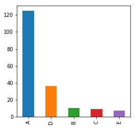

from matplotlib.pyplot import *
%matplotlib inlineStep 1. Scope-1 GHG emissions from CDP
The 2016 edition of the CDP emissions dataset (DCDP2016) provides annual mean GHG emissions in CO2 equivalents from 187 cities. Reported emissions categories include Scope 1 being the direct territorial emissions from residential and industrial heating, transport, industrial sectors, Scope 2 being emissions from purchased energy generated upstream from the city, mainly electricity, and Total Emissions, nominally equal to the sum of Scope 1 and Scope 2.
Here, emission data in DCDP2016 are checked for inconsistencies and replaced by a more recent version of the CDP data called DCDP2017. Based on this quality control procedure, quality flags are assigned to the GHG Scope-1 emissions of each city.
Emissions Quality Flags (EQFs)
A = TOT = S1 + S2 (within 15% tolerance) or TOT can be derived by summing scopes
B = S3 included in total, but TOT = S1 + S2. Both cannot be true.
C = S1 exists, S2 missing (3 cities), or in S2 exists, S1 missing (later derived) (6 cities)
D = both scopes are missing E = S1 exists, S2 missing, and TOT = S1 + S2 = S1. S1 likely correct therefore TOT is incomplete.
import numpy as np
from matplotlib import pyplot as pltimport pandas as pd
import collections
from collections import Counter
import os
import csvpd.set_option('display.max_colwidth', -1)pd.__version__u'0.22.0'np.version.version'1.14.0'matplotlib.__version__'2.1.2'csv.__version__'1.0'Variables
var_account = 'Account Number'
var_city2016 = 'City Short Name (CDP2016)'
var_city2017 = 'City (CDP2017)'
var_country = 'Country (CDP2016)'
var_pop2016 = 'Current Population (CDP2016)'
var_popyr2016 = 'Current Population Year (CDP2016)'
var_pop2017 = 'Population (CDP2017)'
var_popyr2017 = 'Population year (CDP2017)'
var_bd2016 = 'Boundary (CDP2016)'
var_bd2017 = 'Boundary (CDP2017)'
var_yr2016 = 'Measurement year only (CDP2016)'
var_yr2017 = 'Measurement year only (CDP2017)'
var_protocol2016 = 'Primary Methodology (CDP2016)'
var_protocol2017 = 'Protocol (CDP2017)'
#Emissions
var_tot2016 = 'Total City-wide Emissions (metric tonnes CO2e) (CDP2016)'
var_s1_2016 = 'Total Scope 1 Emissions (metric tonnes CO2e) (CDP2016)'
var_s2_2016 = 'Total Scope 2 Emissions (metric tonnes CO2e) (CDP2016)'
var_tot2017 = 'Total emissions (metric tonnes CO2e) (CDP2017)'
var_s1_2017 = 'Total Scope 1 Emissions (metric tonnes CO2e) (CDP2017)'
var_s2_2017 = 'Total Scope 2 Emissions (metric tonnes CO2e) (CDP2017)'
var_sf2016 = 'scope fraction (CDP2016)'
var_sf2017 = 'scope fraction (CDP2017)'
var_gases2016 = 'Gases included (CDP2016)'
var_gases2017 = 'Gases included (CDP2017)'
var_incScopes = 'Scopes Included (CDP2017)'
str_scopesAll = 'Total Scope 1, Scope 2 and Waste Scope 3 (Total BASIC emissions)'
str_scopesTwo = 'Total Scope 1 and Scope 2'
var_forgiveness = 0.15 #tolerance given for sum check
var_eqf = 'Emissions Quality Flag'Functions
def tag_column_names_with_datasetname(df, tagname):
""" Add to column name dataset from which column was obtained"""
col_names = list(df)
for cname in col_names:
if cname != 'Account Number':
df.rename(columns = {cname:cname + ' (' + tagname + ')'}, inplace = True)
return dfCase checks
# Case 1: TOT = s1 OR s2
# a) both scopes exist
def fn_case1a(df, var_s1, var_s2, var_tot):
""" Check if tot = s1 OR s2, where BOTH scopes exist.
Ignore cities that have already been checked.
Action: Assume total is incorrect. Recalculate total by summing the scopes."""
case1a = (
(~df[var_s1].isnull()) & (~df[var_s2].isnull())
& (df[var_tot] == df[var_s1]) | (df[var_tot] == df[var_s2])
& (df['CDP2016 data edited'].isnull())
)
return case1a# Case 1: TOT = s1 OR s2
# a) s1 OR s2 exists
def fn_case1b(df, var_s1, var_s2, var_tot):
""" Check if tot = s1 OR s2, where EITHER scope1 or scope2 exists.
Ignore cities that have already been checked.
Action: Check CDP2017, if that doesn't resolve it, nothing can be done."""
case1b = (
(df[var_tot] == df[var_s1]) | (df[var_tot] == df[var_s2])
& ( (~df[var_s1].isnull()) | (~df[var_s2].isnull()) )
& (df['CDP2016 data edited'].isnull())
)
return case1b# Case 2: TOT = s1 + s2
# Tolerable (WITHIN FORGIVENESS RANGE): 1 - var_forgiveness < scope fraction < 1 + var_forgiveness
def fn_case2_tolerable(df, var_s1, var_s2, var_tot, var_sf):
""" Check if tot < (s1+s2) within the forgiveness factor.
Ignore cities that have already been checked.
Action for CDP2016: See if CDP2017 has useable values when scope fraction is near the extremes.
If not, leave as is."""
case2_tolerable = (
(df[var_tot] != df[[var_s1, var_s2]].sum(axis=1) )
& (df['CDP2016 data edited'].isnull() )
& ( (1 - var_forgiveness) < df[var_sf] ) & ( df[var_sf] < (1 + var_forgiveness) )
)
return case2_tolerable# Case 3: TOT != s1 + s2
# a) Intolerable (OUTSIDE FORGIVENESS RANGE):
# scope fraction < 1 - var_forgiveness OR scope fraction > 1 + var_forgiveness
def fn_case3a_intolerable(df, var_s1, var_s2, var_tot, var_sf):
""" Check if tot << (s1+s2) by more than forgiveness factor.
Ignore cities that have already been checked.
Action for CDP2016: See if CDP2017 has useable values. If not, flag for CDP to check."""
case3a_intolerable = (
(df[var_tot] != df[[var_s1, var_s2]].sum(axis=1) )
& (df['CDP2016 data edited'].isnull() )
& ( df[var_sf] < (1 - var_forgiveness) ) | ( df[var_sf] > (1 + var_forgiveness) )
)
return case3a_intolerable# Case 3
# b) Intolerable: TOT < s1 OR s2 (NO FORGIVENESS)
def fn_case3b_intolerable(df, var_s, var_tot):
""" Check if tot < s_i, no forgiveness
Ignore cities that have already been checked.
Action for CDP2016: Flag for CDP to check."""
case3b_intolerable = (
(df[var_tot] < df[var_s] )
& (df['CDP2016 data edited'].isnull() )
)
return case3b_intolerable# Case 4:
# a) One scope missing, the other exists
def fn_case4a_fixable(df, var_s_missing, var_s_exists):
""" Check if s1 missing, s2 exists.
Ignore cities that have already been checked.
Action: Calculate s1 by s1 = TOT - s2."""
case4a_fixable = (
(df[var_s_missing].isnull()) & (~df[var_s_exists].isnull())
& (df['CDP2016 data edited'].isnull())
)
return case4a_fixable# Case 4
# b) both s1 and s2 are missing
def fn_case4b(df, var_s1, var_s2):
""" Check if both scopes are missing.
Ignore cities that have already been checked.
Action: See if CDP2017 has useable values. If that doesn't resolve it, nothing can be done."""
case4b = (
(df[var_s1].isnull()) & (df[var_s2].isnull())
& (df['CDP2016 data edited'].isnull())
)
return case4bFor replacing CDP2016 data by CDP2017
list2016 = ['Reporting Year (CDP2016)', 'Measurement Year (CDP2016)', 'Measurement year only (CDP2016)',
'Boundary (CDP2016)', 'Primary Methodology (CDP2016)', 'Methodology Details (CDP2016)',
'Gases included (CDP2016)', 'Total City-wide Emissions (metric tonnes CO2e) (CDP2016)',
'Total Scope 1 Emissions (metric tonnes CO2e) (CDP2016)',
'Total Scope 2 Emissions (metric tonnes CO2e) (CDP2016)',
'Increase/Decrease from last year (CDP2016)',
'Reason for increase/decrease in emissions (CDP2016)',
'Current Population (CDP2016)', 'Current Population Year (CDP2016)', 'scope fraction (CDP2016)'
]
list2017 = ['Reporting year (CDP2017)', 'Accounting year (CDP2017)', 'Measurement year only (CDP2017)',
'Boundary (CDP2017)', 'Protocol (CDP2017)', 'Comment (CDP2017)',
'Gases included (CDP2017)', 'Total emissions (metric tonnes CO2e) (CDP2017)',
'Total Scope 1 Emissions (metric tonnes CO2e) (CDP2017)',
'Total Scope 2 Emissions (metric tonnes CO2e) (CDP2017)',
'Increase/Decrease from last year (CDP2017)',
'Reason for increase/decrease in emissions (CDP2017)',
'Population (CDP2017)', 'Population year (CDP2017)', 'scope fraction (CDP2017)'
]
def fn_replace2016(df, condition, replaceReason, list2016, list2017):
""" Replaces values in list2016 columns with values from list2017 columns"""
idx=0
for colname in list2016:
df.loc[condition, colname] = df[list2017[idx]]
idx = idx + 1
df.loc[condition, 'CDP2016 data edited'] = 'Replaced by CDP2017 data. Reason: ' + replaceReason
return dfRead data
Updated CDP2016 (containing scopes)
https://data.cdp.net/Cities/2016-Citywide-GHG-Emissions/dfed-thx7/data
fname = 'DATA/ORIGINAL_EMISSIONS_SOURCEFILES/2016_-_Citywide_GHG_Emissions_updatedDec2017_formatted.csv'
df_scopes = pd.read_csv(fname)df_scopes.head(2)| Account Number | City Name | Country | City Short Name | C40 | Reporting Year | Measurement Year | Boundary | Primary Methodology | Methodology Details | ... | Current Population | City GDP | GDP Currency | Year of GDP | GDP Source | Average annual temperature (in Celsius) | Land area (in square km) | Average altitude (m) | City Location | Country Location | |
|---|---|---|---|---|---|---|---|---|---|---|---|---|---|---|---|---|---|---|---|---|---|
| 0 | 54650 | Prefeitura de Palmas | Brazil | Palmas | NaN | 2016 | 12/31/2013 12:00:00 AM | A metropolitan area | Global Protocol for Community-Scale Greenhouse Gas Emissions Inventories (GPC), (WRI, C40 and ICLEI) | O diagnóstico qualitativo das informações complementa a avaliação quantitativa. | ... | 272726.0 | 899887.0 | BRL Brazilian Real | 2016.0 | NaN | NaN | NaN | NaN | (-10.249091, -48.324286) | (-14.235004, -51.92528) |
| 1 | 59996 | Batangas City | Philippines | Batangas | NaN | 2016 | 12/20/2010 12:00:00 AM | A metropolitan area | 2006 IPCC Guidelines for National Greenhouse Gas Inventories | NaN | ... | 332458.0 | NaN | PHP Philippine Peso | NaN | NaN | 25.0 | 285.0 | 10.0 | (13.756465, 121.058308) | (12.879721, 121.774017) |
2 rows × 27 columns
df_scopes.shape(187, 27)df_scopes.loc[df_scopes['City Short Name'] == 'Rotterdam', ['City Short Name', 'Total City-wide Emissions (metric tonnes CO2e)', 'Total Scope 1 Emissions (metric tonnes CO2e)', 'Total Scope 2 Emissions (metric tonnes CO2e)', 'Gases included']]| City Short Name | Total City-wide Emissions (metric tonnes CO2e) | Total Scope 1 Emissions (metric tonnes CO2e) | Total Scope 2 Emissions (metric tonnes CO2e) | Gases included | |
|---|---|---|---|---|---|
| 95 | Rotterdam | 31512000.0 | 30011000.0 | 1501000.0 | CO2 |
Manually adjust Aspen and Pitkin County values
The emission values to use are:
TOT = 394,341 tCO2 and erase S1 and S2 values.
df_scopes.loc[df_scopes['City Short Name'] == 'Aspen and Pitkin County', ['City Short Name', 'Total City-wide Emissions (metric tonnes CO2e)', 'Total Scope 1 Emissions (metric tonnes CO2e)', 'Total Scope 2 Emissions (metric tonnes CO2e)', 'Gases included']]| City Short Name | Total City-wide Emissions (metric tonnes CO2e) | Total Scope 1 Emissions (metric tonnes CO2e) | Total Scope 2 Emissions (metric tonnes CO2e) | Gases included | |
|---|---|---|---|---|---|
| 132 | Aspen and Pitkin County | 394341.0 | 341208.0 | 136413.0 | CO2; CH4; N2O |
df_scopes.loc[df_scopes['City Short Name'] == 'Aspen and Pitkin County', 'Total Scope 1 Emissions (metric tonnes CO2e)'] = np.nan
df_scopes.loc[df_scopes['City Short Name'] == 'Aspen and Pitkin County', 'Total Scope 2 Emissions (metric tonnes CO2e)'] = np.nan#Check:
df_scopes.loc[df_scopes['City Short Name'] == 'Aspen and Pitkin County', ['City Short Name', 'Total City-wide Emissions (metric tonnes CO2e)', 'Total Scope 1 Emissions (metric tonnes CO2e)', 'Total Scope 2 Emissions (metric tonnes CO2e)', 'Gases included']]| City Short Name | Total City-wide Emissions (metric tonnes CO2e) | Total Scope 1 Emissions (metric tonnes CO2e) | Total Scope 2 Emissions (metric tonnes CO2e) | Gases included | |
|---|---|---|---|---|---|
| 132 | Aspen and Pitkin County | 394341.0 | NaN | NaN | CO2; CH4; N2O |
df_scopes.rename(columns = {'Average annual temperature (in Celsius)\xe2\x80\x8b':'Average annual temperature (in Celsius)'}, inplace = True)
df_scopes.rename(columns = {'\xe2\x80\x8bLand area (in square km)':'Land area (in square km)'}, inplace = True)Add formatted Measurement year column to df_scopes
#First change to datetime format
df_scopes['Measurement Year'] = pd.to_datetime(df_scopes['Measurement Year'])#Create new column, extracting only year from 'Measurement year' column
df_scopes['Measurement year only'] = df_scopes['Measurement Year'].dt.yeartag_column_names_with_datasetname(df_scopes, 'CDP2016')
list(df_scopes)['Account Number',
'City Name (CDP2016)',
'Country (CDP2016)',
'City Short Name (CDP2016)',
'C40 (CDP2016)',
'Reporting Year (CDP2016)',
'Measurement Year (CDP2016)',
'Boundary (CDP2016)',
'Primary Methodology (CDP2016)',
'Methodology Details (CDP2016)',
'Gases included (CDP2016)',
'Total City-wide Emissions (metric tonnes CO2e) (CDP2016)',
'Total Scope 1 Emissions (metric tonnes CO2e) (CDP2016)',
'Total Scope 2 Emissions (metric tonnes CO2e) (CDP2016)',
'Increase/Decrease from last year (CDP2016)',
'Reason for increase/decrease in emissions (CDP2016)',
'Current Population Year (CDP2016)',
'Current Population (CDP2016)',
'City GDP (CDP2016)',
'GDP Currency (CDP2016)',
'Year of GDP (CDP2016)',
'GDP Source (CDP2016)',
'Average annual temperature (in Celsius) (CDP2016)',
'Land area (in square km) (CDP2016)',
'Average altitude (m) (CDP2016)',
'City Location (CDP2016)',
'Country Location (CDP2016)',
'Measurement year only (CDP2016)']CDP 2017
https://data.cdp.net/Cities/2017-Cities-Community-Wide-Emissions/kyi6-dk5h/data
fname = 'DATA/ORIGINAL_EMISSIONS_SOURCEFILES/2017_-_Cities_Community_Wide_Emissions_updatedDec2017_formatted.csv'
df_2017 = pd.read_csv(fname)df_2017.rename(columns = {'Account number':'Account Number'}, inplace = True)
#white space
df_2017.rename(columns = {'Scopes Included ':'Scopes Included'}, inplace = True)#Extract measurement year only
df_2017['Accounting year'] = pd.to_datetime(df_2017['Accounting year'])
df_2017['Measurement year only'] = df_2017['Accounting year'].dt.yearManually adjust Rotterdam CDP2017 values
Scope 1 emissions excluding emissions from grid-supplied energy generation are 17,840,039 metric tonnes CO2e.
Remove Scope 2 value since they do not include eneregy generation.
df_2017.loc[df_2017['City'] == 'Rotterdam', ['City', 'Total emissions (metric tonnes CO2e)', 'Total Scope 1 Emissions (metric tonnes CO2e)', 'Total Scope 2 Emissions (metric tonnes CO2e)', 'Gases included']]| City | Total emissions (metric tonnes CO2e) | Total Scope 1 Emissions (metric tonnes CO2e) | Total Scope 2 Emissions (metric tonnes CO2e) | Gases included | |
|---|---|---|---|---|---|
| 220 | Rotterdam | 34190633.0 | 32619756.0 | 1570877.0 | CO2 |
df_2017.loc[df_2017['City'] == 'Rotterdam', 'Total Scope 1 Emissions (metric tonnes CO2e)'] = 17840039
df_2017.loc[df_2017['City'] == 'Rotterdam', 'Total Scope 2 Emissions (metric tonnes CO2e)'] = np.nan#Check:
df_2017.loc[df_2017['City'] == 'Rotterdam', ['City', 'Total emissions (metric tonnes CO2e)', 'Total Scope 1 Emissions (metric tonnes CO2e)', 'Total Scope 2 Emissions (metric tonnes CO2e)', var_eqf,'Gases included']]/homel/cnangini/anaconda2/lib/python2.7/site-packages/ipykernel_launcher.py:2: FutureWarning:
Passing list-likes to .loc or [] with any missing label will raise
KeyError in the future, you can use .reindex() as an alternative.
See the documentation here:
http://pandas.pydata.org/pandas-docs/stable/indexing.html#deprecate-loc-reindex-listlike
/homel/cnangini/anaconda2/lib/python2.7/site-packages/pandas/core/indexing.py:1367: FutureWarning:
Passing list-likes to .loc or [] with any missing label will raise
KeyError in the future, you can use .reindex() as an alternative.
See the documentation here:
http://pandas.pydata.org/pandas-docs/stable/indexing.html#deprecate-loc-reindex-listlike
return self._getitem_tuple(key)| City | Total emissions (metric tonnes CO2e) | Total Scope 1 Emissions (metric tonnes CO2e) | Total Scope 2 Emissions (metric tonnes CO2e) | Emissions Quality Flag | Gases included | |
|---|---|---|---|---|---|---|
| 220 | Rotterdam | 34190633.0 | 17840039.0 | NaN | NaN | CO2 |
tag_column_names_with_datasetname(df_2017, 'CDP2017')
print df_2017.shape(229, 24)Combine CDP2016 data with CDP2017
=> There are 153 cities in common between 2016 and 2017
#First merge 2016 and 2017 on same city, then filter for common cities and for same measurement year
print df_scopes.shape
print df_2017.shape
df_merge = pd.merge(df_scopes, df_2017, on='Account Number', how='outer')
print df_merge.shape(187, 28)
(229, 24)
(263, 51)Extract CDP2016 cities only from the merge
#Extract from merge CDP cities only
df_venn = df_merge[df_merge['Account Number'].isin(df_scopes['Account Number'])]
df_venn.shape(187, 51)#Number of CDP2016 cities in CDP2017 => 153
print 'Number of CDP2017 cities in CDP2017: ' + repr(df_venn.loc[~df_venn[var_tot2017].isnull(), var_city2016].count())Number of CDP2017 cities in CDP2017: 153QA/QC on CDP2016 data
Look if cities with large scope discord in 2016 can be replaced by 2017 data where large discord is defined as Scope1 + Scope2 != total by > 15%
NB!!! In CDP2017, Tot Emissions is not necessarily just scope1 + scope2. There could be more, e.g.:
df_venn[‘Scopes Included (CDP2017)’][5] = ‘Total Scope 1, Scope 2 and Waste Scope 3 (Total BASIC emissions)’
df_venn.loc[ (~df_venn[var_s1_2016].isnull()) & (~df_venn[var_s2_2016].isnull()), ['City Short Name (CDP2016)', var_s1_2016, var_s2_2016] ]| City Short Name (CDP2016) | Total Scope 1 Emissions (metric tonnes CO2e) (CDP2016) | Total Scope 2 Emissions (metric tonnes CO2e) (CDP2016) | |
|---|---|---|---|
| 0 | Palmas | 589055.31 | 36336.28 |
| 1 | Batangas | 344419.00 | 107239.00 |
| 2 | Okayama | 114000.00 | 6802000.00 |
| 4 | Alton, IL | 138542.00 | 262537.00 |
| 5 | Eugene | 1106250.00 | 137500.00 |
| 6 | Cape Town | 9783734.00 | 12860112.00 |
| 7 | Bogotá | 10679585.14 | 1094791.71 |
| 9 | Durban | 11681810.00 | 10905271.00 |
| 10 | Portland, OR | 4610317.00 | 2364227.00 |
| 17 | Paris | 3359242.00 | 1836421.00 |
| 20 | Buenos Aires | 15561157.00 | 4105971.00 |
| 21 | Adelaide | 63724.00 | 422817.00 |
| 22 | Canberra | 1757500.00 | 2246400.00 |
| 23 | Melbourne | 785326.00 | 3587094.00 |
| 25 | Athens | 1260355.00 | 3451221.00 |
| 26 | Sydney | 359064.00 | 3197465.00 |
| 28 | Belo Horizonte | 2804787.00 | 436925.00 |
| 30 | Curitiba | 2686488.00 | 349791.00 |
| 31 | Florianópolis | 1305206.00 | 145259.00 |
| 33 | Región Metropolitana de Santiago | 23120027.80 | 8306669.00 |
| 34 | Udine | 438005.00 | 175583.00 |
| 35 | Windsor | 2475703.00 | 6709.00 |
| 37 | Rio de Janeiro | 16171534.00 | 4096511.00 |
| 38 | Salvador | 3242166.00 | 366395.00 |
| 40 | Calgary | 10448332.00 | 7758900.00 |
| 41 | City of Winnipeg | 5167453.00 | 89872.00 |
| 42 | Hjørring | 289000.00 | 128000.00 |
| 43 | Toronto | 16151019.00 | 2169947.00 |
| 45 | Edmonton | 10215142.00 | 6361560.00 |
| 46 | Hamilton | 6304593.00 | 10164690.00 |
| ... | ... | ... | ... |
| 143 | Yonkers | 982940.00 | 265710.00 |
| 144 | Denver | 4557000.00 | 4385000.00 |
| 145 | Atlanta | 3548215.00 | 5476020.00 |
| 151 | Boston | 3603270.00 | 2462912.00 |
| 152 | Boulder | 741287.00 | 980709.00 |
| 153 | Knoxville | 2061435.00 | 1938439.00 |
| 155 | Cleveland | 7750563.00 | 4139032.00 |
| 156 | District of Columbia | 3132786.00 | 4253621.00 |
| 157 | Lakewood | 553900.00 | 1173960.00 |
| 158 | Lancaster, PA | 37918.00 | 214442.00 |
| 159 | Las Vegas | 11002925.00 | 18654205.00 |
| 160 | Los Altos Hills | 47552.00 | 9691.00 |
| 162 | University City, MO | 266265.00 | 234882.00 |
| 163 | Minneapolis | 2890572.00 | 1904136.00 |
| 166 | New York City | 20995619.00 | 16888770.00 |
| 167 | Oakland | 578560.00 | 368019.00 |
| 169 | Philadelphia | 12397594.06 | 6815276.00 |
| 170 | Piedmont, CA | 17876.00 | 25566.00 |
| 172 | St Louis | 2481945.42 | 6153317.90 |
| 173 | Pittsburgh | 2073556.00 | 2729490.00 |
| 175 | Richmond, VA | 1470127.00 | 1682371.00 |
| 176 | San Francisco | 4186111.00 | 1131352.00 |
| 177 | Santa Monica | 302510.00 | 241253.00 |
| 178 | Savannah | 1203108.00 | 1228219.00 |
| 180 | Somerville, MA | 461798.00 | 124510.00 |
| 181 | Tucson | 2571089.00 | 4088012.00 |
| 182 | Alcaldía Metropolitana de Caracas | 14364103.00 | 3410672.00 |
| 184 | La Paz | 1152922.40 | 273611.40 |
| 185 | Sorocaba | 980290.00 | 133680.50 |
| 186 | Zaragoza | 1175162.74 | 613341.01 |
126 rows × 3 columns
Define the Scope Fraction
scope fraction = (Scope_1 + Scope_2)/total
#scope fraction for CDP2016
df_venn.loc[ (~df_venn[var_s1_2016].isnull()) & (~df_venn[var_s2_2016].isnull()), 'scope fraction (CDP2016)'] = (df_venn[var_s1_2016] + df_venn[var_s2_2016])/df_venn[var_tot2016] #.round(2)/homel/cnangini/anaconda2/lib/python2.7/site-packages/pandas/core/indexing.py:357: SettingWithCopyWarning:
A value is trying to be set on a copy of a slice from a DataFrame.
Try using .loc[row_indexer,col_indexer] = value instead
See the caveats in the documentation: http://pandas.pydata.org/pandas-docs/stable/indexing.html#indexing-view-versus-copy
self.obj[key] = _infer_fill_value(value)
/homel/cnangini/anaconda2/lib/python2.7/site-packages/pandas/core/indexing.py:537: SettingWithCopyWarning:
A value is trying to be set on a copy of a slice from a DataFrame.
Try using .loc[row_indexer,col_indexer] = value instead
See the caveats in the documentation: http://pandas.pydata.org/pandas-docs/stable/indexing.html#indexing-view-versus-copy
self.obj[item] = s#scope fraction for CDP2017
df_venn.loc[ (~df_venn[var_s1_2017].isnull()) & (~df_venn[var_s2_2017].isnull()), 'scope fraction (CDP2017)'] = ((df_venn[var_s1_2017] + df_venn[var_s2_2017])/df_venn[var_tot2017]).round(2)print df_venn.shape(187, 53)df_venn = df_venn.sort_values('scope fraction (CDP2016)', ascending=False)df_venn[[var_city2016, var_tot2016, var_s1_2016, var_s2_2016, var_tot2017, var_s1_2017, var_s2_2017, var_sf2016, var_sf2017, var_incScopes]].head(6)| City Short Name (CDP2016) | Total City-wide Emissions (metric tonnes CO2e) (CDP2016) | Total Scope 1 Emissions (metric tonnes CO2e) (CDP2016) | Total Scope 2 Emissions (metric tonnes CO2e) (CDP2016) | Total emissions (metric tonnes CO2e) (CDP2017) | Total Scope 1 Emissions (metric tonnes CO2e) (CDP2017) | Total Scope 2 Emissions (metric tonnes CO2e) (CDP2017) | scope fraction (CDP2016) | scope fraction (CDP2017) | Scopes Included (CDP2017) | |
|---|---|---|---|---|---|---|---|---|---|---|
| 124 | Pingtung | 4604805.0 | 3.704683e+10 | 1.435430e+10 | 4969246.69 | 2768427.4 | 2200856.14 | 11162.499957 | 1.00 | Total Scope 1, Scope 2 and Waste Scope 3 (Total BASIC emissions) |
| 79 | Lima | 15432105.0 | 1.237873e+07 | 1.543210e+07 | 2868080.00 | 12688756.0 | 3919620.00 | 1.802142 | 5.79 | Total Scope 1, Scope 2 and Waste Scope 3 (Total BASIC emissions) |
| 61 | Lahti | 685460.0 | 9.221200e+05 | 1.236800e+05 | 717200.00 | 717200.0 | 157607.00 | 1.525691 | 1.22 | Total Scope 1 and Scope 2 |
| 105 | Cascais | 565382.0 | 5.653820e+05 | 2.662210e+05 | 565382.00 | 565382.0 | 266221.00 | 1.470869 | 1.47 | Total Scope 1 and Scope 2 |
| 33 | Región Metropolitana de Santiago | 23120027.8 | 2.312003e+07 | 8.306669e+06 | 28406420.00 | 18030830.0 | 10375589.00 | 1.359285 | 1.00 | Total Scope 1 and Scope 2 |
| 89 | Ljubljana | 2079758.0 | 1.829808e+06 | 9.040420e+05 | 2733850.00 | 1829808.0 | 904042.00 | 1.314504 | 1.00 | Total Scope 1, Scope 2 and Waste Scope 3 (Total BASIC emissions) |
Case 1. CDP2016 TOT == scope1 OR scope2
Case 1a. both scopes exist
#Initialize column to keep track of edits made to CDP2016 data
df_venn['CDP2016 data edited'] = np.nancurrentCondition = fn_case1a(df_venn, var_s1_2016, var_s2_2016, var_tot2016)
print df_venn.loc[currentCondition, var_city2016].count()
df_venn.loc[currentCondition, [var_city2016, var_tot2016, var_s1_2016, var_s2_2016, var_tot2017, var_s1_2017, var_s2_2017, var_sf2016, var_sf2017, var_incScopes, 'CDP2016 data edited'] ]
#=> 4 cities satisfy Case 1.4| City Short Name (CDP2016) | Total City-wide Emissions (metric tonnes CO2e) (CDP2016) | Total Scope 1 Emissions (metric tonnes CO2e) (CDP2016) | Total Scope 2 Emissions (metric tonnes CO2e) (CDP2016) | Total emissions (metric tonnes CO2e) (CDP2017) | Total Scope 1 Emissions (metric tonnes CO2e) (CDP2017) | Total Scope 2 Emissions (metric tonnes CO2e) (CDP2017) | scope fraction (CDP2016) | scope fraction (CDP2017) | Scopes Included (CDP2017) | CDP2016 data edited | |
|---|---|---|---|---|---|---|---|---|---|---|---|
| 79 | Lima | 15432105.0 | 12378734.0 | 15432105.0 | 2868080.0 | 12688756.0 | 3919620.0 | 1.802142 | 5.79 | Total Scope 1, Scope 2 and Waste Scope 3 (Total BASIC emissions) | NaN |
| 105 | Cascais | 565382.0 | 565382.0 | 266221.0 | 565382.0 | 565382.0 | 266221.0 | 1.470869 | 1.47 | Total Scope 1 and Scope 2 | NaN |
| 33 | Región Metropolitana de Santiago | 23120027.8 | 23120027.8 | 8306669.0 | 28406420.0 | 18030830.0 | 10375589.0 | 1.359285 | 1.00 | Total Scope 1 and Scope 2 | NaN |
| 35 | Windsor | 2475703.0 | 2475703.0 | 6709.0 | 1074018.0 | 1775831.0 | 109527.0 | 1.002710 | 1.76 | Total Scope 1, Scope 2 and Waste Scope 3 (Total BASIC emissions) | NaN |
Action for Case 1a
- Assume the total is incorrect. Recalculate total by summing scopes.
- Re-calculate scope fraction based on new total.
- Add a note in new column ‘CDP2016 data edited’ to keep track of all modified data
df_venn.loc[currentCondition, var_tot2016] = df_venn[[var_s1_2016, var_s2_2016]].sum(axis=1)
df_venn.loc[currentCondition, var_sf2016] = df_venn[[var_s1_2016, var_s2_2016]].sum(axis=1)/df_venn[var_tot2016]
df_venn.loc[currentCondition, 'CDP2016 data edited'] = 'Case 1a: re-calculated CDP2016 TOT by summing CDP2016 s1+s2'df_venn.loc[currentCondition, [var_city2016, var_sf2016, var_tot2016,var_s1_2016,var_s2_2016, 'CDP2016 data edited']]| City Short Name (CDP2016) | scope fraction (CDP2016) | Total City-wide Emissions (metric tonnes CO2e) (CDP2016) | Total Scope 1 Emissions (metric tonnes CO2e) (CDP2016) | Total Scope 2 Emissions (metric tonnes CO2e) (CDP2016) | CDP2016 data edited | |
|---|---|---|---|---|---|---|
| 79 | Lima | 1.0 | 27810839.0 | 12378734.0 | 15432105.0 | Case 1a: re-calculated CDP2016 TOT by summing CDP2016 s1+s2 |
| 105 | Cascais | 1.0 | 831603.0 | 565382.0 | 266221.0 | Case 1a: re-calculated CDP2016 TOT by summing CDP2016 s1+s2 |
| 33 | Región Metropolitana de Santiago | 1.0 | 31426696.8 | 23120027.8 | 8306669.0 | Case 1a: re-calculated CDP2016 TOT by summing CDP2016 s1+s2 |
| 35 | Windsor | 1.0 | 2482412.0 | 2475703.0 | 6709.0 | Case 1a: re-calculated CDP2016 TOT by summing CDP2016 s1+s2 |
Conclusion for Case 1a
- all 4 cities that pass this check have been resolved
#Record changes in 'CDP2016 data edited' column
df_venn.loc[currentCondition, 'CDP2016 data edited'] = (
'CDP2016 TOT recalculated by summing both CDP2016 scopes.'
)#Assign Emisisons Quality Flag
df_venn.loc[currentCondition, 'Emissions Quality Flag'] = 'A'Case 1b. TOT = s1 OR s2, only one of the scopes exist
currentCondition = fn_case1b(df_venn, var_s1_2016, var_s2_2016, var_tot2016)
print df_venn.loc[currentCondition, var_city2016].count()
df_venn.loc[currentCondition, [var_city2016, var_tot2016, var_s1_2016, var_s2_2016, var_tot2017, var_s1_2017, var_s2_2017, var_sf2016, var_sf2017, var_incScopes, 'CDP2016 data edited'] ]9| City Short Name (CDP2016) | Total City-wide Emissions (metric tonnes CO2e) (CDP2016) | Total Scope 1 Emissions (metric tonnes CO2e) (CDP2016) | Total Scope 2 Emissions (metric tonnes CO2e) (CDP2016) | Total emissions (metric tonnes CO2e) (CDP2017) | Total Scope 1 Emissions (metric tonnes CO2e) (CDP2017) | Total Scope 2 Emissions (metric tonnes CO2e) (CDP2017) | scope fraction (CDP2016) | scope fraction (CDP2017) | Scopes Included (CDP2017) | CDP2016 data edited | |
|---|---|---|---|---|---|---|---|---|---|---|---|
| 56 | Bogor | 2193642.0 | 2193642.0 | NaN | 2193642.0 | 954020.0 | 1239622.0 | NaN | 1.0 | Total Scope 1 and Scope 2 | NaN |
| 58 | Addis Ababa | 3708292.0 | 3708292.0 | NaN | 3708292.0 | 3708292.0 | NaN | NaN | NaN | Total Scope 1, Scope 2 and Waste Scope 3 (Total BASIC emissions) | NaN |
| 66 | Reykjavík | 346630.0 | 346630.0 | NaN | NaN | NaN | NaN | NaN | NaN | NaN | NaN |
| 88 | Vilnius | 1994560.0 | 1994560.0 | NaN | 1944330.0 | 1944329.0 | NaN | NaN | NaN | Total Scope 1 and Scope 2 | NaN |
| 90 | Lagos | 29426266.0 | 29426266.0 | NaN | NaN | NaN | NaN | NaN | NaN | NaN | NaN |
| 133 | Davis, CA | 348437.0 | 348437.0 | NaN | 348437.0 | 348437.0 | NaN | NaN | NaN | Total Scope 1 and Scope 2 | NaN |
| 164 | Nashville and Davidson | 12275845.0 | 12275845.0 | NaN | 12481363.0 | 6680194.0 | 5801169.0 | NaN | 1.0 | Total Scope 1, Scope 2 (Total BASIC emissions) | NaN |
| 168 | Palo Alto | 152631.0 | 152631.0 | NaN | 153948.0 | 153948.0 | NaN | NaN | NaN | Total Scope 1 and Scope 2 | NaN |
| 183 | Brasília | 7739830.0 | 7739830.0 | NaN | 7739830.0 | NaN | NaN | NaN | NaN | Total Scope 1 and Scope 2 | NaN |
Action for Case 1b
- For 2 cities (Bogor; Nashville and Davidson) where sf2017 = 1.0, can replace with CDP2017. Note that Scopes Included (CDP2017) does not have Scope 3, so the TOT makes sense. Assign Emissions Quality Flag A
- Assume that TOT is wrong for remaining 7 cities because missing scope is 0 => EQF E. Therefore leave as is. Especially as CDP2017 replacement candidate values either do not exist, have the same problem, or include Scope 3…
replaceReason = (
' TOT = s1, s2 does not exist (Case 1b) in CDP2016. Soln: Replace with CDP2017 values' \
' (TOT, s1 and s2)'
)
fn_replace2016(
df_venn, df_venn[var_city2016].str.contains('Bogor'), replaceReason, list2016, list2017
)
fn_replace2016(
df_venn, df_venn[var_city2016].str.contains('Nashville'), replaceReason, list2016, list2017
)
#Assign Emissions Quality Flag (EQF) A
df_venn.loc[df_venn[var_city2016].str.contains('Bogor'), 'Emissions Quality Flag'] = 'A'
df_venn.loc[df_venn[var_city2016].str.contains('Nashville'), 'Emissions Quality Flag'] = 'A'
#Check
df_venn.loc[df_venn[var_city2016].str.contains('Bogor'),
[var_city2016, var_tot2016, var_s1_2016, var_s2_2016, var_sf2016,
var_sf2017,var_tot2017,
var_s1_2017, var_s2_2017,'CDP2016 data edited', 'Emissions Quality Flag']]| City Short Name (CDP2016) | Total City-wide Emissions (metric tonnes CO2e) (CDP2016) | Total Scope 1 Emissions (metric tonnes CO2e) (CDP2016) | Total Scope 2 Emissions (metric tonnes CO2e) (CDP2016) | scope fraction (CDP2016) | scope fraction (CDP2017) | Total emissions (metric tonnes CO2e) (CDP2017) | Total Scope 1 Emissions (metric tonnes CO2e) (CDP2017) | Total Scope 2 Emissions (metric tonnes CO2e) (CDP2017) | CDP2016 data edited | Emissions Quality Flag | |
|---|---|---|---|---|---|---|---|---|---|---|---|
| 56 | Bogor | 2193642.0 | 954020.0 | 1239622.0 | 1.0 | 1.0 | 2193642.0 | 954020.0 | 1239622.0 | Replaced by CDP2017 data. Reason: TOT = s1, s2 does not exist (Case 1b) in CDP2016. Soln: Replace with CDP2017 values (TOT, s1 and s2) | A |
#Check
df_venn.loc[df_venn[var_city2016].str.contains('Nashville'),
[var_city2016, var_tot2016, var_s1_2016, var_s2_2016, var_sf2016,
var_sf2017,var_tot2017,
var_s1_2017, var_s2_2017,'CDP2016 data edited', 'Emissions Quality Flag']]| City Short Name (CDP2016) | Total City-wide Emissions (metric tonnes CO2e) (CDP2016) | Total Scope 1 Emissions (metric tonnes CO2e) (CDP2016) | Total Scope 2 Emissions (metric tonnes CO2e) (CDP2016) | scope fraction (CDP2016) | scope fraction (CDP2017) | Total emissions (metric tonnes CO2e) (CDP2017) | Total Scope 1 Emissions (metric tonnes CO2e) (CDP2017) | Total Scope 2 Emissions (metric tonnes CO2e) (CDP2017) | CDP2016 data edited | Emissions Quality Flag | |
|---|---|---|---|---|---|---|---|---|---|---|---|
| 164 | Nashville and Davidson | 12481363.0 | 6680194.0 | 5801169.0 | 1.0 | 1.0 | 12481363.0 | 6680194.0 | 5801169.0 | Replaced by CDP2017 data. Reason: TOT = s1, s2 does not exist (Case 1b) in CDP2016. Soln: Replace with CDP2017 values (TOT, s1 and s2) | A |
Add Emissions Quality Flag
EQF E: TOT is not the total since one scope is missing.
df_venn.loc[currentCondition & (df_venn[var_sf2016].isnull()),'Emissions Quality Flag'] = 'E'#Make note in 'CDP2016 data edited' column
df_venn.loc[currentCondition & (df_venn[var_sf2016].isnull()), 'CDP2016 data edited'] = (
'CDP2016 TOT likely wrong because one scope is missing.'
)#Check
df_venn.loc[df_venn['Emissions Quality Flag']=='E',
[var_city2016, var_tot2016, var_s1_2016, var_s2_2016, var_sf2016,
var_sf2017,var_tot2017,
var_s1_2017, var_s2_2017,'CDP2016 data edited', 'Emissions Quality Flag']]| City Short Name (CDP2016) | Total City-wide Emissions (metric tonnes CO2e) (CDP2016) | Total Scope 1 Emissions (metric tonnes CO2e) (CDP2016) | Total Scope 2 Emissions (metric tonnes CO2e) (CDP2016) | scope fraction (CDP2016) | scope fraction (CDP2017) | Total emissions (metric tonnes CO2e) (CDP2017) | Total Scope 1 Emissions (metric tonnes CO2e) (CDP2017) | Total Scope 2 Emissions (metric tonnes CO2e) (CDP2017) | CDP2016 data edited | Emissions Quality Flag | |
|---|---|---|---|---|---|---|---|---|---|---|---|
| 58 | Addis Ababa | 3708292.0 | 3708292.0 | NaN | NaN | NaN | 3708292.0 | 3708292.0 | NaN | CDP2016 TOT likely wrong because one scope is missing. | E |
| 66 | Reykjavík | 346630.0 | 346630.0 | NaN | NaN | NaN | NaN | NaN | NaN | CDP2016 TOT likely wrong because one scope is missing. | E |
| 88 | Vilnius | 1994560.0 | 1994560.0 | NaN | NaN | NaN | 1944330.0 | 1944329.0 | NaN | CDP2016 TOT likely wrong because one scope is missing. | E |
| 90 | Lagos | 29426266.0 | 29426266.0 | NaN | NaN | NaN | NaN | NaN | NaN | CDP2016 TOT likely wrong because one scope is missing. | E |
| 133 | Davis, CA | 348437.0 | 348437.0 | NaN | NaN | NaN | 348437.0 | 348437.0 | NaN | CDP2016 TOT likely wrong because one scope is missing. | E |
| 168 | Palo Alto | 152631.0 | 152631.0 | NaN | NaN | NaN | 153948.0 | 153948.0 | NaN | CDP2016 TOT likely wrong because one scope is missing. | E |
| 183 | Brasília | 7739830.0 | 7739830.0 | NaN | NaN | NaN | 7739830.0 | NaN | NaN | CDP2016 TOT likely wrong because one scope is missing. | E |
Case 2. CDP2016 TOT = (scope1 + scope2) within forgiveness range
Exclude cities that have already been investigated (column ‘CDP2016 data edited’ not null).
currentCondition = fn_case2_tolerable(df_venn, var_s1_2016, var_s2_2016, var_tot2016, var_sf2016)
print df_venn.loc[currentCondition, var_city2016].count()
df_venn.loc[currentCondition, [var_city2016, var_tot2016, var_s1_2016, var_s2_2016, var_tot2017, var_s1_2017, var_s2_2017, var_sf2016, var_sf2017, var_incScopes, 'CDP2016 data edited'] ].head(4)33| City Short Name (CDP2016) | Total City-wide Emissions (metric tonnes CO2e) (CDP2016) | Total Scope 1 Emissions (metric tonnes CO2e) (CDP2016) | Total Scope 2 Emissions (metric tonnes CO2e) (CDP2016) | Total emissions (metric tonnes CO2e) (CDP2017) | Total Scope 1 Emissions (metric tonnes CO2e) (CDP2017) | Total Scope 2 Emissions (metric tonnes CO2e) (CDP2017) | scope fraction (CDP2016) | scope fraction (CDP2017) | Scopes Included (CDP2017) | CDP2016 data edited | |
|---|---|---|---|---|---|---|---|---|---|---|---|
| 84 | Suwon | 5775155.00 | 3670140.00 | 2710235.00 | NaN | NaN | NaN | 1.104797 | NaN | NaN | NaN |
| 120 | Lausanne | 499573.00 | 456843.00 | 45730.00 | NaN | NaN | NaN | 1.006005 | NaN | NaN | NaN |
| 186 | Zaragoza | 1785603.75 | 1175162.74 | 613341.01 | 1785603.750 | 1175162.74 | 613341.01 | 1.001624 | 1.0 | Total Scope 1 and Scope 2 | NaN |
| 106 | Faro | 265.85 | 128.00 | 138.00 | 246.331 | 104.00 | 143.00 | 1.000564 | 1.0 | Total Scope 1 and Scope 2 | NaN |
#How much within tolerance are these 33 cities?
df_venn.loc[currentCondition, [var_city2016, var_sf2016]].sort_values(var_sf2016)| City Short Name (CDP2016) | scope fraction (CDP2016) | |
|---|---|---|
| 139 | Houston | 0.914997 |
| 7 | Bogotá | 0.952672 |
| 38 | Salvador | 0.975560 |
| 102 | Madrid | 0.979461 |
| 1 | Batangas | 0.987688 |
| 176 | San Francisco | 0.988066 |
| 172 | St Louis | 0.992139 |
| 116 | Iowa | 0.993070 |
| 5 | Eugene | 0.995000 |
| 126 | Hermosa Beach, CA | 0.999534 |
| 129 | Bournemouth | 0.999968 |
| 135 | Burlington | 0.999992 |
| 75 | Venezia | 0.999999 |
| 185 | Sorocaba | 1.000000 |
| 28 | Belo Horizonte | 1.000000 |
| 73 | Milano | 1.000000 |
| 182 | Alcaldía Metropolitana de Caracas | 1.000000 |
| 184 | La Paz | 1.000000 |
| 74 | Kadiovacik | 1.000000 |
| 0 | Palmas | 1.000000 |
| 169 | Philadelphia | 1.000000 |
| 115 | Yilan | 1.000000 |
| 81 | Guaratinguetá | 1.000000 |
| 53 | Vancouver | 1.000000 |
| 110 | Santarém | 1.000003 |
| 86 | Tokyo | 1.000014 |
| 113 | Pretoria - Tshwane | 1.000148 |
| 82 | Ravenna | 1.000303 |
| 112 | Johannesburg | 1.000513 |
| 106 | Faro | 1.000564 |
| 186 | Zaragoza | 1.001624 |
| 120 | Lausanne | 1.006005 |
| 84 | Suwon | 1.104797 |
Conclusion for Case 2
Of the 33 cities that pass Case 2 check:
* The scope fraction for all ranges from 0.91-1.10 for the 29 cities that pass this check, therefore leave as is.
#Check where TOT == S1+S2 exactly
def fn_case2_exact(df, var_s1, var_s2, var_tot, var_sf):
""" Check if tot == (s1+s2) exactly.
Ignore cities that have already been checked."""
case2_exact = (
(df[var_tot] == df[[var_s1, var_s2]].sum(axis=1) )
& (df['CDP2016 data edited'].isnull() )
)
return case2_exactcurrentCondition = fn_case2_exact(df_venn, var_s1_2016, var_s2_2016, var_tot2016, var_sf2016)
print df_venn.loc[currentCondition, var_city2016].count()
df_venn.loc[currentCondition, [var_city2016, var_tot2016, var_s1_2016, var_s2_2016, var_tot2017,
var_s1_2017, var_s2_2017, var_sf2016, var_sf2017, var_incScopes,
'CDP2016 data edited'] ].head(4)76| City Short Name (CDP2016) | Total City-wide Emissions (metric tonnes CO2e) (CDP2016) | Total Scope 1 Emissions (metric tonnes CO2e) (CDP2016) | Total Scope 2 Emissions (metric tonnes CO2e) (CDP2016) | Total emissions (metric tonnes CO2e) (CDP2017) | Total Scope 1 Emissions (metric tonnes CO2e) (CDP2017) | Total Scope 2 Emissions (metric tonnes CO2e) (CDP2017) | scope fraction (CDP2016) | scope fraction (CDP2017) | Scopes Included (CDP2017) | CDP2016 data edited | |
|---|---|---|---|---|---|---|---|---|---|---|---|
| 34 | Udine | 613588.00 | 438005.00 | 175583.0 | 613588.00 | 438005.0 | 175583.00 | 1.0 | 1.00 | Total Scope 1, Scope 2 and Waste Scope 3 (Total BASIC emissions) | NaN |
| 142 | Arlington, VA | 2480700.00 | 1257464.00 | 1223236.0 | 279743.00 | 1239302.0 | 1273559.00 | 1.0 | 8.98 | Total Scope 1, Scope 2 and Waste Scope 3 (Total BASIC emissions) | NaN |
| 137 | Dallas | 17229388.00 | 119881.00 | 17109507.0 | NaN | NaN | NaN | 1.0 | NaN | NaN | NaN |
| 136 | Flagstaff | 1211617.47 | 621293.07 | 590324.4 | 1424562.96 | 949707.2 | 474855.76 | 1.0 | 1.00 | Total Scope 1 and Scope 2 | NaN |
df_venn.loc[df_venn[var_city2016]=='Rotterdam', [var_city2016, var_tot2016,var_tot2017,var_s1_2016, var_s1_2017,var_s2_2016, var_s2_2017,'CDP2016 data edited',var_eqf]]| City Short Name (CDP2016) | Total City-wide Emissions (metric tonnes CO2e) (CDP2016) | Total emissions (metric tonnes CO2e) (CDP2017) | Total Scope 1 Emissions (metric tonnes CO2e) (CDP2016) | Total Scope 1 Emissions (metric tonnes CO2e) (CDP2017) | Total Scope 2 Emissions (metric tonnes CO2e) (CDP2016) | Total Scope 2 Emissions (metric tonnes CO2e) (CDP2017) | CDP2016 data edited | Emissions Quality Flag | |
|---|---|---|---|---|---|---|---|---|---|
| 95 | Rotterdam | 31512000.0 | 34190633.0 | 30011000.0 | 17840039.0 | 1501000.0 | NaN | NaN | NaN |
replaceReason = (
' TOT = s1, s2 does not exist (Case 1b) in CDP2016. Soln: Replace with CDP2017 values' \
' (TOT, s1 and s2)'
)
fn_replace2016(
df_venn, df_venn[var_city2016].str.contains('Bogor'), replaceReason, list2016, list2017
)| Account Number | City Name (CDP2016) | Country (CDP2016) | City Short Name (CDP2016) | C40 (CDP2016) | Reporting Year (CDP2016) | Measurement Year (CDP2016) | Boundary (CDP2016) | Primary Methodology (CDP2016) | Methodology Details (CDP2016) | ... | Reason for increase/decrease in emissions (CDP2017) | Population (CDP2017) | Population year (CDP2017) | City Location (CDP2017) | Country Location (CDP2017) | Measurement year only (CDP2017) | scope fraction (CDP2016) | scope fraction (CDP2017) | CDP2016 data edited | Emissions Quality Flag | |
|---|---|---|---|---|---|---|---|---|---|---|---|---|---|---|---|---|---|---|---|---|---|
| 124 | 57347 | Pingtung County Government | Taiwan | Pingtung | NaN | 2016.0 | 2013-12-31 00:00:00 | Administrative boundary of a local government | Global Protocol for Community-Scale Greenhouse Gas Emissions Inventories (GPC), (WRI, C40 and ICLEI) | NaN | ... | The main increased department are energy, industry, and waste | 835792.0 | 2016.0 | (22.6558, 120.4703) | (23.69781, 120.960515) | 2013.0 | 11162.499957 | 1.00 | NaN | NaN |
| 79 | 31170 | Metropolitan Municipality of Lima | Peru | Lima | C40 | 2016.0 | 2012-12-31 00:00:00 | A metropolitan area | Global Protocol for Community-Scale Greenhouse Gas Emissions Inventories (GPC), (WRI, C40 and ICLEI) | La metodología Global Protocol for Community- scale Greenhouse Gas emissions (GPC) establece que los límites pueden definirse en cualquiera de tres niveles: Internacional, inter-ciudades/subnacional, o al interior de la ciudad. | ... | Han aumentado puesto que no se ha trabajado en proyectos o programas que tengan gran potencial de reducción en gases con efecto invernadero. | 8755262.0 | 2014.0 | (-12.046374, -77.042793) | (-9.189967, -75.015152) | 2015.0 | 1.000000 | 5.79 | CDP2016 TOT recalculated by summing both CDP2016 scopes. | A |
| 61 | 54402 | City of Lahti | Finland | Lahti | NaN | 2016.0 | 2013-12-31 00:00:00 | Administrative boundary of a local government | 2006 IPCC Guidelines for National Greenhouse Gas Inventories | With some national modifications | ... | Decreased from baseline year 1990. New waste gasification plant 2012 and collecting separate energy waste from citizens. Effective waste water treatment with collecting biogas before composting the sludge. Effective and energy-efficient waste and biowaste collection and treatment (new biogas plant 2014). Better energy effiency in buildings. | 119452.0 | 2016.0 | (60.9833, 25.65) | (61.92411, 25.748151) | 2015.0 | 1.525691 | 1.22 | NaN | NaN |
| 105 | 50680 | Cascais | Portugal | Cascais | NaN | 2016.0 | 2010-12-31 00:00:00 | Administrative boundary of a local government | 2006 IPCC Guidelines for National Greenhouse Gas Inventories | this was made with calculous platforms from international organizations such as UN (IPCC, and ICLEI) as well as EU comission | ... | We have verified a decrease in fuel consumption between the mentioned time period. | 208122.0 | 2014.0 | (38.6970565, -9.4222945) | (39.399872, -8.224454) | 2010.0 | 1.000000 | 1.47 | CDP2016 TOT recalculated by summing both CDP2016 scopes. | A |
| 33 | 31180 | Región Metropolitana de Santiago | Chile | Región Metropolitana de Santiago | C40 | 2016.0 | 2013-12-31 00:00:00 | A metropolitan area | 2006 IPCC Guidelines for National Greenhouse Gas Inventories | GPC was used for organizing information, while for the estimation of emissions (equations and emission factors) the IPCC guidelines was used. | ... | The emissions has decreased 1% respect year 2012. There was a significant decrease in the energy industry emissions, however it was counteracted by an increase in the transport sector. | 6527903.0 | 2012.0 | (-33.44889, -70.669265) | (-35.675147, -71.542969) | 2013.0 | 1.000000 | 1.00 | CDP2016 TOT recalculated by summing both CDP2016 scopes. | A |
| 89 | 43920 | City of Ljubljana | Slovenia | Ljubljana | NaN | 2016.0 | 2014-12-31 00:00:00 | Administrative boundary of a local government | Global Protocol for Community-Scale Greenhouse Gas Emissions Inventories (GPC), (WRI, C40 and ICLEI) | The difference that occurs in emissions (between C1.4 and C1.5) is a result of different emissions counting from electricity consumption as required by the COM. Check the XLS REPORT: Table B. Summary - I.4.4 Energy supplied to the grid is informal only - not summed in the total emissions (Scope 1), like in your caclulation C1.5 row 3 - CITY INDUCED FRAMEWORK ONLY | ... | due to the actions taken. city centre closed for traffic, ordering of electricity (100 % RES), refurbishment of building (public and private through subsidies from public companies and state Eco-fund), iintroduction of CNG and electric buses in public transport, installation on electric cars charging stations, ... | 288307.0 | 2016.0 | (46.056947, 14.505751) | (46.151241, 14.995463) | 2014.0 | 1.314504 | 1.00 | NaN | NaN |
| 84 | 44185 | Suwon City | South Korea | Suwon | NaN | 2016.0 | 2013-12-31 00:00:00 | Administrative boundary of a local government | 2006 IPCC Guidelines for National Greenhouse Gas Inventories | NaN | ... | NaN | NaN | NaN | NaN | NaN | NaN | 1.104797 | NaN | NaN | NaN |
| 120 | 54520 | Ville de Lausanne | Switzerland | Lausanne | NaN | 2016.0 | 2013-12-31 00:00:00 | Administrative boundary of a local government | Other | Baseline Emission Inventory of the Covenant of Mayor | ... | NaN | NaN | NaN | NaN | NaN | NaN | 1.006005 | NaN | NaN | NaN |
| 35 | 50578 | City of Windsor | Canada | Windsor | NaN | 2016.0 | 2014-12-31 00:00:00 | Administrative boundary of a local government | International Emissions Analysis Protocol (ICLEI) | NaN | ... | Community emissions have decreased between 2011 and 2014. The largest sources of declines were in Industrial, Commercial, Institutional emissions and can likely be credited in no small part to efficiency improvements and the Province's closing of coal fired electricity generation. The Province of Ontario made a commitment in 2002 to close all coal fired-electricity plants by 2015. In 2014, the last coal fired electricity generation plant was closed in Ontario. | 217188.0 | 2016.0 | (42.314937, -83.036363) | (56.130366, -106.346771) | 2014.0 | 1.000000 | 1.76 | CDP2016 TOT recalculated by summing both CDP2016 scopes. | A |
| 186 | 46473 | City of Zaragoza | Spain | Zaragoza | NaN | 2016.0 | 2014-12-31 00:00:00 | Administrative boundary of a local government | Other | Metodología propia basada en los factores oficiales del Ministerio de Agricultura y Medioambiente para las emisiones directas y en los de la Comisión Nacional de la Energía para las debidas al uso de la electricidad | ... | Fundamentalmente, las medidas adoptadas en las estrategias anteriormente citadas han conseguido una importante reducción de las emisiones en los sectores contemplados en el Pacto de Alcaldes: residencial y movilidad. Y ello tanto en el último año como desde 2015. Por su parte, el sector industrial ha reducido sus emisiones en el último año aunque, desde 2005 estas han aumentado, Aparte de la influencia de determinadas actuaciones del Ayuntamiento (Plan de Acuerdos voluntarios) la crisis económica ha frenado en parte el incremento de las emisiones en este sector. | 702564.0 | 2016.0 | (41.608629, -0.887012) | (40.463667, -3.74922) | 2014.0 | 1.001624 | 1.00 | NaN | NaN |
| 106 | 50673 | Faro | Portugal | Faro | NaN | 2016.0 | 2010-12-31 00:00:00 | Administrative boundary of a local government | Other | Irradiare Science of evolution | ... | The data was collected in 2014 show that the emissions decreased in scope1 and increased in scope2. But in general the emissions decreased | 61019.0 | 2015.0 | (37.019355, -7.93044) | (39.399872, -8.224454) | 2014.0 | 1.000564 | 1.00 | NaN | NaN |
| 112 | 31115 | City of Johannesburg | South Africa | Johannesburg | C40 | 2016.0 | 2014-12-31 00:00:00 | Administrative boundary of a local government | Global Protocol for Community-Scale Greenhouse Gas Emissions Inventories (GPC), (WRI, C40 and ICLEI) | The City of Johannesburg 2014 inventory is the first GPC compliant inventory compiled for the City. It builds on the pioneering work undertaken by Siemens who compiled the first inventory for the City for the 2007 calendar year. Siemens prepared the initial report under an arrangement with C40 in 2012, and analyses the high-level changes between the two inventory years. | ... | This decrease could be attributed to a number of reasons, for example there seems to be a correlation between it and the drop in electricity consumption. This drop in electricity consumption is mirrored in all the major municipalities in South Africa. There may well be data deficiency artefacts. The real reasons for this decrease and/or other trend that becomes apparent,will become clear as we become more thorough in quality data collection methods. Furthermore, to enhance our understand we will do bottom up data collection at a project level. | 4900000.0 | 2016.0 | (-26.2041028, 28.0473051) | (-30.559482, 22.937506) | 2014.0 | 1.000513 | 1.00 | NaN | NaN |
| 82 | 36263 | Comune di Ravenna | Italy | Ravenna | NaN | 2016.0 | 2014-12-21 00:00:00 | Administrative boundary of a local government | 2006 IPCC Guidelines for National Greenhouse Gas Inventories | The Emission Inventory (MEI) is updated within the Sustainable Energy Action Plan. It is based on the methodology and toolkit developed by ARPA ER (Environmental Protection Agency of Emilia-Romagna Region) within the instrument IPSI (Inventory of greenhouse gas emissions for the Covenant of Mayors - Italian version). The methodology was improved and adapted by a specific working group “Climate Plan” at regional level including the main cities and Provinces. The background knowledge is based on the Regional Greenhouse Gas Emissions Inventory realized by the Region with the support of ARPA ER, following standard estimation methodologies, internationally recognized (IPCC, CORINAIR). The MEI includes: direct emissions of the Municipality considered as an organization with its own consumptions; indirect emissions, generated by activities within the Municipal area estimated by ARPA ER as a breakdown of the regional inventory. According to the European and Regional methodology, activities within ETS (Emissions Trade System) are not taken into account. | ... | According to the Convenant of Mayors a series of actions have been implemented and are still on going in order to reach the goal of a reduction of CO2 emissions by at least 20% by 2020. | 391414.0 | 2016.0 | (41.913028, 12.518037) | (41.87194, 12.56738) | 2016.0 | 1.000303 | 1.00 | NaN | NaN |
| 113 | 49360 | Pretoria - Tshwane | South Africa | Pretoria - Tshwane | C40 | 2016.0 | 2015-06-30 00:00:00 | A metropolitan area | International Emissions Analysis Protocol (ICLEI) | The methodology as defined in the International Local Government GHG Emissions Analysis Protocol V1.0 and the Local Government Operations Protocol for the Quantification and Reporting of GHG Inventories V1.1 where used where applicable and viable. | ... | The exclusion of the Eskom and Pre-paid energy usage in the baseline figures. The two subsequent years the afore-mentioned usage was included. | 3300000.0 | 2017.0 | (-25.746111, 28.188056) | (-30.559482, 22.937506) | 2014.0 | 1.000148 | 1.00 | NaN | NaN |
| 86 | 31111 | Tokyo Metropolitan Government | Japan | Tokyo | C40 | 2016.0 | 2014-03-31 00:00:00 | Administrative boundary of a local government | Other | The guideline set by the Ministry of environmnet , Japan | ... | NaN | 13646764.0 | 2017.0 | (35.6896342, 139.6921007) | (36.204824, 138.252924) | 2013.0 | 1.000014 | 6.32 | NaN | NaN |
| 110 | 50672 | Santarém | Portugal | Santarém | NaN | 2016.0 | 2006-12-31 00:00:00 | Administrative boundary of a local government | 2006 IPCC Guidelines for National Greenhouse Gas Inventories | NaN | ... | NaN | 61752.0 | 2011.0 | (39.236669, -8.685994) | (39.399872, -8.224454) | 2014.0 | 1.000003 | NaN | NaN | NaN |
| 53 | 20113 | City of Vancouver | Canada | Vancouver | C40 | 2016.0 | 2014-12-31 00:00:00 | Administrative boundary of a local government | Global Protocol for Community-Scale Greenhouse Gas Emissions Inventories (GPC), (WRI, C40 and ICLEI) | The City has compiled a GPC-compliant inventory for 2014 as a Compact of Mayors signatory. | ... | Community LDV emissions have decreased with continued increase in landfill gas capture efficiency. Also a decrease in overall stationary energy use: green building policies and improved energy efficiency contribute to this, but also a warmer winter season in 2015. Transportation Scope 1 emissions increased: fuel sales within region increased. Economic growth is one factor, but also USD-CAD exchange rate. Due to our proximity to US border (where fuel can be considerably less expensive), cross-border fuel-ups are significant. Unfavourable exchange rates correlate to decline in cross-border fuel purchasing behaviour. | 631486.0 | 2016.0 | (49.261226, -123.1139268) | (56.130366, -106.346771) | 2015.0 | 1.000000 | 1.90 | NaN | NaN |
| 81 | 54610 | Estância Turística de Guaratinguetá | Brazil | Guaratinguetá | NaN | 2016.0 | 2015-12-31 00:00:00 | Administrative boundary of a local government | 2006 IPCC Guidelines for National Greenhouse Gas Inventories | NaN | ... | NaN | NaN | NaN | NaN | NaN | NaN | 1.000000 | NaN | NaN | NaN |
| 115 | 61753 | Yilan County | Taiwan | Yilan | NaN | 2016.0 | 2013-12-31 00:00:00 | Administrative boundary of a local government | 2006 IPCC Guidelines for National Greenhouse Gas Inventories | NaN | ... | NaN | 458117.0 | 2015.0 | (24.730918, 121.763222) | (23.6978, 120.9605) | 2014.0 | 1.000000 | 1.00 | NaN | NaN |
| 169 | 31181 | City of Philadelphia | USA | Philadelphia | C40 | 2016.0 | 2012-12-31 00:00:00 | Administrative boundary of a local government | International Emissions Analysis Protocol (ICLEI) | In general the ICLEI protocol was followed, however in some cases data was not available in the same fashion or format as described in the protocol. Electricity, natural gas and steam usage was provided by the local utilities. Data related to onsite combustion of fuels was derived using the American Communities Surveys and allocated to Philadelphia based on population. Emissions from transportation was derived using the local regional planning commission's transportation model and EPA MOVES. EPA's non road emissions model was used for off road vehicles Industrial emissions were estimated by looking at EPAs GHG reporting project data and comparing it to previously known information from utilities. Waste data was modeled using MSW and private collection data along with local landfill and incinerator emissions based on total waste. This was counted as a scope 3 emissions because none of these facilities are within the City of Philadelphia | ... | See www.phila.gov/green for Greenworks: A Vision for a Sustainable Philadelphia, which describes progress on carbon reductions to date. Philadelphia will be releasing a citywide energy vision document later in 2017 with more details on the expected trajectory of emissions in the city and strategies for meeting our 80 by 50 commitment. | 1555072.0 | 2015.0 | (39.952335, -75.163789) | (37.09024, -95.712891) | 2014.0 | 1.000000 | 2.29 | NaN | NaN |
| 0 | 54650 | Prefeitura de Palmas | Brazil | Palmas | NaN | 2016.0 | 2013-12-31 00:00:00 | A metropolitan area | Global Protocol for Community-Scale Greenhouse Gas Emissions Inventories (GPC), (WRI, C40 and ICLEI) | O diagnóstico qualitativo das informações complementa a avaliação quantitativa. | ... | NaN | NaN | NaN | NaN | NaN | NaN | 1.000000 | NaN | NaN | NaN |
| 34 | 36518 | Comune di Udine | Italy | Udine | NaN | 2016.0 | 2013-12-31 00:00:00 | Administrative boundary of a local government | Global Protocol for Community-Scale Greenhouse Gas Emissions Inventories (GPC), (WRI, C40 and ICLEI) | NaN | ... | respect to the baseline of 2006 the GHG emissions decreased of 4% in 2013 | 99528.0 | 2013.0 | (46.0667, 13.2333) | (41.87194, 12.56738) | 2013.0 | 1.000000 | 1.00 | NaN | NaN |
| 142 | 55799 | City of Arlington, VA | USA | Arlington, VA | NaN | 2016.0 | 2015-12-31 00:00:00 | Administrative boundary of a local government | U.S. Community Protocol for Accounting and Reporting of Greenhouse Gas Emissions (ICLEI) | Transportation, fuel oil use, and solid waste emissions data are the most recent available, from a 2012 inventory. Electricity and natural gas consumption in the community reflect actual 2015 data based on utility reporting. | ... | This is our first year of calculation using the GPC method. A comparison will be available later in 2017 when a 2016 inventory is completed. | 220400.0 | 2016.0 | (37.226486, -76.002594) | (37.09024, -95.712891) | 2012.0 | 1.000000 | 8.98 | NaN | NaN |
| 137 | 35860 | City of Dallas | USA | Dallas | NaN | 2016.0 | 2010-12-31 00:00:00 | Administrative boundary of a local government | Other | Methodology included a combination of Environmental Protection Agency (EPA) reported emission factors and EPA recommended emission modeling tools. | ... | NaN | NaN | NaN | NaN | NaN | NaN | 1.000000 | NaN | NaN | NaN |
| 136 | 54113 | City of Flagstaff | USA | Flagstaff | NaN | 2016.0 | 2014-12-31 00:00:00 | Administrative boundary of a local government | Other | Formulas taken from The Climate Registry: Pacificorp Data ('07 Generation) | ... | Emissions resulting from transportation (specifically, the amount of gasoline and diesel) have increased since our last reported emissions inventory (2015 data). Additionally, we have improved some emissions data collection methods, which may have resulted in more accurate, but higher, emissions being recorded. We have also included natural gas used for transportation, which was not included in the previous inventory. | 68667.0 | 2013.0 | (35.1992, -111.6311) | (37.09024, -95.712891) | 2016.0 | 1.000000 | 1.00 | NaN | NaN |
| 134 | 3422 | Greater London Authority | United Kingdom | London | C40 | 2016.0 | 2013-12-31 00:00:00 | Administrative boundary of a local government | Global Protocol for Community-Scale Greenhouse Gas Emissions Inventories (GPC), (WRI, C40 and ICLEI) | London's inventory is in line with the GPC, but in 2013 does not fully break down emissions according to GPC requirements. Stationary - Published central government datasets used for energy consumption and CO2 emissions from homes (residential buildings) and workplaces (commercial, industrial and government buildings and facilities). Mobile - The London Atmospheric Emissions Inventory (in-house model) is used to calculate distances travelled from transport of people and goods by road, railways, water-borne navigation, aviation, and off-road surface transport. National emissions factors are applied. | ... | London's CO2 emissions decreased between 2013 and 2014. As of 2014 they are 16% lower than 1990 levels and expected to reach a 20% reduction in the 2015 GHG assessment (currently being finalised for publication later in 2017). This decline is due to decarbonisation of the national electricity grid, with a reduction in coal use and an increase in renewables share of the national energy mix. Gas usage has also decreased, due to energy efficiency improvements in homes and workplaces (including the roll-out of more efficient gas fired boilers) and a reduction in industrial activity within London. London's population continues to increase year on year and as of 2014 London's per capita emissions remain the UK's lowest at 4.4 tonnes. | 8600000.0 | 2015.0 | (51.504858, -0.078689) | (55.378051, -3.435973) | 2014.0 | 1.000000 | 3.06 | NaN | NaN |
| 128 | 43910 | City of Columbus | USA | Columbus | NaN | 2016.0 | 2015-12-31 00:00:00 | Administrative boundary of a local government | Global Protocol for Community-Scale Greenhouse Gas Emissions Inventories (GPC), (WRI, C40 and ICLEI) | Basic Reporting. | ... | Greenhouse gas emissions have again increased since our baseline emission inventory of 2013, but decreased since the 2014 inventory. | 850106.0 | 2016.0 | (39.9611755, -82.9987942) | (37.09024, -95.712891) | 2016.0 | 1.000000 | 6.10 | NaN | NaN |
| 125 | 31446 | Taipei City Government | Taiwan | Taipei City | NaN | 2016.0 | 2014-12-31 00:00:00 | Administrative boundary of a local government | Global Protocol for Community-Scale Greenhouse Gas Emissions Inventories (GPC), (WRI, C40 and ICLEI) | Taipei city using GPC methodology to make City GHG inventory since 2014. | ... | The GHG emissions of Taipei City have been verified by third party, BSI Taiwan (British Standards Institution Taiwan), from 2005 to 2015 in 2016. The greenhouse gas emissions of Taipei City in 2015 were 12,117,400 metric tons. The greenhouse gas emissions of the City present a rising tendency in 2005-2008. The increasing tendency slowed down and began to decline since the 2008. There is no power plant in Taipei City jurisdiction; electricity usage is all dependent on the electricity grid from outside county. Although Taipei city’s electricity consumption in 2015 was lower 70 million KWh than that in 2014, the GHG emissions increased slightly in 2015 cause of the country’s electricity emission factor increased about 1.34%. | 2695704.0 | 2016.0 | (25.037525, 121.563782) | (23.69781, 120.960515) | 2015.0 | 1.000000 | 1.00 | NaN | NaN |
| 4 | 58627 | City of Alton, IL | USA | Alton, IL | NaN | 2016.0 | 2013-12-31 00:00:00 | Administrative boundary of a local government | Global Protocol for Community-Scale Greenhouse Gas Emissions Inventories (GPC), (WRI, C40 and ICLEI) | NaN | ... | NaN | NaN | NaN | NaN | NaN | NaN | 1.000000 | NaN | NaN | NaN |
| 123 | 56276 | New Taipei City Government | Taiwan | New Taipei | NaN | 2016.0 | 2014-12-31 00:00:00 | Administrative boundary of a local government | Global Protocol for Community-Scale Greenhouse Gas Emissions Inventories (GPC), (WRI, C40 and ICLEI) | GHG Protocol is working to give cities the standards and tools they need to measure their emissions, build more effective emissions reduction strategies, set measurable and more ambitious emission reduction goals, and to track their progress more accurately and comprehensively. | ... | Saving energy and reducing GHGs emission efficiently. | 3970644.0 | 2016.0 | (25.0111, 121.4458) | (23.69781, 120.960515) | 2015.0 | 1.000000 | 4.88 | NaN | NaN |
| ... | ... | ... | ... | ... | ... | ... | ... | ... | ... | ... | ... | ... | ... | ... | ... | ... | ... | ... | ... | ... | ... |
| 83 | 31110 | Roma Capitale | Italy | Roma | C40 | 2016.0 | 2010-12-31 00:00:00 | Administrative boundary of a local government | Other | The metodology is top - down, using data of primary energy source amount. | ... | NaN | NaN | NaN | NaN | NaN | NaN | NaN | NaN | NaN | NaN |
| 88 | 36154 | Vilnius City Municipality | Lithuania | Vilnius | NaN | 2016.0 | 2013-12-31 00:00:00 | Administrative boundary of a local government | 2006 IPCC Guidelines for National Greenhouse Gas Inventories | Inventory report is prepared in accordance with the methodology recommended by the Intergovernmental Panel on Climate Change (IPCC) publications: 1. Revised 1996 Guidelines for National Greenhouse Gas Inventories, IPCC, 1997; 2. Good Practice Guidance and Uncertainty Management in National Greenhouse Gas Inventories, IPCC, 2000; 3. 2006 IPCC Guidelines for National Greenhouse Gas Inventories, IPCC, 2006 GHG emissions were calculated from activity levels in the different sectors that are in accordance with the IPCC publications. | ... | Increased wooden biomass utilization in Energy sector for the central heating. | 542626.0 | 2015.0 | (54.687156, 25.279651) | (55.169438, 23.881275) | 2014.0 | NaN | NaN | CDP2016 TOT likely wrong because one scope is missing. | E |
| 90 | 31167 | City of Lagos | Nigeria | Lagos | C40 | 2016.0 | 2014-12-31 00:00:00 | A metropolitan area | Global Protocol for Community-Scale Greenhouse Gas Emissions Inventories (GPC), (WRI, C40 and ICLEI) | NaN | ... | NaN | NaN | NaN | NaN | NaN | NaN | NaN | NaN | CDP2016 TOT likely wrong because one scope is missing. | E |
| 93 | 31148 | City of Amsterdam | Netherlands | Amsterdam | C40 | 2016.0 | 2016-12-31 00:00:00 | Administrative boundary of a local government | Other | Local standard based on electricity, gas, district heat en local transportation. | ... | The decrease is very strong (10%) The reason for this is the exclution of emissions related to transport on national roads. Due to a new calculation model of the traffic department of the city these roads are no longer included in the vehicle movement calculation of the city. | 834713.0 | 2016.0 | (52.370216, 4.895168) | (52.132633, 5.291266) | 2015.0 | NaN | NaN | NaN | NaN |
| 103 | 55325 | Município de Águeda | Portugal | Águeda | NaN | 2016.0 | 2013-12-31 00:00:00 | 0 | Other | Sustainable Energy Action Plan (SEAP) + SEAP Monitoring Report: Águeda’s SEAP holds a total carbon reduction potential of 33% by 2020, using 2002 as the reference year. The considered actions will also result in substantial economical benefits for the region’s citizens, companies and municipality, estimated at an average of 8 million Euros per year.An average investment of 3,3 million Euros per year is required to implement the actions included in the SEAP, but the bulk of this cost can be supported by external investment (public incentives, bank loans, ESCO models and the transaction of white certificates and carbon credits), which reduces to 1,2 million Euros per year the investment to be supported by the region’s citizens, companies and municipality. | ... | NaN | NaN | NaN | NaN | NaN | NaN | NaN | NaN | NaN | NaN |
| 109 | 46514 | City of Porto | Portugal | Porto | NaN | 2016.0 | 2009-12-31 00:00:00 | Administrative boundary of a local government | Other | The GHG emissions inventory was developed through the energy supply and demand data by the Portuguese Directorate-General for Energy and Geology (www.dgeg.pt) and the National Statistics Institute (www.ine.pt). The Transports sector was estimated through a separate and specific mobility needs model. | ... | Porto Energy Agency has already calculated GHG emissions for 2004 , 2009 and 2012 and 2015 (this last one with non definite or mature data). The 2004 GHG emissions were the basis for the Sustainable Action Plan development. The 2009 and 2015 GHG emissions balance, point to a decrease in the emissions (by 22% and 26% respectively) - which indicates that Porto is half way of his ambitious target to 2020 – and these results are mainly because of the decrease in the demand of fossil fuels (in mobility due to the Metro expansion) and “greener” national grid electricity. | 238954.0 | 2011.0 | (41.1579438, -8.6291053) | (39.399872, -8.224454) | 2015.0 | NaN | NaN | NaN | NaN |
| 111 | 19233 | Torres Vedras Municipality | Portugal | Torres Vedras | NaN | 2016.0 | 2009-12-31 00:00:00 | Administrative boundary of a local government | International Emissions Analysis Protocol (ICLEI) | NaN | ... | The city has done a emission inventory in 2009 and another in 2014, the results indicate that the emissions has decreased (the changes are due to emissions redution actions foreseen in sustainable energy action plan and to the national economic crises). | 79465.0 | 2011.0 | (38.763669, -9.30148) | (39.399872, -8.224454) | 2014.0 | NaN | NaN | NaN | NaN |
| 118 | 3429 | City of Stockholm | Sweden | Stockholm | C40 | 2016.0 | 2012-12-31 00:00:00 | Administrative boundary of a local government | Other | The Stockholm proprietary method. The total emissions for the community include (Scope 1 & 2 as defined in "International standard for determining GHG for cities" Version 2.1 and "Global protocol for community-scale GHG (GPD)" Pilot Version 1.0”. Scope 3 defined as the life cycle emissions of the energy use): Scope 1 & 3 emissions from district heating & cooling system and other in-boundary fuel combustion for heating; Scope 2 & 3 emissions of the house-hold electricity consumption within the community boundary; Scope 1 & 3 emissions of use of gas e.g. cooking; Scope 2 & 3 emissions for electricity use in the transportation system (metro, commuter, train) within the community; Scope 1 & 3 emissions for the fuel consumption from road traffic, non-road vehicles and shipping, & scope 1 emissions from aviation (within the landing & take-off cycle, i.e. up to 915m). This means that scope 3 emissions from transport of inhabitants outside the community boundary is not included (but transport of non-inhabitants within the community boundary is). Emission from household waste incineration is embedded in the district heating emissions, since household waste is a source of energy used in district heating. Energy use for waste-water handling is included in the total community energy use. \nEmission factors are collected from a report published by Swedish Environmental Research Institute Ltd. (IVL) in 2001 and Thermal Engineering Research Institute (Värmeforsk) in 2011. The reports are widely used and acknowledged. The global warming potentials are GWP100 from IPCC 2007, as recommended by the Swedish Environmental Protection Agency (SEPA). Energy statistics are collected from different sources: district heating & gas statistics are collected from the companies; electricity statistics is compiled and collected from Statistics Sweden; emissions from road transport is modeled using an extensive emission model combined with a road model over Stockholm (includes a variety vehicles, speeds, road types etc) and non-road emissions are taken from Statistics Sweden; marine emissions within the community boundary are based on emissions & energy use presented in environmental reports from shipping companies and Ports of Stockholm. | ... | Total emissions from the categories in Stockholm estimates at system boundaries have been reduced significantly over the past 10 years. Meanwhile, the population has grown by about 200 000 inhabitants. In Stockholm, it can be said that the reduction in per capita emissions by half will depend on the actual response, half of the population growth. The greenhouse gas emissions in Stockholm is calculated to 2.5 tonnes per capita in 2015, which can be compared to 2.6 tonnes per capita in 2014. Energy use for heating has decreased, which is due to energy efficiency measures and conversions (from oil to heat pumps). Stockholm has a clear reduction of the energy supply per capita for heating sector. Electricity use is however quite constant. The car traffic is constant in the last years even though the population has increased. However, there has been an increase in truck traffic. The overall greenhouse gas emissions from transportation is constant over the last years. | 923516.0 | 2015.0 | (59.3293235, 18.0685808) | (60.128161, 18.643501) | 2015.0 | NaN | 1.00 | NaN | NaN |
| 119 | 31151 | Basel-Stadt | Switzerland | Basel-Stadt | C40 | 2016.0 | 2012-12-31 00:00:00 | A metropolitan area | Other | Energy-consumption statistics of the canton Basel-Stadt. CO2-emissions can be calculated according to the energy consumption. The calculation of the air-quality report of the canton Basel-Stadt is based on Corinair: http://www.eea.europa.eu/publications/EMEPCORINAIR5. Air-quality report: http://www.baselland.ch/fileadmin/baselland/files/docs/bud/lufthygiene/plan/luftreinhalteplan_2010_bericht.pdf. Last actualisation 2010. Next actualisation 2015. Report about the 2000-Watt-Society: http://www.aue.bs.ch/Energiestudie-BS-Endbericht-2011.pdf | ... | NaN | 198206.0 | 2016.0 | (47.5619, 7.5928) | (46.818188, 8.227512) | 2016.0 | NaN | 1.00 | NaN | NaN |
| 121 | 35449 | Stadt Zürich | Switzerland | Stadt Zürich | NaN | 2016.0 | 2014-12-31 00:00:00 | Administrative boundary of a local government | Other | The 2000-Watt society methodology is a concept of sustainable development that uses two indicators: Primary energy demand and greenhouse gas emissions. The methodology is based on the final energy demand. Primary energy factors and GHG emission coefficients are according to the ecoinvent database (database with consistent and transparent, up-to-date Life Cycle Inventory (LCI) data – www.ecoinvent.org/database/). The grey energy of net imported other goods and services is not included in the methodology used by the city of Zurich as there is no specific data available. The methodology does not include emissions from non-energetic sources (e.g. landfills, waste water treatment). Primary energy, final energy and effective energy: The 2000-watt methodology defines primary energy as the total energy present in the original energy source, plus its grey energy. The energy that reaches the customer, after all conversion and transmission losses, is called final energy. In turn, only a part of this is actually used: the effective energy. The rest is lost as waste heat. Basis for all calculations is the final energy demand. Territorial principle: Basis of the methodology is the territorial principle. It refers to the energy consumed in the city area and the emissions which occur there. The energy sources grey energy and grey emissions are also taken into account. The grey energy of net imported other goods and service is not included in the 2000 watt society methodology (lack of specific data). However, the aim is to separately calculate and indicate the gray energy of net imported other goods and services. All calculations in regards to primary energy demand and greenhouse gas emissions are made with the balancing program ECORegion (http://www.ecospeed.ch/). | ... | The course of greenhouse gas emissions since 2008 is more or less constant. We assume that the positive effects of modernizing insulation of buildings are mostly compensated by increased demands for comfort (e.g. higher room temperatures, larger living spaces, longer heating periods). | 415682.0 | 2016.0 | (47.3686498, 8.5391825) | (46.818188, 8.227512) | 2014.0 | NaN | NaN | NaN | NaN |
| 127 | 1850 | Birmingham City Council | United Kingdom | Birmingham | NaN | 2016.0 | 2013-12-31 00:00:00 | A metropolitan area | Other | Data supplied by Department of Energy & Climate Change annually with a two year lag. Dataset is Local Authority Emissions within scope. | ... | NaN | NaN | NaN | NaN | NaN | NaN | NaN | NaN | NaN | NaN |
| 130 | 31052 | City of Cardiff | United Kingdom | Cardiff | NaN | 2016.0 | 2013-12-31 00:00:00 | Administrative boundary of a local government | Other | Department of Energy and Climate Change (DECC) local authority CO2 emissions data | ... | Main reduction in industry / commercial emissions but also some decrease in domestic emissions | 354300.0 | 2014.0 | (51.481581, -3.17909) | (55.378051, -3.435973) | 2014.0 | NaN | NaN | NaN | NaN |
| 131 | 54529 | City of Leicester | United Kingdom | Leicester | NaN | 2016.0 | 2013-12-31 00:00:00 | Administrative boundary of a local government | 2006 IPCC Guidelines for National Greenhouse Gas Inventories | NaN | ... | NaN | NaN | NaN | NaN | NaN | NaN | NaN | NaN | NaN | NaN |
| 132 | 52897 | City of Aspen and Pitkin County | USA | Aspen and Pitkin County | NaN | 2016.0 | 2014-12-31 00:00:00 | A metropolitan area | U.S. Community Protocol for Accounting and Reporting of Greenhouse Gas Emissions (ICLEI) | NaN | ... | Aggregate emissions: -7.4% between 2004 and 2014. Res. Energy: +5%; Comm. Energy: -26%; Vehicles: - 13%; Airport: +15%; Waste:=2% | 8427.0 | 2010.0 | (39.195, -106.837) | (37.09024, -95.712891) | 2014.0 | NaN | 1.21 | NaN | NaN |
| 133 | 59552 | City of Davis, CA | USA | Davis, CA | NaN | 2016.0 | 2010-01-01 00:00:00 | Administrative boundary of a local government | U.S. Community Protocol for Accounting and Reporting of Greenhouse Gas Emissions (ICLEI) | The City updated the inventory in 2012 using the latest available data from 2010. | ... | Lower carbon emission electricity energy mix (grid). | 65600.0 | 2010.0 | (38.544907, -121.740517) | (37.09024, -95.712891) | 2009.0 | NaN | NaN | CDP2016 TOT likely wrong because one scope is missing. | E |
| 138 | 35898 | Greater Manchester | United Kingdom | Manchester | NaN | 2016.0 | 2013-12-31 00:00:00 | A metropolitan area | Global Protocol for Community-Scale Greenhouse Gas Emissions Inventories (GPC), (WRI, C40 and ICLEI) | A GPC Compliant dataset has been established for Greater Manchester, including primary data from 2013. This work has been undertaken by Anthesis, who also support the World Resources Institute in the development of Carbon Reduction and emissions reporting and trajectory methodologies and reporting tools. | ... | Emissions decreased from is 18.1 to 17.9 million tonnes between 2013 and 2014. This represents a change from our GHG emissions tonnage figure reported to CDP in 2015 and a slight decrease in the first 2013 Global GHC protocol compliant Baseline Emissions inventory. Repeating the reasons for the change - between emissions reported in 2015 submission and now (due to move to a compliant BEI process), this is due to inclusion of scope 3 emissions included in the Basic/Basic+ element of the inventory which GM commissioned which is now compliant with the Global Protocol for Community-Scale Greenhouse Gas Emissions Inventories (GPC), (WRI, C40 and ICLEI). Previous submissions to CDP only included scope 1 and 2 emissions which drew directly from the national government DECC Local and Regional CO2 Emissions Estimates for 2005-2012 which used similar but not identical methodologies. This is part of a longer trend of decreasing emissions, punctuated with occasional increase years. Primary factors which determine the performance are the use of coal in any one year for grid electricity generation, and weather conditions during spring and autumn, where an extended heating season can occur if these are cold. A decline in total energy consumption is the most significant long term trend factor, due to the uptake of more energy efficient appliances, home adaptations, goods, services and transport | 2762000.0 | 2014.0 | (53.4575955, -2.1578377) | (55.378051, -3.435973) | 2014.0 | NaN | 1.00 | NaN | NaN |
| 146 | 35853 | City of Baltimore | USA | Baltimore | NaN | 2016.0 | 2010-12-31 00:00:00 | Administrative boundary of a local government | U.S. Community Protocol for Accounting and Reporting of Greenhouse Gas Emissions (ICLEI) | ICLEI’s methodology provides a systematic framework for local governments to track energy- and waste-related activities in the community, and to calculate the amounts of greenhouse gases produced by each activity and sector. The inventory methodology involves two sections: a community-wide assessment and a separate inventory of government operations. Once completed, these inventories provide the basis for an emission forecast, and allow for the quantification of emission reductions associated with proposed measures. Baltimore City’s Greenhouse Gas Emissions Inventory consists of two essentially distinct inventories: one for the Baltimore City community as a whole, defined by geographic borders, and one highlighting emissions resulting from the City of Baltimore’s Government operations and buildings owned. The Government Inventory is a subset of the Community Inventory (emissions from the municipal operations are embedded in the community inventory). Distinguishing the City Governmental emissions in this way allows the City, which formally committed to reducing emissions, to lead by example in tracking its own facilities and vehicles while evaluating the effectiveness of its emission reduction efforts. Compiling Baltimore City’s emissions inventory required the collection of information from a variety of sources. The data represents 2010 energy usage, except where notes indicate data gaps that necessitated use of older records. For our scope, all emissions associated with energy consumed in Baltimore City are included, regardless of the location of the original energy source. This means that, even though the electricity used by Baltimore residents is produced in a plant outside of Baltimore City’s geographical borders, this energy and the emissions associated with it appear in Baltimore City’s inventory. The decision to capture emissions in this way reflects the general philosophy that a community should take full responsibility for the impacts associated with its energy consumption, regardless of where the energy generation occurs. | ... | Natural gas consumption decreased in residential sector but increased in commercial and industrial sectors. Electricity consumption increased across the board. Even though electricity emissions factors decreased in 2014, the increase in electricity consumption offset improvements in emissions factors. On-road and rail activity increased. Solid waste generation decreased slightly due to increased diversion of waste from the landfill but waste water generation increased. | 614664.0 | 2016.0 | (39.2903848, -76.6121893) | (37.09024, -95.712891) | 2014.0 | NaN | 1.00 | NaN | NaN |
| 147 | 35884 | City of San Diego | USA | San Diego | NaN | 2016.0 | 2009-12-31 00:00:00 | 0 | 2006 IPCC Guidelines for National Greenhouse Gas Inventories | IPCC | ... | NaN | NaN | NaN | NaN | NaN | NaN | NaN | NaN | NaN | NaN |
| 148 | 49787 | City of Benicia | USA | Benicia | NaN | 2016.0 | 2010-12-31 00:00:00 | Administrative boundary of a local government | International Emissions Analysis Protocol (ICLEI) | NaN | ... | In 2010, community-wide emissions with large industrial emitters had increased from 2005 by 24% while community-wide emissions without large industrial emitters increased by 41%. There was a 5.6% increase in emissions (2000-2005, with large emitters). When the baseline inventory was completed, the team predicted that by 2010, emissions (w/ large industrial emitters) would increase 9% from 2005 to 4.6 million metric tons. If large emitters were still included, then the increase between 2005 and 2010 was only a 24% increase, 15% more than what was originally predicted. However, for 2010, it was decided to exclude large emitters. This means that increases in all other sectors have a greater impact on total emissions, i.e. the increase in transportation emissions has a much greater impact on overall emissions levels. The roughly 35% increase between 2005 and 2010 could be due to a number of things including changes in reporting protocols, e.g. permitting requirements changed or the non-recession years outweighed the recession years. It could also be that Benicia was not as hard hit by the recession as other communities and therefore, emissions didn't decrease. Again, educated guesses have been made as to what caused the increase. Please note that vehicle miles travelled (VMT) grew between 2000 and 2010 by 62%, while emissions increased 95%. The % of total emissions from transportation is within the Bay Area average. The Metropolitan Transportation Commission (MTC) calculates VMT using a proprietary software model. MTC inputs traffic counts, vehicle speeds, vehicle make and model, and fuel data into its software. In 2010, per the change in the modeling software, Benicia is now responsible for 50% of the trips that start elsewhere but end in Benicia and trips that start in Benicia but end elsewhere. This is calculated based on the number of people that exit or enter the highway in Benicia. Pass through VMT is not attributed to Benicia. Then, emissions are calculated by inputting VMT into the CACP software, which generates a GHG equivalent (MTCO2e). The increase in off road emissions is due to construction permit projections for buildings, which may have never been built. However, estimating off road emissions using construction permit data is the recommended calculation method per ICLEI’s protocol and guidance. | 27450.0 | 2014.0 | (38.049365, -122.1585777) | (37.09024, -95.712891) | 2010.0 | NaN | NaN | NaN | NaN |
| 149 | 58621 | Town of Blacksburg | USA | Blacksburg | NaN | 2016.0 | 2012-12-31 00:00:00 | Administrative boundary of a local government | International Emissions Analysis Protocol (ICLEI) | We used the 2010 version of the ICLEI Protocol | ... | The last GHG inventory performed for the Town of Blacksburg was in 2012. Over those three years decreased emissions from electric utility provider's fuel mix has resulted in decreased emissions in the residential, commercial, industrial and public sectors. Considering the population increase it is likely that the culture of electricity use may have also lead to decreased consumption. Transportation emissions have increased by 1.39% which is likely due to the 3.29% increase in population. Wastewater emissions are significantly lower because of errors made in the previous emission calculations. Emissions from solid waste have also decreased roughly 4.4%. | 44215.0 | 2015.0 | (37.2296, -80.4139) | (37.09024, -95.712891) | 2015.0 | NaN | 1.00 | NaN | NaN |
| 150 | 35862 | City of Detroit | USA | Detroit | NaN | 2016.0 | 2012-12-31 00:00:00 | Administrative boundary of a local government | U.S. Community Protocol for Accounting and Reporting of Greenhouse Gas Emissions (ICLEI) | NaN | ... | This is the only inventory we have done. The data has not been updated | 688701.0 | 2013.0 | (42.331427, -83.0457538) | (37.09024, -95.712891) | 2012.0 | NaN | 1.00 | NaN | NaN |
| 154 | 3203 | City of Chicago | USA | Chicago | C40 | 2016.0 | 2010-12-31 00:00:00 | Administrative boundary of a local government | Other | Chicago conducts regional GHG emissions inventories in-keeping with rigorous protocol and standards. New GHG methodologies and standards that were not available for previous analyses will be evaluated and adopted for future GHG emissions inventories, as-appropriate. The following GHG protocols were used in the 2010 Regional GHG Inventory: The LGOP for Greenhouse Gas Assessments developed by ICLEI, CAR, TCR and CARB (California Air Resources Board 2010a): This protocol includes methods for estimating emissions resulting from government buildings and facilities, government fleet vehicles, wastewater treatment and potable water treatment facilities, landfill and composting facilities, and other operations. This protocol was developed primarily for use by California local governments; although it contains methodologies for estimating emissions pertinent to community emissions sources. Further, this protocol can be modified for use outside of California, although in some cases, data sources or other references may need to be modified accordingly to local conditions or constraints. The USEPA Inventory of U.S. Greenhouse Gas Emissions and Sinks: 1990–2007 (U.S. Environmental Protection Agency 2009a): The national inventory documentation includes standard methodology and emission factors for nationwide GHG emissions inventorying. The IPCC Guidelines for National Greenhouse Gas Inventories (Intergovernmental Panel on Climate Change 2006a): This document is the international standard for inventories and provides much of the baseline methodology used in the national and statewide emission inventories. The GHG Protocol Corporate Standard developed by WRI and the WBCSD (World Resources Institute 2004): Although this is a protocol designed for use primarily by private corporations, it was one of the first documents to establish the principles and steps to developing a GHG inventory. This document has influenced the development of other types of GHG protocols, including those for municipal, government, and community-wide emissions. | ... | Chicago conducted a preliminary comparison using the existing 2010 and 2015 data to evaluate how community emissions have changed over the last five years. Results of this preliminary analysis of 2010 and 2015 GHG emissions reveals Chicago continued to reduce total GHG emissions through 2015 in the stationary and waste sectors resulting in a greater than 7 percent reduction in GHG emissions over the last five years. During that time, Chicago’s population grew by approximately 1 percent while the region’s GRP grew by more than 12 percent. Growth coupled with reduction in total emissions resulted in a greater than 8 percent decrease in per capita emissions in the City. Between 2010 and 2015, the majority of MT CO2e reductions occurred in the stationary energy sector, followed by waste. When considering percent reductions, the waste sector experienced the greatest reduction (30 percent) which included a 35 percent emissions reduction in the solid waste disposal sub-sector. This reduction in the solid waste sector is likely driven by a decrease in the total amount of solid waste sent to landfills and an improvement in the solid waste treatment technologies at those landfills. The City expanded its residential curbside recycling pilot program to now serve over 400,000, or approximately 33 percent, of additional City houeholds.Because of the program’s expansion the City experienced a significant increase in the number of tons collected for recycling, from 58,000 in 2010 to 97,000 in 2015. The stationary energy sector overall saw a 10 percent drop in emissions, including 11, 12 and 8 percent emissions reductions in the residential, commercial and institutional buildings and facilities, and manufacturing industries and construction sub-sectors, respectively. Stationary energy sector GHG emissions reductions are likely driven by a general trend in the building industry to improve energy efficiency of buildings as well as a regional shift in energy generation towards renewable energy sources. The City has also implemented the Energy Benchmarking Ordinance, Retrofit Chicago, and the Chicago Solar Express to encourage increasing energy efficiency and renewable energy generation and consumption within the city. | 2720546.0 | 2015.0 | (41.8781136, -87.6297982) | (37.09024, -95.712891) | 2015.0 | NaN | 1.00 | NaN | NaN |
| 161 | 10894 | City of Los Angeles | USA | Los Angeles | C40 | 2016.0 | 2013-12-31 00:00:00 | Administrative boundary of a local government | Global Protocol for Community-Scale Greenhouse Gas Emissions Inventories (GPC), (WRI, C40 and ICLEI) | NaN | ... | Two primary reasons for the slight reduction are reduction in GHG intensity of electricity system and increased fuel economy of light duty vehicles. From 1990, the decline of manufacturing withing LA city limits also contributed to the decline. | 4030904.0 | 2016.0 | (34.0522342, -118.2436849) | (37.09024, -95.712891) | 2013.0 | NaN | 1.00 | NaN | NaN |
| 164 | 49335 | Metropolitan Government of Nashville and Davidson County | USA | Nashville and Davidson | NaN | 2017.0 | 2014-01-03 03:14:00 | Administrative boundary of a local government | Global Protocol for Community-Scale Greenhouse Gas Emissions Inventories (GPC), (WRI, C40 and ICLEI) | NaN | ... | There was a small increase since the 2011 inventory, which was an incomplete inventory due to limited availability of data. Because of limited documentation of the 2011 inventory, it is difficult to compare the two inventories. There has been a decrease in emissions since the 2005 inventory, even with a growing population. Contributing to decreases in reported community emissions are lower emissions from Nashville’s electric power source, TVA (their emissions per unit energy output declined by about 15% from 2005 to 2014), and more efficient vehicles (vehicle CO2e emissions per mile have decreased from about 450 to 350 grams/mile between 2005 and 2014). Meanwhile (although specific data is unavailable to demonstrate the quantity), building energy efficiency has been improving through both new and retrofit projects during this time frame. LEED certification and Energy Star are examples of growing programs that help improve building energy efficiency. | 678889.0 | 2015.0 | (36.1627, -86.7816) | (37.09024, -95.712891) | 2014.0 | 1.000000 | 1.00 | Replaced by CDP2017 data. Reason: TOT = s1, s2 does not exist (Case 1b) in CDP2016. Soln: Replace with CDP2017 values (TOT, s1 and s2) | A |
| 165 | 13067 | City of New Orleans | USA | New Orleans | C40 | 2016.0 | 2014-12-31 00:00:00 | A metropolitan area | Global Protocol for Community-Scale Greenhouse Gas Emissions Inventories (GPC), (WRI, C40 and ICLEI) | NaN | ... | We submitted our 2014 baseline inventory last year as we had just completed. However, we subsequently learned more about our electricity mix and realized that our mix was not reflective of the eGrid mix and had much more nuclear and must less natural gas. We adjusted the inventory to reflect the right electricity emissions factor and that is the source of our decreased total inventory. | 391495.0 | 2017.0 | (29.9511, -90.0715) | (37.09024, -95.712891) | 2014.0 | NaN | 1.00 | NaN | NaN |
| 168 | 54119 | City of Palo Alto | USA | Palo Alto | NaN | 2016.0 | 2015-12-31 00:00:00 | Administrative boundary of a local government | U.S. Community Protocol for Accounting and Reporting of Greenhouse Gas Emissions (ICLEI) | TCR/LGOP | ... | Combined City Municipal Operations and Palo Alto community emissions continue to decline. In 2016, overall City and Palo Alto GHG emissions were reduced an estimated 37% from 1990 levels, just under an additional 2% beyond 2015 reductions. Estimated City and community transportation related emissions declined an additional 5% from 2015 reductions, due to both a decrease in Vehicle Miles Travelled and changes in fleet composition. Natural gas emissions increased slightly from 2015, by approximately 1%, due in part to a colder fall and winter in 2016 than in 2015, which was warmer than average. Palo Alto Landfill Fugitive Emissions and Wastewater Process Emissions decreased due to efficiency measures. | 66478.0 | 2017.0 | (37.4419, -122.143) | (37.09024, -95.712891) | 2016.0 | NaN | NaN | CDP2016 TOT likely wrong because one scope is missing. | E |
| 171 | 58357 | City of West Hollywood | USA | West Hollywood | NaN | 2016.0 | 2008-12-31 00:00:00 | Administrative boundary of a local government | U.S. Community Protocol for Accounting and Reporting of Greenhouse Gas Emissions (ICLEI) | NaN | ... | We have not conducted a GHG inventory since 2008 but the City received a Strategic Growth Council grant to create a GHG inventory tool this year 2017. We plan to conduct another inventory as soon as possible. | 34399.0 | 2010.0 | (34.09, -118.3617) | (37.09024, -95.712891) | 2008.0 | NaN | NaN | NaN | NaN |
| 174 | 54128 | City of Reno | USA | Reno | NaN | 2016.0 | 2014-12-31 00:00:00 | Administrative boundary of a local government | Global Protocol for Community-Scale Greenhouse Gas Emissions Inventories (GPC), (WRI, C40 and ICLEI) | Also utilized the U.S. Community Protocol for Accounting and Reporting of Greenhouse Gas Emissions (ICLEI) | ... | NaN | 236995.0 | 2014.0 | (39.5296, -119.8138) | (37.09024, -95.712891) | 2014.0 | NaN | 1.00 | NaN | NaN |
| 179 | 16581 | City of Seattle | USA | Seattle | C40 | 2016.0 | 2012-12-31 00:00:00 | Administrative boundary of a local government | U.S. Community Protocol for Accounting and Reporting of Greenhouse Gas Emissions (ICLEI) | Please see detailed source notes throughout the inventory document. | ... | The total amount of GHGs emitted from the core emissions sources has declined 6% between 2008 and 2014, from 3.7 to 3.5 million metric tons of CO2-equivalent (CO2e). However, Seattle’s population grew by 13% in the same period resulting in a per person decline in emissions of 17%. Road transportation has been the largest category of emissions since 1990. Total emissions in this sector increased between 1990 and 2008, however, they have been decreasing since 2008. Advances in vehicle technology, plus a trend towards fewer vehicle miles travelled per person, have led both to decreased absolute emissions from road transportation (down 2% since 2008) and decreased emissions per person (down 13% during this period). Between 2008 and 2014, building-related emissions declined as a result of lower overall building energy use, particularly for residential buildings, due to energy efficiency, more multi-family living, and especially by warmer weather that reduced winter heating needs. This decline, though modest, is more impressive considering Seattle’s population and economy have grown considerably since 1990. On a per resident basis, Seattle’s emissions declined 22% per since 1990 and 6% since 2008. A number of factors led to emissions decreases that counteracted the effect of population and economic growth, especially (as already noted) the decrease in carbon intensity of Seattle City Light’s electricity, more efficient cars and trucks, and building efficiency (including smaller dwellings) and fuel switching. Increased efficiency of air travel also contributed to a decrease in GHG emissions. | 662400.0 | 2015.0 | (47.6062, -122.3321) | (37.09024, -95.712891) | 2014.0 | NaN | NaN | NaN | NaN |
| 183 | 35995 | City of Brasília | Brazil | Brasília | NaN | 2016.0 | 2012-12-31 00:00:00 | A metropolitan area | 2006 IPCC Guidelines for National Greenhouse Gas Inventories | Inventário de Emissões e Remoções Antrópicas de GEE do DF (WayCarbon, 2014). PERÍODO DE REFERÊNCIA • Geral: 2005 a 2012, ano a ano. • Mudança do uso da terra (AFOLU): Transição 1990 / 2005 / 2012 ANO DE REFERÊNCIA 2012 | ... | Considerando-se as Emissões de GEE por setor para o DF (emissões totais) no período de 2005-2012, as emissões têm aumentado em todos os setores avaliados. De acordo com a análise, os setores Energia e Resíduos apresentaram variação crescente ao longo de todos os períodos de análise. Para o setor IPPU, apenas a comparação 2005-2008 apresentou resultados menores do que o período anterior (2005-2007), com nova tendência de aumento nos demais intervalos subsequentes (devido à redução da produção de cimento em 2008 e retomada da produção nos anos seguintes). Já AFOLU apresentou intervalos irregulares de variação positiva e negativa ao longo do período, com valores negativos para os intervalos 2005-2006, 2005-2008, 2005-2009 e 2005-2010. No ano de variação positiva (2005-2007) as categorias mais representativas em emissões no setor AFOLU (Calagem e Emissões da queima de biomassa) também tiveram variação positiva nesse mesmo período. | 1409671.0 | 2015.0 | (-15.794229, -47.882166) | (-14.235004, -51.92528) | 2012.0 | NaN | NaN | CDP2016 TOT likely wrong because one scope is missing. | E |
187 rows × 55 columns
#Add Emissions Quality Flag
df_venn.loc[currentCondition, 'Emissions Quality Flag'] = 'A'Case 3. CDP2016 TOT != (scope1 + scope2) outside forgiveness range [INTOLERABLE]
Exclude cities that have already been investigated (column ‘CDP2016 data edited’ not null).
Case 3a. TOT >> or << s1 + s2
(1-var_forgiveness) < scope fraction < (1+var_forgiveness)
where scope fraction defined as (s1+s2)/TOT
currentCondition = fn_case3a_intolerable(df_venn, var_s1_2016, var_s2_2016, var_tot2016, var_sf2016)
print df_venn.loc[currentCondition, var_city2016].count()
df_venn.loc[currentCondition, [var_city2016, var_tot2016, var_s1_2016, var_s2_2016, var_tot2017, var_s1_2017, var_s2_2017, var_sf2016, var_sf2017, var_incScopes, 'CDP2016 data edited'] ].head(4)13| City Short Name (CDP2016) | Total City-wide Emissions (metric tonnes CO2e) (CDP2016) | Total Scope 1 Emissions (metric tonnes CO2e) (CDP2016) | Total Scope 2 Emissions (metric tonnes CO2e) (CDP2016) | Total emissions (metric tonnes CO2e) (CDP2017) | Total Scope 1 Emissions (metric tonnes CO2e) (CDP2017) | Total Scope 2 Emissions (metric tonnes CO2e) (CDP2017) | scope fraction (CDP2016) | scope fraction (CDP2017) | Scopes Included (CDP2017) | CDP2016 data edited | |
|---|---|---|---|---|---|---|---|---|---|---|---|
| 124 | Pingtung | 4604805.0 | 3.704683e+10 | 1.435430e+10 | 4969246.69 | 2768427.4 | 2200856.14 | 11162.499957 | 1.00 | Total Scope 1, Scope 2 and Waste Scope 3 (Total BASIC emissions) | NaN |
| 61 | Lahti | 685460.0 | 9.221200e+05 | 1.236800e+05 | 717200.00 | 717200.0 | 157607.00 | 1.525691 | 1.22 | Total Scope 1 and Scope 2 | NaN |
| 89 | Ljubljana | 2079758.0 | 1.829808e+06 | 9.040420e+05 | 2733850.00 | 1829808.0 | 904042.00 | 1.314504 | 1.00 | Total Scope 1, Scope 2 and Waste Scope 3 (Total BASIC emissions) | NaN |
| 177 | Santa Monica | 705443.0 | 3.025100e+05 | 2.412530e+05 | 334591.00 | 119026.0 | 215565.00 | 0.770811 | 1.00 | Total Scope 1, Scope 2 and Waste Scope 3 (Total BASIC emissions) | NaN |
Action for Case 3a
- See if CDP2017 has useable values*.
*When evaluating CDP2017 values, they must pass all the above checks, plus additional checks if Waste Scope 3: s3 cannot be > 15% than the total emissions; s3 != s1 OR s2; s3 << s1 + s2…
#Number of cities in CDP2017
print df_venn.loc[currentCondition & (~df_venn[var_tot2017].isnull()), var_city2016].count()13Since 2 cities (University City, Hermosa Beach) do not exist in CDP2017, look at remaining 13 cities.
#Check Case 1a first (TOT = s1 OR s2, both scopes exist). If it passes,
#TOT can be fixed and the rest of the checks can be made.
df_venn.loc[(
currentCondition & (~df_venn[var_tot2017].isnull())
& (fn_case1a(df_venn, var_s1_2017, var_s2_2017, var_tot2017) )
), [var_city2016, var_tot2016, var_s1_2016, var_s2_2016, var_tot2017, var_s1_2017, var_s2_2017,var_incScopes,'CDP2016 data edited']] | City Short Name (CDP2016) | Total City-wide Emissions (metric tonnes CO2e) (CDP2016) | Total Scope 1 Emissions (metric tonnes CO2e) (CDP2016) | Total Scope 2 Emissions (metric tonnes CO2e) (CDP2016) | Total emissions (metric tonnes CO2e) (CDP2017) | Total Scope 1 Emissions (metric tonnes CO2e) (CDP2017) | Total Scope 2 Emissions (metric tonnes CO2e) (CDP2017) | Scopes Included (CDP2017) | CDP2016 data edited | |
|---|---|---|---|---|---|---|---|---|---|
| 61 | Lahti | 685460.0 | 922120.0 | 123680.0 | 717200.0 | 717200.0 | 157607.0 | Total Scope 1 and Scope 2 | NaN |
#Only Lahti satisfies Case 1a check, therefore Lahti TOT can be recalculated by summing scopes.
if ( (~df_venn.loc[(df_venn[var_city2016].str.contains('Lahti'))
& (df_venn[var_incScopes]==str_scopesTwo)].isnull(), var_city2016) ):
df_venn.loc[df_venn[var_city2016].str.contains('Lahti'), [var_tot2017]] = df_venn[[var_s1_2017, var_s2_2017]].sum(axis=1)
df_venn.loc[df_venn[var_city2016].str.contains('Lahti'), var_sf2017] = (df_venn[var_s1_2017] + df_venn[var_s2_2017])/df_venn[var_tot2017]
df_venn.loc[df_venn[var_city2016].str.contains('Lahti'),[var_city2016, var_sf2016, var_sf2017,var_tot2016, var_s1_2016, var_s2_2016, var_tot2017, var_s1_2017, var_s2_2017,var_incScopes,'CDP2016 data edited']] | City Short Name (CDP2016) | scope fraction (CDP2016) | scope fraction (CDP2017) | Total City-wide Emissions (metric tonnes CO2e) (CDP2016) | Total Scope 1 Emissions (metric tonnes CO2e) (CDP2016) | Total Scope 2 Emissions (metric tonnes CO2e) (CDP2016) | Total emissions (metric tonnes CO2e) (CDP2017) | Total Scope 1 Emissions (metric tonnes CO2e) (CDP2017) | Total Scope 2 Emissions (metric tonnes CO2e) (CDP2017) | Scopes Included (CDP2017) | CDP2016 data edited | |
|---|---|---|---|---|---|---|---|---|---|---|---|
| 61 | Lahti | 1.525691 | 1.0 | 685460.0 | 922120.0 | 123680.0 | 874807.0 | 717200.0 | 157607.0 | Total Scope 1 and Scope 2 | NaN |
#Next, find other CDP2017 cities that do not satisfy the intolerable cases--these are more replacement candidates.
#Case 1
#b) TOT = s1 OR s2, only one of the scopes exists .................fn_case1b
# Case 3. TOT != s1 + s2
#a) TOT << or >> s1 + s2 (OUTSIDE FORGIVENESS RANGE) .............fn_case3a_intolerable
#b) TOT < s1 (NO FORGIVENESS).......................................fn_case3b_intolerable
#b) TOT < s2 (NO FORGIVENESS).......................................fn_case3b_intolerable
#Case 4
#b) both s1 and s2 are missing ....................................fn_case4b
df_venn.loc[(
currentCondition & (~df_venn[var_tot2017].isnull()) & (df_venn['CDP2016 data edited'].isnull())
& (~fn_case1b(df_venn, var_s1_2017, var_s2_2017, var_tot2017) )
& (~fn_case3a_intolerable(df_venn, var_s1_2017, var_s2_2017, var_tot2017, var_sf2017))
& (~fn_case3b_intolerable(df_venn, var_s1_2017, var_tot2017))
& (~fn_case3b_intolerable(df_venn, var_s2_2017, var_tot2017))
& (~fn_case4b(df_venn, var_s1_2017, var_s2_2017))
), [var_city2016, var_sf2016, var_sf2017,var_tot2016, var_s1_2016, var_s2_2016, var_tot2017, var_s1_2017, var_s2_2017,var_incScopes,'CDP2016 data edited']]| City Short Name (CDP2016) | scope fraction (CDP2016) | scope fraction (CDP2017) | Total City-wide Emissions (metric tonnes CO2e) (CDP2016) | Total Scope 1 Emissions (metric tonnes CO2e) (CDP2016) | Total Scope 2 Emissions (metric tonnes CO2e) (CDP2016) | Total emissions (metric tonnes CO2e) (CDP2017) | Total Scope 1 Emissions (metric tonnes CO2e) (CDP2017) | Total Scope 2 Emissions (metric tonnes CO2e) (CDP2017) | Scopes Included (CDP2017) | CDP2016 data edited | |
|---|---|---|---|---|---|---|---|---|---|---|---|
| 124 | Pingtung | 11162.499957 | 1.0 | 4604805.00 | 3.704683e+10 | 1.435430e+10 | 4.969247e+06 | 2768427.40 | 2200856.14 | Total Scope 1, Scope 2 and Waste Scope 3 (Total BASIC emissions) | NaN |
| 61 | Lahti | 1.525691 | 1.0 | 685460.00 | 9.221200e+05 | 1.236800e+05 | 8.748070e+05 | 717200.00 | 157607.00 | Total Scope 1 and Scope 2 | NaN |
| 89 | Ljubljana | 1.314504 | 1.0 | 2079758.00 | 1.829808e+06 | 9.040420e+05 | 2.733850e+06 | 1829808.00 | 904042.00 | Total Scope 1, Scope 2 and Waste Scope 3 (Total BASIC emissions) | NaN |
| 177 | Santa Monica | 0.770811 | 1.0 | 705443.00 | 3.025100e+05 | 2.412530e+05 | 3.345910e+05 | 119026.00 | 215565.00 | Total Scope 1, Scope 2 and Waste Scope 3 (Total BASIC emissions) | NaN |
| 166 | New York City | 0.767116 | 1.0 | 49385508.00 | 2.099562e+07 | 1.688877e+07 | 5.330601e+07 | 38962264.00 | 14343743.00 | Total Scope 1, Scope 2 and Waste Scope 3 (Total BASIC emissions) | NaN |
| 141 | Albany | 0.758159 | 1.0 | 1217091.00 | 3.696540e+05 | 5.530940e+05 | 1.217091e+06 | 663997.00 | 553094.00 | Total Scope 1 and Scope 2 | NaN |
| 98 | Wellington | 0.730852 | 1.0 | 1084979.00 | 6.211790e+05 | 1.717800e+05 | 7.929590e+05 | 621179.00 | 171780.00 | Total Scope 1, Scope 2 and Waste Scope 3 (Total BASIC emissions) | NaN |
| 117 | Indianapolis | 0.699410 | 1.0 | 2160364.98 | 7.677036e+04 | 1.434210e+06 | 2.160365e+06 | 726155.11 | 1434209.86 | Total Scope 1 and Scope 2 | NaN |
| 158 | Lancaster, PA | 0.689955 | 1.0 | 365763.00 | 3.791800e+04 | 2.144420e+05 | 5.786250e+05 | 364183.00 | 214442.00 | Total Scope 1 and Scope 2 | NaN |
| 178 | Savannah | 0.673582 | 1.0 | 3609546.00 | 1.203108e+06 | 1.228219e+06 | 3.609546e+06 | 2381327.00 | 1228219.00 | Total Scope 1 and Scope 2 | NaN |
| 55 | Gladsaxe Kommune | 0.619811 | 1.0 | 362078.00 | 9.924000e+03 | 2.144960e+05 | 3.312830e+05 | 247599.00 | 83684.00 | Total Scope 1 and Scope 2 | NaN |
| 107 | Taoyuan | 0.571668 | 1.0 | 30073752.26 | 2.686287e+06 | 1.450592e+07 | 3.576453e+07 | 21143194.60 | 14621331.42 | Total Scope 1 and Scope 2 | NaN |
| 167 | Oakland | 0.346268 | 1.0 | 2733664.00 | 5.785600e+05 | 3.680190e+05 | 1.745827e+06 | 956414.00 | 789413.00 | Total Scope 1 and Scope 2 | NaN |
#=> These 13 cities in CDP2017 can be used as is to replace CDP2016
#Save city names as string array
replaceCities = df_venn.loc[(
currentCondition & (~df_venn[var_tot2017].isnull()) & (df_venn['CDP2016 data edited'].isnull())
& (~fn_case1b(df_venn, var_s1_2017, var_s2_2017, var_tot2017) )
& (~fn_case3a_intolerable(df_venn, var_s1_2017, var_s2_2017, var_tot2017, var_sf2017))
& (~fn_case3b_intolerable(df_venn, var_s1_2017, var_tot2017))
& (~fn_case3b_intolerable(df_venn, var_s2_2017, var_tot2017))
& (~fn_case4b(df_venn, var_s1_2017, var_s2_2017))
), var_city2016].valuesprint len(replaceCities)
replaceCities13array(['Pingtung ', 'Lahti', 'Ljubljana', 'Santa Monica', 'New York City',
'Albany', 'Wellington', 'Indianapolis', 'Lancaster, PA',
'Savannah', 'Gladsaxe Kommune', 'Taoyuan ', 'Oakland'],
dtype=object)Action for Case 3a
- Replace 1 city (Lahti) by CDP2017 values
#Replace CDP2016 values for Lahti with CDP2017.
replaceReason = (
' TOT << s1+s2 (Case 3a) in CDP2016. Soln: Derive TOT (CDP2017) from s1 (CDP2017) and s2 (CDP2017) then' \
' replace CDP2016 values by CDP2017'
)
fn_replace2016(
df_venn, df_venn[var_city2016].str.contains('Lahti'), replaceReason, list2016, list2017
)
#Check
df_venn.loc[df_venn[var_city2016].str.contains('Lahti'),
[var_city2016, var_tot2016, var_s1_2016, var_s2_2016, var_sf2017,var_tot2017,
var_s1_2017, var_s2_2017,'CDP2016 data edited']]| City Short Name (CDP2016) | Total City-wide Emissions (metric tonnes CO2e) (CDP2016) | Total Scope 1 Emissions (metric tonnes CO2e) (CDP2016) | Total Scope 2 Emissions (metric tonnes CO2e) (CDP2016) | scope fraction (CDP2017) | Total emissions (metric tonnes CO2e) (CDP2017) | Total Scope 1 Emissions (metric tonnes CO2e) (CDP2017) | Total Scope 2 Emissions (metric tonnes CO2e) (CDP2017) | CDP2016 data edited | |
|---|---|---|---|---|---|---|---|---|---|
| 61 | Lahti | 874807.0 | 717200.0 | 157607.0 | 1.0 | 874807.0 | 717200.0 | 157607.0 | Replaced by CDP2017 data. Reason: TOT << s1+s2 (Case 3a) in CDP2016. Soln: Derive TOT (CDP2017) from s1 (CDP2017) and s2 (CDP2017) then replace CDP2016 values by CDP2017 |
- Replace remaining cities by CDP2017 values
replaceReason = (
' TOT >> s1+s2 (Case 2b) in CDP2016. Soln: Replace with CDP2017 data' \
' (no edits required).'
)
for cname in replaceCities:
if cname != 'Lahti':
fn_replace2016(
df_venn, df_venn[var_city2016].str.contains(cname), replaceReason, list2016, list2017
)#Check
df_venn.loc[df_venn[var_city2016].str.contains('Lahti'),
[var_city2016, var_tot2016, var_s1_2016, var_s2_2016, var_sf2017,var_tot2017,
var_s1_2017, var_s2_2017,'CDP2016 data edited']]| City Short Name (CDP2016) | Total City-wide Emissions (metric tonnes CO2e) (CDP2016) | Total Scope 1 Emissions (metric tonnes CO2e) (CDP2016) | Total Scope 2 Emissions (metric tonnes CO2e) (CDP2016) | scope fraction (CDP2017) | Total emissions (metric tonnes CO2e) (CDP2017) | Total Scope 1 Emissions (metric tonnes CO2e) (CDP2017) | Total Scope 2 Emissions (metric tonnes CO2e) (CDP2017) | CDP2016 data edited | |
|---|---|---|---|---|---|---|---|---|---|
| 61 | Lahti | 874807.0 | 717200.0 | 157607.0 | 1.0 | 874807.0 | 717200.0 | 157607.0 | Replaced by CDP2017 data. Reason: TOT << s1+s2 (Case 3a) in CDP2016. Soln: Derive TOT (CDP2017) from s1 (CDP2017) and s2 (CDP2017) then replace CDP2016 values by CDP2017 |
#Check
df_venn.loc[(
currentCondition & (~df_venn[var_tot2017].isnull()) & (df_venn['CDP2016 data edited'].isnull())
& (~fn_case1b(df_venn, var_s1_2017, var_s2_2017, var_tot2017) )
& (~fn_case3a_intolerable(df_venn, var_s1_2017, var_s2_2017, var_tot2017, var_sf2017))
& (~fn_case3b_intolerable(df_venn, var_s1_2017, var_tot2017))
& (~fn_case3b_intolerable(df_venn, var_s2_2017, var_tot2017))
& (~fn_case4b(df_venn, var_s1_2017, var_s2_2017))
), [var_city2016, var_sf2016, var_sf2017,var_tot2016, var_s1_2016, var_s2_2016, var_tot2017, var_s1_2017, var_s2_2017,var_incScopes,'CDP2016 data edited']]
#=> CDP2016 data successfully replaced| City Short Name (CDP2016) | scope fraction (CDP2016) | scope fraction (CDP2017) | Total City-wide Emissions (metric tonnes CO2e) (CDP2016) | Total Scope 1 Emissions (metric tonnes CO2e) (CDP2016) | Total Scope 2 Emissions (metric tonnes CO2e) (CDP2016) | Total emissions (metric tonnes CO2e) (CDP2017) | Total Scope 1 Emissions (metric tonnes CO2e) (CDP2017) | Total Scope 2 Emissions (metric tonnes CO2e) (CDP2017) | Scopes Included (CDP2017) | CDP2016 data edited |
|---|
Conclusion for Case 3a
Of the 13 cities that pass Case 3a check:
* all exist in CDP2017 and pass the tolerance checks
df_venn.loc[(
currentCondition
& ~df_venn[var_city2016].isin(replaceCities)
), var_city2016]Series([], Name: City Short Name (CDP2016), dtype: object)# The 13 cities that were replaced by CDP2017 get an EQF depending on how many emissions values exist in CDP2017
df_venn.loc[df_venn[var_city2016].isin(replaceCities), [var_city2016, var_tot2016, var_s1_2016, var_s2_2016]]
#Lahti = EQF A because TOT could be recalculated by summing the scopes
#All the other cities required no editing, so they are EQF A also| City Short Name (CDP2016) | Total City-wide Emissions (metric tonnes CO2e) (CDP2016) | Total Scope 1 Emissions (metric tonnes CO2e) (CDP2016) | Total Scope 2 Emissions (metric tonnes CO2e) (CDP2016) | |
|---|---|---|---|---|
| 124 | Pingtung | 4.969247e+06 | 2768427.40 | 2200856.14 |
| 61 | Lahti | 8.748070e+05 | 717200.00 | 157607.00 |
| 89 | Ljubljana | 2.733850e+06 | 1829808.00 | 904042.00 |
| 177 | Santa Monica | 3.345910e+05 | 119026.00 | 215565.00 |
| 166 | New York City | 5.330601e+07 | 38962264.00 | 14343743.00 |
| 141 | Albany | 1.217091e+06 | 663997.00 | 553094.00 |
| 98 | Wellington | 7.929590e+05 | 621179.00 | 171780.00 |
| 117 | Indianapolis | 2.160365e+06 | 726155.11 | 1434209.86 |
| 158 | Lancaster, PA | 5.786250e+05 | 364183.00 | 214442.00 |
| 178 | Savannah | 3.609546e+06 | 2381327.00 | 1228219.00 |
| 55 | Gladsaxe Kommune | 3.312830e+05 | 247599.00 | 83684.00 |
| 107 | Taoyuan | 3.576453e+07 | 21143194.60 | 14621331.42 |
| 167 | Oakland | 1.745827e+06 | 956414.00 | 789413.00 |
replaceCitiesarray(['Pingtung ', 'Lahti', 'Ljubljana', 'Santa Monica', 'New York City',
'Albany', 'Wellington', 'Indianapolis', 'Lancaster, PA',
'Savannah', 'Gladsaxe Kommune', 'Taoyuan ', 'Oakland'],
dtype=object)df_venn.loc[df_venn[var_city2016].isin(replaceCities),'Emissions Quality Flag'] = 'A'
df_venn.loc[df_venn[var_city2016].isin(replaceCities), [var_city2016, 'Emissions Quality Flag']]| City Short Name (CDP2016) | Emissions Quality Flag | |
|---|---|---|
| 124 | Pingtung | A |
| 61 | Lahti | A |
| 89 | Ljubljana | A |
| 177 | Santa Monica | A |
| 166 | New York City | A |
| 141 | Albany | A |
| 98 | Wellington | A |
| 117 | Indianapolis | A |
| 158 | Lancaster, PA | A |
| 178 | Savannah | A |
| 55 | Gladsaxe Kommune | A |
| 107 | Taoyuan | A |
| 167 | Oakland | A |
df_venn.loc[df_venn[var_city2016].isin(replaceCities), [var_city2016, 'CDP2016 data edited', var_incScopes]]| City Short Name (CDP2016) | CDP2016 data edited | Scopes Included (CDP2017) | |
|---|---|---|---|
| 124 | Pingtung | Replaced by CDP2017 data. Reason: TOT >> s1+s2 (Case 2b) in CDP2016. Soln: Replace with CDP2017 data (no edits required). | Total Scope 1, Scope 2 and Waste Scope 3 (Total BASIC emissions) |
| 61 | Lahti | Replaced by CDP2017 data. Reason: TOT << s1+s2 (Case 3a) in CDP2016. Soln: Derive TOT (CDP2017) from s1 (CDP2017) and s2 (CDP2017) then replace CDP2016 values by CDP2017 | Total Scope 1 and Scope 2 |
| 89 | Ljubljana | Replaced by CDP2017 data. Reason: TOT >> s1+s2 (Case 2b) in CDP2016. Soln: Replace with CDP2017 data (no edits required). | Total Scope 1, Scope 2 and Waste Scope 3 (Total BASIC emissions) |
| 177 | Santa Monica | Replaced by CDP2017 data. Reason: TOT >> s1+s2 (Case 2b) in CDP2016. Soln: Replace with CDP2017 data (no edits required). | Total Scope 1, Scope 2 and Waste Scope 3 (Total BASIC emissions) |
| 166 | New York City | Replaced by CDP2017 data. Reason: TOT >> s1+s2 (Case 2b) in CDP2016. Soln: Replace with CDP2017 data (no edits required). | Total Scope 1, Scope 2 and Waste Scope 3 (Total BASIC emissions) |
| 141 | Albany | Replaced by CDP2017 data. Reason: TOT >> s1+s2 (Case 2b) in CDP2016. Soln: Replace with CDP2017 data (no edits required). | Total Scope 1 and Scope 2 |
| 98 | Wellington | Replaced by CDP2017 data. Reason: TOT >> s1+s2 (Case 2b) in CDP2016. Soln: Replace with CDP2017 data (no edits required). | Total Scope 1, Scope 2 and Waste Scope 3 (Total BASIC emissions) |
| 117 | Indianapolis | Replaced by CDP2017 data. Reason: TOT >> s1+s2 (Case 2b) in CDP2016. Soln: Replace with CDP2017 data (no edits required). | Total Scope 1 and Scope 2 |
| 158 | Lancaster, PA | Replaced by CDP2017 data. Reason: TOT >> s1+s2 (Case 2b) in CDP2016. Soln: Replace with CDP2017 data (no edits required). | Total Scope 1 and Scope 2 |
| 178 | Savannah | Replaced by CDP2017 data. Reason: TOT >> s1+s2 (Case 2b) in CDP2016. Soln: Replace with CDP2017 data (no edits required). | Total Scope 1 and Scope 2 |
| 55 | Gladsaxe Kommune | Replaced by CDP2017 data. Reason: TOT >> s1+s2 (Case 2b) in CDP2016. Soln: Replace with CDP2017 data (no edits required). | Total Scope 1 and Scope 2 |
| 107 | Taoyuan | Replaced by CDP2017 data. Reason: TOT >> s1+s2 (Case 2b) in CDP2016. Soln: Replace with CDP2017 data (no edits required). | Total Scope 1 and Scope 2 |
| 167 | Oakland | Replaced by CDP2017 data. Reason: TOT >> s1+s2 (Case 2b) in CDP2016. Soln: Replace with CDP2017 data (no edits required). | Total Scope 1 and Scope 2 |
Case 3b. INTOLERABLE, TOT < s1 OR s2 (NO FORGIVENESS)
Exclude cities that have already been edited.
# TOT < s1
currentCondition = fn_case3b_intolerable(df_venn, var_s1_2016, var_tot2016)
print df_venn.loc[currentCondition, var_city2016].count()
df_venn.loc[currentCondition, [var_city2016, var_tot2016, var_s1_2016, var_s2_2016, var_tot2017, var_s1_2017, var_s2_2017, var_sf2016, var_sf2017, var_incScopes, 'CDP2016 data edited'] ].head(4)0| City Short Name (CDP2016) | Total City-wide Emissions (metric tonnes CO2e) (CDP2016) | Total Scope 1 Emissions (metric tonnes CO2e) (CDP2016) | Total Scope 2 Emissions (metric tonnes CO2e) (CDP2016) | Total emissions (metric tonnes CO2e) (CDP2017) | Total Scope 1 Emissions (metric tonnes CO2e) (CDP2017) | Total Scope 2 Emissions (metric tonnes CO2e) (CDP2017) | scope fraction (CDP2016) | scope fraction (CDP2017) | Scopes Included (CDP2017) | CDP2016 data edited |
|---|
Case 4a. s2 missing, s1 exists.
Exclude cities that have already been edited.
currentCondition = fn_case4a_fixable(df_venn, var_s2_2016, var_s1_2016)
print df_venn.loc[currentCondition &
(df_venn['CDP2016 data edited'].isnull() &
(df_venn['Emissions Quality Flag'].isnull())
), var_city2016].count()
df_venn.loc[currentCondition & (df_venn['CDP2016 data edited'].isnull()), [var_city2016, var_tot2016, var_s1_2016, var_s2_2016, var_tot2017, var_s1_2017, var_s2_2017, var_sf2016, var_sf2017, var_incScopes, 'CDP2016 data edited'] ].head(4)1| City Short Name (CDP2016) | Total City-wide Emissions (metric tonnes CO2e) (CDP2016) | Total Scope 1 Emissions (metric tonnes CO2e) (CDP2016) | Total Scope 2 Emissions (metric tonnes CO2e) (CDP2016) | Total emissions (metric tonnes CO2e) (CDP2017) | Total Scope 1 Emissions (metric tonnes CO2e) (CDP2017) | Total Scope 2 Emissions (metric tonnes CO2e) (CDP2017) | scope fraction (CDP2016) | scope fraction (CDP2017) | Scopes Included (CDP2017) | CDP2016 data edited | |
|---|---|---|---|---|---|---|---|---|---|---|---|
| 39 | Ajax, ON | 538836.0 | 6354.0 | NaN | 1234211.0 | NaN | NaN | NaN | NaN | Total Scope 1 and Scope 2 | NaN |
Action for Case 4a. s2 missing, s1 exists.
Leave as is. Assign Grade Emissions Quality Flag C.
#Assign Emissions Quality Flag
#The 3 cities get EFQ C because one of the emissions had to be derived from the other 2
df_venn.loc[currentCondition, 'Emissions Quality Flag'] = 'C'#Check
df_venn.loc[currentCondition, [var_city2016, 'Emissions Quality Flag'] ]| City Short Name (CDP2016) | Emissions Quality Flag | |
|---|---|---|
| 39 | Ajax, ON | C |
Case 4b s1 missing, s2 exists.
Exclude cities that have already been edited.
currentCondition = fn_case4a_fixable(df_venn, var_s1_2016, var_s2_2016)
print df_venn.loc[currentCondition, var_city2016].count()
print df_venn.loc[currentCondition, var_city2016].values
df_venn.loc[currentCondition, [var_city2016, var_tot2016, var_s1_2016, var_s2_2016, var_tot2017, var_s1_2017, var_s2_2017, var_sf2016, var_sf2017, var_incScopes, 'CDP2016 data edited'] ]6
['Amsterdam' 'Manchester' 'Detroit' 'Los Angeles' 'New Orleans' 'Seattle']| City Short Name (CDP2016) | Total City-wide Emissions (metric tonnes CO2e) (CDP2016) | Total Scope 1 Emissions (metric tonnes CO2e) (CDP2016) | Total Scope 2 Emissions (metric tonnes CO2e) (CDP2016) | Total emissions (metric tonnes CO2e) (CDP2017) | Total Scope 1 Emissions (metric tonnes CO2e) (CDP2017) | Total Scope 2 Emissions (metric tonnes CO2e) (CDP2017) | scope fraction (CDP2016) | scope fraction (CDP2017) | Scopes Included (CDP2017) | CDP2016 data edited | |
|---|---|---|---|---|---|---|---|---|---|---|---|
| 93 | Amsterdam | 4471000.0 | NaN | 2310000.0 | 4138000.0 | NaN | 2460000.0 | NaN | NaN | Total Scope 1 and Scope 2 | NaN |
| 138 | Manchester | 14889318.0 | NaN | 5302028.0 | 17325654.0 | 10630853.0 | 6694801.0 | NaN | 1.0 | Total Scope 1, Scope 2 and Waste Scope 3 (Total BASIC emissions) | NaN |
| 150 | Detroit | 10329322.0 | NaN | 4809082.0 | 10329322.0 | 5520240.0 | 4809082.0 | NaN | 1.0 | Total Scope 1 and Scope 2 | NaN |
| 161 | Los Angeles | 29024807.0 | NaN | 9429688.0 | 29442557.0 | 19936349.0 | 9506208.0 | NaN | 1.0 | Total Scope 1, Scope 2 and Waste Scope 3 (Total BASIC emissions) | NaN |
| 165 | New Orleans | 4558575.0 | NaN | 2138684.0 | 4660930.0 | 3519969.0 | 1140961.0 | NaN | 1.0 | Total Scope 1, Scope 2 and Waste Scope 3 (Total BASIC emissions) | NaN |
| 179 | Seattle | 5222000.0 | NaN | 72000.0 | 3471000.0 | NaN | NaN | NaN | NaN | Total Scope 1 and Scope 2 | NaN |
Action for Case 4a. s1 missing, s2 exists.
For the 6 cities that pass this check:
* derive s1 from TOT - s2
df_venn.loc[currentCondition, var_s1_2016] = df_venn[var_tot2016] - df_venn[var_s2_2016]
df_venn.loc[currentCondition, var_sf2016] = 1.00
df_venn.loc[currentCondition, 'CDP2016 data edited'] = (
'S1 derived from TOT - S2 in CDP2016 dataset'
)#Check
df_venn.loc[df_venn['CDP2016 data edited']=='S1 derived from TOT - S2 in CDP2016 dataset', [var_city2016, var_tot2016, var_s1_2016, var_s2_2016, var_sf2016, 'CDP2016 data edited']]| City Short Name (CDP2016) | Total City-wide Emissions (metric tonnes CO2e) (CDP2016) | Total Scope 1 Emissions (metric tonnes CO2e) (CDP2016) | Total Scope 2 Emissions (metric tonnes CO2e) (CDP2016) | scope fraction (CDP2016) | CDP2016 data edited | |
|---|---|---|---|---|---|---|
| 93 | Amsterdam | 4471000.0 | 2161000.0 | 2310000.0 | 1.0 | S1 derived from TOT - S2 in CDP2016 dataset |
| 138 | Manchester | 14889318.0 | 9587290.0 | 5302028.0 | 1.0 | S1 derived from TOT - S2 in CDP2016 dataset |
| 150 | Detroit | 10329322.0 | 5520240.0 | 4809082.0 | 1.0 | S1 derived from TOT - S2 in CDP2016 dataset |
| 161 | Los Angeles | 29024807.0 | 19595119.0 | 9429688.0 | 1.0 | S1 derived from TOT - S2 in CDP2016 dataset |
| 165 | New Orleans | 4558575.0 | 2419891.0 | 2138684.0 | 1.0 | S1 derived from TOT - S2 in CDP2016 dataset |
| 179 | Seattle | 5222000.0 | 5150000.0 | 72000.0 | 1.0 | S1 derived from TOT - S2 in CDP2016 dataset |
Conclusion for Case 4a (s1 missing, s2 exists)
Of the 6 cities that pass Case 4a check:
* missing s1 was derived from TOT - s2 in CDP2016 dataset for all
#Assign Emissions Quality Flag
#The 3 cities get EFQ C because one of the emissions had to be derived from the other 2
df_venn.loc[(
df_venn['CDP2016 data edited']=='S1 derived from TOT - S2 in CDP2016 dataset'
), 'Emissions Quality Flag'] = 'C'df_venn.loc[(
df_venn['CDP2016 data edited']=='S1 derived from TOT - S2 in CDP2016 dataset'
), [var_city2016, 'Emissions Quality Flag']]| City Short Name (CDP2016) | Emissions Quality Flag | |
|---|---|---|
| 93 | Amsterdam | C |
| 138 | Manchester | C |
| 150 | Detroit | C |
| 161 | Los Angeles | C |
| 165 | New Orleans | C |
| 179 | Seattle | C |
Case 4b. both s1 and s2 missing (EQF D)
Exclude cities that have already been edited.
currentCondition = fn_case4b(df_venn, var_s1_2016, var_s2_2016)
print df_venn.loc[currentCondition, var_city2016].count()
print df_venn.loc[currentCondition, var_city2016].values
df_venn.loc[currentCondition, [var_city2016, var_tot2016, var_s1_2016, var_s2_2016, var_tot2017, var_s1_2017, var_s2_2017, var_sf2016, var_sf2017, var_incScopes, 'CDP2016 data edited'] ].head(4)45
['Lake Forest, IL' 'Santiago de Cali' 'Hiroshima' 'Aarhus Kommune'
'City of \xc3\x86r\xc3\xb8sk\xc3\xb8bing' "Nice C\xc3\xb4te d'Azur"
'Brisbane, CA' 'Landeshauptstadt Magdeburg' 'Roanoke' 'Bornova '
'Stadt Heidelberg' 'Goi\xc3\xa2nia' 'Bologna' 'Porto Alegre' 'Recife'
'Hamburg' 'North Vancouver' 'Peterborough' 'Copenhagen'
'Communaut\xc3\xa9 urbaine du Grand Nancy' 'Hong Kong' 'Jakarta '
'Dublin' 'Ferrara' 'Genova' 'Torino' 'Piacenza' 'Roma ' '\xc3\x81gueda'
'Porto' 'Torres Vedras ' 'Stockholm' 'Basel-Stadt' 'Stadt Z\xc3\xbcrich'
'Birmingham' 'Cardiff' 'Leicester' 'Aspen and Pitkin County' 'Baltimore'
'San Diego' 'Benicia' 'Blacksburg' 'Chicago' 'West Hollywood' 'Reno']| City Short Name (CDP2016) | Total City-wide Emissions (metric tonnes CO2e) (CDP2016) | Total Scope 1 Emissions (metric tonnes CO2e) (CDP2016) | Total Scope 2 Emissions (metric tonnes CO2e) (CDP2016) | Total emissions (metric tonnes CO2e) (CDP2017) | Total Scope 1 Emissions (metric tonnes CO2e) (CDP2017) | Total Scope 2 Emissions (metric tonnes CO2e) (CDP2017) | scope fraction (CDP2016) | scope fraction (CDP2017) | Scopes Included (CDP2017) | CDP2016 data edited | |
|---|---|---|---|---|---|---|---|---|---|---|---|
| 3 | Lake Forest, IL | 402364.0 | NaN | NaN | 402364.0 | NaN | NaN | NaN | NaN | Total Scope 1 and Scope 2 | NaN |
| 8 | Santiago de Cali | 4174608.0 | NaN | NaN | 4174608.0 | NaN | NaN | NaN | NaN | Total Scope 1 and Scope 2 | NaN |
| 11 | Hiroshima | 8675437.0 | NaN | NaN | NaN | NaN | NaN | NaN | NaN | NaN | NaN |
| 12 | Aarhus Kommune | 1900.0 | NaN | NaN | 1600000.0 | NaN | NaN | NaN | NaN | Total Scope 1 and Scope 2 | NaN |
Action for Case 4b
- See if CDP2017 has useable values*.
*When evaluating CDP2017 values, they must pass all the above checks, plus additional checks if Waste Scope 3: s3 cannot be > 15% than the total emissions; s3 != s1 OR s2; s3 << s1 + s2…
#Cities that are in CDP2017
print df_venn.loc[currentCondition & (~df_venn[var_tot2017].isnull()), var_city2016].count()
df_venn.loc[currentCondition & (~df_venn[var_tot2017].isnull()), var_city2016].values31array(['Lake Forest, IL', 'Santiago de Cali', 'Aarhus Kommune',
'City of \xc3\x86r\xc3\xb8sk\xc3\xb8bing', 'Brisbane, CA',
'Landeshauptstadt Magdeburg', 'Roanoke', 'Stadt Heidelberg',
'Goi\xc3\xa2nia', 'Recife', 'Hamburg', 'North Vancouver',
'Copenhagen', 'Communaut\xc3\xa9 urbaine du Grand Nancy',
'Hong Kong', 'Jakarta ', 'Genova', 'Torino', 'Porto',
'Torres Vedras ', 'Stockholm', 'Basel-Stadt',
'Stadt Z\xc3\xbcrich', 'Cardiff', 'Aspen and Pitkin County',
'Baltimore', 'Benicia', 'Blacksburg', 'Chicago', 'West Hollywood',
'Reno'], dtype=object)#Check Case 1a first (TOT = s1 OR s2, both scopes exist). If it passes,
#TOT can be fixed and the rest of the checks can be made.
df_venn.loc[(
currentCondition & (~df_venn[var_tot2017].isnull())
& (fn_case1a(df_venn, var_s1_2017, var_s2_2017, var_tot2017) )
), [var_city2016, var_tot2016, var_s1_2016, var_s2_2016, var_tot2017, var_s1_2017, var_s2_2017,var_incScopes,'CDP2016 data edited']] | City Short Name (CDP2016) | Total City-wide Emissions (metric tonnes CO2e) (CDP2016) | Total Scope 1 Emissions (metric tonnes CO2e) (CDP2016) | Total Scope 2 Emissions (metric tonnes CO2e) (CDP2016) | Total emissions (metric tonnes CO2e) (CDP2017) | Total Scope 1 Emissions (metric tonnes CO2e) (CDP2017) | Total Scope 2 Emissions (metric tonnes CO2e) (CDP2017) | Scopes Included (CDP2017) | CDP2016 data edited |
|---|
#Find CDP2017 cities that do not satisfy the intolerable cases--these are replacement candidates.
#Case 1
#b) TOT = s1 OR s2, only one of the scopes exists .................fn_case1b
# Case 2. TOT != s1 + s2
#b) INTOLERABLE (OUTSIDE FORGIVENESS RANGE) ......................fn_case3a_intolerable
#c) TOT < s1 (NO FORGIVENESS).......................................fn_case3b_intolerable
#d) TOT < s2 (NO FORGIVENESS).......................................fn_case3b_intolerable
#Case 3
#c) both s1 and s2 are missing ....................................fn_case4b
df_venn.loc[(
currentCondition & (~df_venn[var_tot2017].isnull())
& (~fn_case1b(df_venn, var_s1_2017, var_s2_2017, var_tot2017) )
& (~fn_case3a_intolerable(df_venn, var_s1_2017, var_s2_2017, var_tot2017, var_sf2017))
& (~fn_case3b_intolerable(df_venn, var_s1_2017, var_tot2017))
& (~fn_case3b_intolerable(df_venn, var_s2_2017, var_tot2017))
& (~fn_case4b(df_venn, var_s1_2017, var_s2_2017))
), [var_city2016, var_sf2016, var_sf2017,var_tot2016, var_s1_2016, var_s2_2016, var_tot2017, var_s1_2017, var_s2_2017,var_incScopes,'CDP2016 data edited']]| City Short Name (CDP2016) | scope fraction (CDP2016) | scope fraction (CDP2017) | Total City-wide Emissions (metric tonnes CO2e) (CDP2016) | Total Scope 1 Emissions (metric tonnes CO2e) (CDP2016) | Total Scope 2 Emissions (metric tonnes CO2e) (CDP2016) | Total emissions (metric tonnes CO2e) (CDP2017) | Total Scope 1 Emissions (metric tonnes CO2e) (CDP2017) | Total Scope 2 Emissions (metric tonnes CO2e) (CDP2017) | Scopes Included (CDP2017) | CDP2016 data edited | |
|---|---|---|---|---|---|---|---|---|---|---|---|
| 36 | Recife | NaN | 1.0 | 1883.00 | NaN | NaN | 1705245.00 | 1333830.00 | 371415.00 | Total Scope 1, Scope 2 and Waste Scope 3 (Total BASIC emissions) | NaN |
| 51 | North Vancouver | NaN | 1.0 | 196840.00 | NaN | NaN | 187055.00 | 182896.00 | 4159.00 | Total Scope 1 and Scope 2 | NaN |
| 65 | Hong Kong | NaN | NaN | 42700000.00 | NaN | NaN | 44900000.00 | 44876460.00 | NaN | Total Scope 1 and Scope 2 | NaN |
| 118 | Stockholm | NaN | 1.0 | 2511000.00 | NaN | NaN | 2693442.00 | 1834343.00 | 859099.00 | Total Scope 1, Scope 2 and Waste Scope 3 (Total BASIC emissions) | NaN |
| 119 | Basel-Stadt | NaN | 1.0 | 885878.00 | NaN | NaN | 1105753.00 | 783932.00 | 321821.00 | Total Scope 1, Scope 2 and Waste Scope 3 (Total BASIC emissions) | NaN |
| 146 | Baltimore | NaN | 1.0 | 7579144.00 | NaN | NaN | 7230497.00 | 4019044.00 | 3211447.00 | Total Scope 1 and Scope 2 | NaN |
| 149 | Blacksburg | NaN | 1.0 | 383747.15 | NaN | NaN | 347483.42 | 124461.79 | 223021.63 | Total Scope 1 and Scope 2 | NaN |
| 154 | Chicago | NaN | 1.0 | 33500000.00 | NaN | NaN | 29918694.00 | 16951471.00 | 12967223.00 | Total Scope 1, Scope 2 and Waste Scope 3 (Total BASIC emissions) | NaN |
| 174 | Reno | NaN | 1.0 | 4437665.00 | NaN | NaN | 2551639.00 | 1371400.00 | 1180239.00 | Total Scope 1, Scope 2 and Waste Scope 3 (Total BASIC emissions) | NaN |
9 out of 30 CDP2017 pass the tolerance checks
=> 8 cities can be directly replaced
=> 1 city (Hong Kong) is missing s2; leave as is
replaceCities = df_venn.loc[(
currentCondition & (~df_venn[var_tot2017].isnull())
& (~fn_case1b(df_venn, var_s1_2017, var_s2_2017, var_tot2017) )
& (~fn_case3a_intolerable(df_venn, var_s1_2017, var_s2_2017, var_tot2017, var_sf2017))
& (~fn_case3b_intolerable(df_venn, var_s1_2017, var_tot2017))
& (~fn_case3b_intolerable(df_venn, var_s2_2017, var_tot2017))
& (~fn_case4b(df_venn, var_s1_2017, var_s2_2017))
), 'City Short Name (CDP2016)']
print 'Number of cities to replace with CDP2017: ' + repr(len(replaceCities))
print replaceCitiesNumber of cities to replace with CDP2017: 9
36 Recife
51 North Vancouver
65 Hong Kong
118 Stockholm
119 Basel-Stadt
146 Baltimore
149 Blacksburg
154 Chicago
174 Reno
Name: City Short Name (CDP2016), dtype: object#Replace CDP2016 values with CDP2017.
replaceReason = (
'Both scopes missing (Case 4b) in CDP2016. Soln: Updated with CDP2017 values that contain' \
' at least one scope'
)
for cname in replaceCities:
fn_replace2016(
df_venn, df_venn[var_city2016].str.contains(cname), replaceReason, list2016, list2017
)Conclusion for Case 4b
Of the 44 cities that pass this check:
* 30 exist in CDP2017 => of these, 9 pass the tolerance checks
df_venn.loc[(
~df_venn['CDP2016 data edited'].isnull()
& df_venn['CDP2016 data edited'].str.contains('Both scopes missing')
), [var_city2016, 'CDP2016 data edited']]| City Short Name (CDP2016) | CDP2016 data edited | |
|---|---|---|
| 36 | Recife | Replaced by CDP2017 data. Reason: Both scopes missing (Case 4b) in CDP2016. Soln: Updated with CDP2017 values that contain at least one scope |
| 51 | North Vancouver | Replaced by CDP2017 data. Reason: Both scopes missing (Case 4b) in CDP2016. Soln: Updated with CDP2017 values that contain at least one scope |
| 65 | Hong Kong | Replaced by CDP2017 data. Reason: Both scopes missing (Case 4b) in CDP2016. Soln: Updated with CDP2017 values that contain at least one scope |
| 118 | Stockholm | Replaced by CDP2017 data. Reason: Both scopes missing (Case 4b) in CDP2016. Soln: Updated with CDP2017 values that contain at least one scope |
| 119 | Basel-Stadt | Replaced by CDP2017 data. Reason: Both scopes missing (Case 4b) in CDP2016. Soln: Updated with CDP2017 values that contain at least one scope |
| 146 | Baltimore | Replaced by CDP2017 data. Reason: Both scopes missing (Case 4b) in CDP2016. Soln: Updated with CDP2017 values that contain at least one scope |
| 149 | Blacksburg | Replaced by CDP2017 data. Reason: Both scopes missing (Case 4b) in CDP2016. Soln: Updated with CDP2017 values that contain at least one scope |
| 154 | Chicago | Replaced by CDP2017 data. Reason: Both scopes missing (Case 4b) in CDP2016. Soln: Updated with CDP2017 values that contain at least one scope |
| 174 | Reno | Replaced by CDP2017 data. Reason: Both scopes missing (Case 4b) in CDP2016. Soln: Updated with CDP2017 values that contain at least one scope |
#Assign Emissions Quality Flag
print df_venn.loc[(
currentCondition
& (df_venn[var_tot2017].isnull())
), var_city2016].count()
df_venn.loc[(
currentCondition
& (df_venn[var_tot2017].isnull())
), 'Emissions Quality Flag'] = 'D'
df_venn.loc[(
currentCondition
& (df_venn[var_tot2017].isnull())
), [var_city2016, 'Emissions Quality Flag']]14| City Short Name (CDP2016) | Emissions Quality Flag | |
|---|---|---|
| 11 | Hiroshima | D |
| 14 | Nice Côte d'Azur | D |
| 19 | Bornova | D |
| 29 | Bologna | D |
| 32 | Porto Alegre | D |
| 52 | Peterborough | D |
| 69 | Dublin | D |
| 70 | Ferrara | D |
| 78 | Piacenza | D |
| 83 | Roma | D |
| 103 | Águeda | D |
| 127 | Birmingham | D |
| 131 | Leicester | D |
| 147 | San Diego | D |
print df_venn.loc[(
currentCondition
& df_venn['CDP2016 data edited'].isnull()
& (~df_venn[var_tot2017].isnull())
), var_city2016].count()
df_venn.loc[(
currentCondition
& df_venn['CDP2016 data edited'].isnull()
& (~df_venn[var_tot2017].isnull())
), 'Emissions Quality Flag'] = 'D'
#Check
df_venn.loc[(
currentCondition
& df_venn['CDP2016 data edited'].isnull()
& (~df_venn[var_tot2017].isnull())
), [var_city2016, 'Emissions Quality Flag'] ]22| City Short Name (CDP2016) | Emissions Quality Flag | |
|---|---|---|
| 3 | Lake Forest, IL | D |
| 8 | Santiago de Cali | D |
| 12 | Aarhus Kommune | D |
| 13 | City of Ærøskøbing | D |
| 15 | Brisbane, CA | D |
| 16 | Landeshauptstadt Magdeburg | D |
| 18 | Roanoke | D |
| 24 | Stadt Heidelberg | D |
| 27 | Goiânia | D |
| 44 | Hamburg | D |
| 54 | Copenhagen | D |
| 64 | Communauté urbaine du Grand Nancy | D |
| 68 | Jakarta | D |
| 71 | Genova | D |
| 72 | Torino | D |
| 109 | Porto | D |
| 111 | Torres Vedras | D |
| 121 | Stadt Zürich | D |
| 130 | Cardiff | D |
| 132 | Aspen and Pitkin County | D |
| 148 | Benicia | D |
| 171 | West Hollywood | D |
#lastly, look at the 9 CDP2017 cities that replaced CDP2016 to see what Quality Flag they should get
# 8 cities could be used directly => EQF A
df_venn.loc[(
(currentCondition & df_venn[var_sf2016] ==1)
), 'Emissions Quality Flag'] = 'A'
#Check
df_venn.loc[(
(currentCondition & df_venn[var_sf2016] ==1)
), [var_city2016, 'Emissions Quality Flag']]| City Short Name (CDP2016) | Emissions Quality Flag | |
|---|---|---|
| 36 | Recife | A |
| 51 | North Vancouver | A |
| 118 | Stockholm | A |
| 119 | Basel-Stadt | A |
| 146 | Baltimore | A |
| 149 | Blacksburg | A |
| 154 | Chicago | A |
| 174 | Reno | A |
#Hong Kong
df_venn.loc[(
~df_venn['CDP2016 data edited'].isnull()
& df_venn['CDP2016 data edited'].str.contains('Both scopes missing')
& df_venn[var_sf2016].isnull()
), 'Emissions Quality Flag'] = 'C'
#Check
df_venn.loc[(
~df_venn['CDP2016 data edited'].isnull()
& df_venn['CDP2016 data edited'].str.contains('Both scopes missing')
& df_venn[var_sf2016].isnull()
), [var_city2016, 'Emissions Quality Flag']]| City Short Name (CDP2016) | Emissions Quality Flag | |
|---|---|---|
| 65 | Hong Kong | C |
replaceReason = (
'CDP2016 Scope1 includes power plant emissions. Action: Use CDP2017 (TOT and S1 values available only).'
)
fn_replace2016(
df_venn, df_venn[var_city2016].str.contains('Rotterdam'), replaceReason, list2016, list2017
)| Account Number | City Name (CDP2016) | Country (CDP2016) | City Short Name (CDP2016) | C40 (CDP2016) | Reporting Year (CDP2016) | Measurement Year (CDP2016) | Boundary (CDP2016) | Primary Methodology (CDP2016) | Methodology Details (CDP2016) | ... | Reason for increase/decrease in emissions (CDP2017) | Population (CDP2017) | Population year (CDP2017) | City Location (CDP2017) | Country Location (CDP2017) | Measurement year only (CDP2017) | scope fraction (CDP2016) | scope fraction (CDP2017) | CDP2016 data edited | Emissions Quality Flag | |
|---|---|---|---|---|---|---|---|---|---|---|---|---|---|---|---|---|---|---|---|---|---|
| 124 | 57347 | Pingtung County Government | Taiwan | Pingtung | NaN | 2017.0 | 2013-01-03 03:13:00 | Administrative boundary of a local government | Global Protocol for Community-Scale Greenhouse Gas Emissions Inventories (GPC), (WRI, C40 and ICLEI) | NaN | ... | The main increased department are energy, industry, and waste | 835792.0 | 2016.0 | (22.6558, 120.4703) | (23.69781, 120.960515) | 2013.0 | 1.000000 | 1.00 | Replaced by CDP2017 data. Reason: TOT >> s1+s2 (Case 2b) in CDP2016. Soln: Replace with CDP2017 data (no edits required). | A |
| 79 | 31170 | Metropolitan Municipality of Lima | Peru | Lima | C40 | 2016.0 | 2012-12-31 00:00:00 | A metropolitan area | Global Protocol for Community-Scale Greenhouse Gas Emissions Inventories (GPC), (WRI, C40 and ICLEI) | La metodología Global Protocol for Community- scale Greenhouse Gas emissions (GPC) establece que los límites pueden definirse en cualquiera de tres niveles: Internacional, inter-ciudades/subnacional, o al interior de la ciudad. | ... | Han aumentado puesto que no se ha trabajado en proyectos o programas que tengan gran potencial de reducción en gases con efecto invernadero. | 8755262.0 | 2014.0 | (-12.046374, -77.042793) | (-9.189967, -75.015152) | 2015.0 | 1.000000 | 5.79 | CDP2016 TOT recalculated by summing both CDP2016 scopes. | A |
| 61 | 54402 | City of Lahti | Finland | Lahti | NaN | 2017.0 | 2015-01-03 03:15:00 | Administrative boundary of a local government | 2006 IPCC Guidelines for National Greenhouse Gas Inventories | Energy production CHP, process power, wastes and waste water calculations quite high level of confidence. Traffic calculation is based on national LIISA model, not actual emissions. Separate heating, industrial machinery, agriculture and its energy use are not so high level of confidence, because information harder to find .and emission calculatios are based on statistics. Calculations are made with national tool called KASVENER (2007), but with updated GWP factors. | ... | Decreased from baseline year 1990. New waste gasification plant 2012 and collecting separate energy waste from citizens. Effective waste water treatment with collecting biogas before composting the sludge. Effective and energy-efficient waste and biowaste collection and treatment (new biogas plant 2014). Better energy effiency in buildings. | 119452.0 | 2016.0 | (60.9833, 25.65) | (61.92411, 25.748151) | 2015.0 | 1.000000 | 1.00 | Replaced by CDP2017 data. Reason: TOT << s1+s2 (Case 3a) in CDP2016. Soln: Derive TOT (CDP2017) from s1 (CDP2017) and s2 (CDP2017) then replace CDP2016 values by CDP2017 | A |
| 105 | 50680 | Cascais | Portugal | Cascais | NaN | 2016.0 | 2010-12-31 00:00:00 | Administrative boundary of a local government | 2006 IPCC Guidelines for National Greenhouse Gas Inventories | this was made with calculous platforms from international organizations such as UN (IPCC, and ICLEI) as well as EU comission | ... | We have verified a decrease in fuel consumption between the mentioned time period. | 208122.0 | 2014.0 | (38.6970565, -9.4222945) | (39.399872, -8.224454) | 2010.0 | 1.000000 | 1.47 | CDP2016 TOT recalculated by summing both CDP2016 scopes. | A |
| 33 | 31180 | Región Metropolitana de Santiago | Chile | Región Metropolitana de Santiago | C40 | 2016.0 | 2013-12-31 00:00:00 | A metropolitan area | 2006 IPCC Guidelines for National Greenhouse Gas Inventories | GPC was used for organizing information, while for the estimation of emissions (equations and emission factors) the IPCC guidelines was used. | ... | The emissions has decreased 1% respect year 2012. There was a significant decrease in the energy industry emissions, however it was counteracted by an increase in the transport sector. | 6527903.0 | 2012.0 | (-33.44889, -70.669265) | (-35.675147, -71.542969) | 2013.0 | 1.000000 | 1.00 | CDP2016 TOT recalculated by summing both CDP2016 scopes. | A |
| 89 | 43920 | City of Ljubljana | Slovenia | Ljubljana | NaN | 2017.0 | 2014-01-03 03:14:00 | Administrative boundary of a local government | Global Protocol for Community-Scale Greenhouse Gas Emissions Inventories (GPC), (WRI, C40 and ICLEI) | NaN | ... | due to the actions taken. city centre closed for traffic, ordering of electricity (100 % RES), refurbishment of building (public and private through subsidies from public companies and state Eco-fund), iintroduction of CNG and electric buses in public transport, installation on electric cars charging stations, ... | 288307.0 | 2016.0 | (46.056947, 14.505751) | (46.151241, 14.995463) | 2014.0 | 1.000000 | 1.00 | Replaced by CDP2017 data. Reason: TOT >> s1+s2 (Case 2b) in CDP2016. Soln: Replace with CDP2017 data (no edits required). | A |
| 84 | 44185 | Suwon City | South Korea | Suwon | NaN | 2016.0 | 2013-12-31 00:00:00 | Administrative boundary of a local government | 2006 IPCC Guidelines for National Greenhouse Gas Inventories | NaN | ... | NaN | NaN | NaN | NaN | NaN | NaN | 1.104797 | NaN | NaN | NaN |
| 120 | 54520 | Ville de Lausanne | Switzerland | Lausanne | NaN | 2016.0 | 2013-12-31 00:00:00 | Administrative boundary of a local government | Other | Baseline Emission Inventory of the Covenant of Mayor | ... | NaN | NaN | NaN | NaN | NaN | NaN | 1.006005 | NaN | NaN | NaN |
| 35 | 50578 | City of Windsor | Canada | Windsor | NaN | 2016.0 | 2014-12-31 00:00:00 | Administrative boundary of a local government | International Emissions Analysis Protocol (ICLEI) | NaN | ... | Community emissions have decreased between 2011 and 2014. The largest sources of declines were in Industrial, Commercial, Institutional emissions and can likely be credited in no small part to efficiency improvements and the Province's closing of coal fired electricity generation. The Province of Ontario made a commitment in 2002 to close all coal fired-electricity plants by 2015. In 2014, the last coal fired electricity generation plant was closed in Ontario. | 217188.0 | 2016.0 | (42.314937, -83.036363) | (56.130366, -106.346771) | 2014.0 | 1.000000 | 1.76 | CDP2016 TOT recalculated by summing both CDP2016 scopes. | A |
| 186 | 46473 | City of Zaragoza | Spain | Zaragoza | NaN | 2016.0 | 2014-12-31 00:00:00 | Administrative boundary of a local government | Other | Metodología propia basada en los factores oficiales del Ministerio de Agricultura y Medioambiente para las emisiones directas y en los de la Comisión Nacional de la Energía para las debidas al uso de la electricidad | ... | Fundamentalmente, las medidas adoptadas en las estrategias anteriormente citadas han conseguido una importante reducción de las emisiones en los sectores contemplados en el Pacto de Alcaldes: residencial y movilidad. Y ello tanto en el último año como desde 2015. Por su parte, el sector industrial ha reducido sus emisiones en el último año aunque, desde 2005 estas han aumentado, Aparte de la influencia de determinadas actuaciones del Ayuntamiento (Plan de Acuerdos voluntarios) la crisis económica ha frenado en parte el incremento de las emisiones en este sector. | 702564.0 | 2016.0 | (41.608629, -0.887012) | (40.463667, -3.74922) | 2014.0 | 1.001624 | 1.00 | NaN | NaN |
| 106 | 50673 | Faro | Portugal | Faro | NaN | 2016.0 | 2010-12-31 00:00:00 | Administrative boundary of a local government | Other | Irradiare Science of evolution | ... | The data was collected in 2014 show that the emissions decreased in scope1 and increased in scope2. But in general the emissions decreased | 61019.0 | 2015.0 | (37.019355, -7.93044) | (39.399872, -8.224454) | 2014.0 | 1.000564 | 1.00 | NaN | NaN |
| 112 | 31115 | City of Johannesburg | South Africa | Johannesburg | C40 | 2016.0 | 2014-12-31 00:00:00 | Administrative boundary of a local government | Global Protocol for Community-Scale Greenhouse Gas Emissions Inventories (GPC), (WRI, C40 and ICLEI) | The City of Johannesburg 2014 inventory is the first GPC compliant inventory compiled for the City. It builds on the pioneering work undertaken by Siemens who compiled the first inventory for the City for the 2007 calendar year. Siemens prepared the initial report under an arrangement with C40 in 2012, and analyses the high-level changes between the two inventory years. | ... | This decrease could be attributed to a number of reasons, for example there seems to be a correlation between it and the drop in electricity consumption. This drop in electricity consumption is mirrored in all the major municipalities in South Africa. There may well be data deficiency artefacts. The real reasons for this decrease and/or other trend that becomes apparent,will become clear as we become more thorough in quality data collection methods. Furthermore, to enhance our understand we will do bottom up data collection at a project level. | 4900000.0 | 2016.0 | (-26.2041028, 28.0473051) | (-30.559482, 22.937506) | 2014.0 | 1.000513 | 1.00 | NaN | NaN |
| 82 | 36263 | Comune di Ravenna | Italy | Ravenna | NaN | 2016.0 | 2014-12-21 00:00:00 | Administrative boundary of a local government | 2006 IPCC Guidelines for National Greenhouse Gas Inventories | The Emission Inventory (MEI) is updated within the Sustainable Energy Action Plan. It is based on the methodology and toolkit developed by ARPA ER (Environmental Protection Agency of Emilia-Romagna Region) within the instrument IPSI (Inventory of greenhouse gas emissions for the Covenant of Mayors - Italian version). The methodology was improved and adapted by a specific working group “Climate Plan” at regional level including the main cities and Provinces. The background knowledge is based on the Regional Greenhouse Gas Emissions Inventory realized by the Region with the support of ARPA ER, following standard estimation methodologies, internationally recognized (IPCC, CORINAIR). The MEI includes: direct emissions of the Municipality considered as an organization with its own consumptions; indirect emissions, generated by activities within the Municipal area estimated by ARPA ER as a breakdown of the regional inventory. According to the European and Regional methodology, activities within ETS (Emissions Trade System) are not taken into account. | ... | According to the Convenant of Mayors a series of actions have been implemented and are still on going in order to reach the goal of a reduction of CO2 emissions by at least 20% by 2020. | 391414.0 | 2016.0 | (41.913028, 12.518037) | (41.87194, 12.56738) | 2016.0 | 1.000303 | 1.00 | NaN | NaN |
| 113 | 49360 | Pretoria - Tshwane | South Africa | Pretoria - Tshwane | C40 | 2016.0 | 2015-06-30 00:00:00 | A metropolitan area | International Emissions Analysis Protocol (ICLEI) | The methodology as defined in the International Local Government GHG Emissions Analysis Protocol V1.0 and the Local Government Operations Protocol for the Quantification and Reporting of GHG Inventories V1.1 where used where applicable and viable. | ... | The exclusion of the Eskom and Pre-paid energy usage in the baseline figures. The two subsequent years the afore-mentioned usage was included. | 3300000.0 | 2017.0 | (-25.746111, 28.188056) | (-30.559482, 22.937506) | 2014.0 | 1.000148 | 1.00 | NaN | NaN |
| 86 | 31111 | Tokyo Metropolitan Government | Japan | Tokyo | C40 | 2016.0 | 2014-03-31 00:00:00 | Administrative boundary of a local government | Other | The guideline set by the Ministry of environmnet , Japan | ... | NaN | 13646764.0 | 2017.0 | (35.6896342, 139.6921007) | (36.204824, 138.252924) | 2013.0 | 1.000014 | 6.32 | NaN | NaN |
| 110 | 50672 | Santarém | Portugal | Santarém | NaN | 2016.0 | 2006-12-31 00:00:00 | Administrative boundary of a local government | 2006 IPCC Guidelines for National Greenhouse Gas Inventories | NaN | ... | NaN | 61752.0 | 2011.0 | (39.236669, -8.685994) | (39.399872, -8.224454) | 2014.0 | 1.000003 | NaN | NaN | NaN |
| 53 | 20113 | City of Vancouver | Canada | Vancouver | C40 | 2016.0 | 2014-12-31 00:00:00 | Administrative boundary of a local government | Global Protocol for Community-Scale Greenhouse Gas Emissions Inventories (GPC), (WRI, C40 and ICLEI) | The City has compiled a GPC-compliant inventory for 2014 as a Compact of Mayors signatory. | ... | Community LDV emissions have decreased with continued increase in landfill gas capture efficiency. Also a decrease in overall stationary energy use: green building policies and improved energy efficiency contribute to this, but also a warmer winter season in 2015. Transportation Scope 1 emissions increased: fuel sales within region increased. Economic growth is one factor, but also USD-CAD exchange rate. Due to our proximity to US border (where fuel can be considerably less expensive), cross-border fuel-ups are significant. Unfavourable exchange rates correlate to decline in cross-border fuel purchasing behaviour. | 631486.0 | 2016.0 | (49.261226, -123.1139268) | (56.130366, -106.346771) | 2015.0 | 1.000000 | 1.90 | NaN | NaN |
| 81 | 54610 | Estância Turística de Guaratinguetá | Brazil | Guaratinguetá | NaN | 2016.0 | 2015-12-31 00:00:00 | Administrative boundary of a local government | 2006 IPCC Guidelines for National Greenhouse Gas Inventories | NaN | ... | NaN | NaN | NaN | NaN | NaN | NaN | 1.000000 | NaN | NaN | NaN |
| 115 | 61753 | Yilan County | Taiwan | Yilan | NaN | 2016.0 | 2013-12-31 00:00:00 | Administrative boundary of a local government | 2006 IPCC Guidelines for National Greenhouse Gas Inventories | NaN | ... | NaN | 458117.0 | 2015.0 | (24.730918, 121.763222) | (23.6978, 120.9605) | 2014.0 | 1.000000 | 1.00 | NaN | NaN |
| 169 | 31181 | City of Philadelphia | USA | Philadelphia | C40 | 2016.0 | 2012-12-31 00:00:00 | Administrative boundary of a local government | International Emissions Analysis Protocol (ICLEI) | In general the ICLEI protocol was followed, however in some cases data was not available in the same fashion or format as described in the protocol. Electricity, natural gas and steam usage was provided by the local utilities. Data related to onsite combustion of fuels was derived using the American Communities Surveys and allocated to Philadelphia based on population. Emissions from transportation was derived using the local regional planning commission's transportation model and EPA MOVES. EPA's non road emissions model was used for off road vehicles Industrial emissions were estimated by looking at EPAs GHG reporting project data and comparing it to previously known information from utilities. Waste data was modeled using MSW and private collection data along with local landfill and incinerator emissions based on total waste. This was counted as a scope 3 emissions because none of these facilities are within the City of Philadelphia | ... | See www.phila.gov/green for Greenworks: A Vision for a Sustainable Philadelphia, which describes progress on carbon reductions to date. Philadelphia will be releasing a citywide energy vision document later in 2017 with more details on the expected trajectory of emissions in the city and strategies for meeting our 80 by 50 commitment. | 1555072.0 | 2015.0 | (39.952335, -75.163789) | (37.09024, -95.712891) | 2014.0 | 1.000000 | 2.29 | NaN | NaN |
| 0 | 54650 | Prefeitura de Palmas | Brazil | Palmas | NaN | 2016.0 | 2013-12-31 00:00:00 | A metropolitan area | Global Protocol for Community-Scale Greenhouse Gas Emissions Inventories (GPC), (WRI, C40 and ICLEI) | O diagnóstico qualitativo das informações complementa a avaliação quantitativa. | ... | NaN | NaN | NaN | NaN | NaN | NaN | 1.000000 | NaN | NaN | NaN |
| 34 | 36518 | Comune di Udine | Italy | Udine | NaN | 2016.0 | 2013-12-31 00:00:00 | Administrative boundary of a local government | Global Protocol for Community-Scale Greenhouse Gas Emissions Inventories (GPC), (WRI, C40 and ICLEI) | NaN | ... | respect to the baseline of 2006 the GHG emissions decreased of 4% in 2013 | 99528.0 | 2013.0 | (46.0667, 13.2333) | (41.87194, 12.56738) | 2013.0 | 1.000000 | 1.00 | NaN | A |
| 142 | 55799 | City of Arlington, VA | USA | Arlington, VA | NaN | 2016.0 | 2015-12-31 00:00:00 | Administrative boundary of a local government | U.S. Community Protocol for Accounting and Reporting of Greenhouse Gas Emissions (ICLEI) | Transportation, fuel oil use, and solid waste emissions data are the most recent available, from a 2012 inventory. Electricity and natural gas consumption in the community reflect actual 2015 data based on utility reporting. | ... | This is our first year of calculation using the GPC method. A comparison will be available later in 2017 when a 2016 inventory is completed. | 220400.0 | 2016.0 | (37.226486, -76.002594) | (37.09024, -95.712891) | 2012.0 | 1.000000 | 8.98 | NaN | A |
| 137 | 35860 | City of Dallas | USA | Dallas | NaN | 2016.0 | 2010-12-31 00:00:00 | Administrative boundary of a local government | Other | Methodology included a combination of Environmental Protection Agency (EPA) reported emission factors and EPA recommended emission modeling tools. | ... | NaN | NaN | NaN | NaN | NaN | NaN | 1.000000 | NaN | NaN | A |
| 136 | 54113 | City of Flagstaff | USA | Flagstaff | NaN | 2016.0 | 2014-12-31 00:00:00 | Administrative boundary of a local government | Other | Formulas taken from The Climate Registry: Pacificorp Data ('07 Generation) | ... | Emissions resulting from transportation (specifically, the amount of gasoline and diesel) have increased since our last reported emissions inventory (2015 data). Additionally, we have improved some emissions data collection methods, which may have resulted in more accurate, but higher, emissions being recorded. We have also included natural gas used for transportation, which was not included in the previous inventory. | 68667.0 | 2013.0 | (35.1992, -111.6311) | (37.09024, -95.712891) | 2016.0 | 1.000000 | 1.00 | NaN | A |
| 134 | 3422 | Greater London Authority | United Kingdom | London | C40 | 2016.0 | 2013-12-31 00:00:00 | Administrative boundary of a local government | Global Protocol for Community-Scale Greenhouse Gas Emissions Inventories (GPC), (WRI, C40 and ICLEI) | London's inventory is in line with the GPC, but in 2013 does not fully break down emissions according to GPC requirements. Stationary - Published central government datasets used for energy consumption and CO2 emissions from homes (residential buildings) and workplaces (commercial, industrial and government buildings and facilities). Mobile - The London Atmospheric Emissions Inventory (in-house model) is used to calculate distances travelled from transport of people and goods by road, railways, water-borne navigation, aviation, and off-road surface transport. National emissions factors are applied. | ... | London's CO2 emissions decreased between 2013 and 2014. As of 2014 they are 16% lower than 1990 levels and expected to reach a 20% reduction in the 2015 GHG assessment (currently being finalised for publication later in 2017). This decline is due to decarbonisation of the national electricity grid, with a reduction in coal use and an increase in renewables share of the national energy mix. Gas usage has also decreased, due to energy efficiency improvements in homes and workplaces (including the roll-out of more efficient gas fired boilers) and a reduction in industrial activity within London. London's population continues to increase year on year and as of 2014 London's per capita emissions remain the UK's lowest at 4.4 tonnes. | 8600000.0 | 2015.0 | (51.504858, -0.078689) | (55.378051, -3.435973) | 2014.0 | 1.000000 | 3.06 | NaN | A |
| 128 | 43910 | City of Columbus | USA | Columbus | NaN | 2016.0 | 2015-12-31 00:00:00 | Administrative boundary of a local government | Global Protocol for Community-Scale Greenhouse Gas Emissions Inventories (GPC), (WRI, C40 and ICLEI) | Basic Reporting. | ... | Greenhouse gas emissions have again increased since our baseline emission inventory of 2013, but decreased since the 2014 inventory. | 850106.0 | 2016.0 | (39.9611755, -82.9987942) | (37.09024, -95.712891) | 2016.0 | 1.000000 | 6.10 | NaN | A |
| 125 | 31446 | Taipei City Government | Taiwan | Taipei City | NaN | 2016.0 | 2014-12-31 00:00:00 | Administrative boundary of a local government | Global Protocol for Community-Scale Greenhouse Gas Emissions Inventories (GPC), (WRI, C40 and ICLEI) | Taipei city using GPC methodology to make City GHG inventory since 2014. | ... | The GHG emissions of Taipei City have been verified by third party, BSI Taiwan (British Standards Institution Taiwan), from 2005 to 2015 in 2016. The greenhouse gas emissions of Taipei City in 2015 were 12,117,400 metric tons. The greenhouse gas emissions of the City present a rising tendency in 2005-2008. The increasing tendency slowed down and began to decline since the 2008. There is no power plant in Taipei City jurisdiction; electricity usage is all dependent on the electricity grid from outside county. Although Taipei city’s electricity consumption in 2015 was lower 70 million KWh than that in 2014, the GHG emissions increased slightly in 2015 cause of the country’s electricity emission factor increased about 1.34%. | 2695704.0 | 2016.0 | (25.037525, 121.563782) | (23.69781, 120.960515) | 2015.0 | 1.000000 | 1.00 | NaN | A |
| 4 | 58627 | City of Alton, IL | USA | Alton, IL | NaN | 2016.0 | 2013-12-31 00:00:00 | Administrative boundary of a local government | Global Protocol for Community-Scale Greenhouse Gas Emissions Inventories (GPC), (WRI, C40 and ICLEI) | NaN | ... | NaN | NaN | NaN | NaN | NaN | NaN | 1.000000 | NaN | NaN | A |
| 123 | 56276 | New Taipei City Government | Taiwan | New Taipei | NaN | 2016.0 | 2014-12-31 00:00:00 | Administrative boundary of a local government | Global Protocol for Community-Scale Greenhouse Gas Emissions Inventories (GPC), (WRI, C40 and ICLEI) | GHG Protocol is working to give cities the standards and tools they need to measure their emissions, build more effective emissions reduction strategies, set measurable and more ambitious emission reduction goals, and to track their progress more accurately and comprehensively. | ... | Saving energy and reducing GHGs emission efficiently. | 3970644.0 | 2016.0 | (25.0111, 121.4458) | (23.69781, 120.960515) | 2015.0 | 1.000000 | 4.88 | NaN | A |
| ... | ... | ... | ... | ... | ... | ... | ... | ... | ... | ... | ... | ... | ... | ... | ... | ... | ... | ... | ... | ... | ... |
| 83 | 31110 | Roma Capitale | Italy | Roma | C40 | 2016.0 | 2010-12-31 00:00:00 | Administrative boundary of a local government | Other | The metodology is top - down, using data of primary energy source amount. | ... | NaN | NaN | NaN | NaN | NaN | NaN | NaN | NaN | NaN | D |
| 88 | 36154 | Vilnius City Municipality | Lithuania | Vilnius | NaN | 2016.0 | 2013-12-31 00:00:00 | Administrative boundary of a local government | 2006 IPCC Guidelines for National Greenhouse Gas Inventories | Inventory report is prepared in accordance with the methodology recommended by the Intergovernmental Panel on Climate Change (IPCC) publications: 1. Revised 1996 Guidelines for National Greenhouse Gas Inventories, IPCC, 1997; 2. Good Practice Guidance and Uncertainty Management in National Greenhouse Gas Inventories, IPCC, 2000; 3. 2006 IPCC Guidelines for National Greenhouse Gas Inventories, IPCC, 2006 GHG emissions were calculated from activity levels in the different sectors that are in accordance with the IPCC publications. | ... | Increased wooden biomass utilization in Energy sector for the central heating. | 542626.0 | 2015.0 | (54.687156, 25.279651) | (55.169438, 23.881275) | 2014.0 | NaN | NaN | CDP2016 TOT likely wrong because one scope is missing. | E |
| 90 | 31167 | City of Lagos | Nigeria | Lagos | C40 | 2016.0 | 2014-12-31 00:00:00 | A metropolitan area | Global Protocol for Community-Scale Greenhouse Gas Emissions Inventories (GPC), (WRI, C40 and ICLEI) | NaN | ... | NaN | NaN | NaN | NaN | NaN | NaN | NaN | NaN | CDP2016 TOT likely wrong because one scope is missing. | E |
| 93 | 31148 | City of Amsterdam | Netherlands | Amsterdam | C40 | 2016.0 | 2016-12-31 00:00:00 | Administrative boundary of a local government | Other | Local standard based on electricity, gas, district heat en local transportation. | ... | The decrease is very strong (10%) The reason for this is the exclution of emissions related to transport on national roads. Due to a new calculation model of the traffic department of the city these roads are no longer included in the vehicle movement calculation of the city. | 834713.0 | 2016.0 | (52.370216, 4.895168) | (52.132633, 5.291266) | 2015.0 | 1.000000 | NaN | S1 derived from TOT - S2 in CDP2016 dataset | C |
| 103 | 55325 | Município de Águeda | Portugal | Águeda | NaN | 2016.0 | 2013-12-31 00:00:00 | 0 | Other | Sustainable Energy Action Plan (SEAP) + SEAP Monitoring Report: Águeda’s SEAP holds a total carbon reduction potential of 33% by 2020, using 2002 as the reference year. The considered actions will also result in substantial economical benefits for the region’s citizens, companies and municipality, estimated at an average of 8 million Euros per year.An average investment of 3,3 million Euros per year is required to implement the actions included in the SEAP, but the bulk of this cost can be supported by external investment (public incentives, bank loans, ESCO models and the transaction of white certificates and carbon credits), which reduces to 1,2 million Euros per year the investment to be supported by the region’s citizens, companies and municipality. | ... | NaN | NaN | NaN | NaN | NaN | NaN | NaN | NaN | NaN | D |
| 109 | 46514 | City of Porto | Portugal | Porto | NaN | 2016.0 | 2009-12-31 00:00:00 | Administrative boundary of a local government | Other | The GHG emissions inventory was developed through the energy supply and demand data by the Portuguese Directorate-General for Energy and Geology (www.dgeg.pt) and the National Statistics Institute (www.ine.pt). The Transports sector was estimated through a separate and specific mobility needs model. | ... | Porto Energy Agency has already calculated GHG emissions for 2004 , 2009 and 2012 and 2015 (this last one with non definite or mature data). The 2004 GHG emissions were the basis for the Sustainable Action Plan development. The 2009 and 2015 GHG emissions balance, point to a decrease in the emissions (by 22% and 26% respectively) - which indicates that Porto is half way of his ambitious target to 2020 – and these results are mainly because of the decrease in the demand of fossil fuels (in mobility due to the Metro expansion) and “greener” national grid electricity. | 238954.0 | 2011.0 | (41.1579438, -8.6291053) | (39.399872, -8.224454) | 2015.0 | NaN | NaN | NaN | D |
| 111 | 19233 | Torres Vedras Municipality | Portugal | Torres Vedras | NaN | 2016.0 | 2009-12-31 00:00:00 | Administrative boundary of a local government | International Emissions Analysis Protocol (ICLEI) | NaN | ... | The city has done a emission inventory in 2009 and another in 2014, the results indicate that the emissions has decreased (the changes are due to emissions redution actions foreseen in sustainable energy action plan and to the national economic crises). | 79465.0 | 2011.0 | (38.763669, -9.30148) | (39.399872, -8.224454) | 2014.0 | NaN | NaN | NaN | D |
| 118 | 3429 | City of Stockholm | Sweden | Stockholm | C40 | 2017.0 | 2015-01-03 03:15:00 | Administrative boundary of a local government | Global Protocol for Community-Scale Greenhouse Gas Emissions Inventories (GPC), (WRI, C40 and ICLEI) | NaN | ... | Total emissions from the categories in Stockholm estimates at system boundaries have been reduced significantly over the past 10 years. Meanwhile, the population has grown by about 200 000 inhabitants. In Stockholm, it can be said that the reduction in per capita emissions by half will depend on the actual response, half of the population growth. The greenhouse gas emissions in Stockholm is calculated to 2.5 tonnes per capita in 2015, which can be compared to 2.6 tonnes per capita in 2014. Energy use for heating has decreased, which is due to energy efficiency measures and conversions (from oil to heat pumps). Stockholm has a clear reduction of the energy supply per capita for heating sector. Electricity use is however quite constant. The car traffic is constant in the last years even though the population has increased. However, there has been an increase in truck traffic. The overall greenhouse gas emissions from transportation is constant over the last years. | 923516.0 | 2015.0 | (59.3293235, 18.0685808) | (60.128161, 18.643501) | 2015.0 | 1.000000 | 1.00 | Replaced by CDP2017 data. Reason: Both scopes missing (Case 4b) in CDP2016. Soln: Updated with CDP2017 values that contain at least one scope | A |
| 119 | 31151 | Basel-Stadt | Switzerland | Basel-Stadt | C40 | 2017.0 | 2016-01-03 03:16:00 | Administrative boundary of a local government | Global Protocol for Community-Scale Greenhouse Gas Emissions Inventories (GPC), (WRI, C40 and ICLEI) | NaN | ... | NaN | 198206.0 | 2016.0 | (47.5619, 7.5928) | (46.818188, 8.227512) | 2016.0 | 1.000000 | 1.00 | Replaced by CDP2017 data. Reason: Both scopes missing (Case 4b) in CDP2016. Soln: Updated with CDP2017 values that contain at least one scope | A |
| 121 | 35449 | Stadt Zürich | Switzerland | Stadt Zürich | NaN | 2016.0 | 2014-12-31 00:00:00 | Administrative boundary of a local government | Other | The 2000-Watt society methodology is a concept of sustainable development that uses two indicators: Primary energy demand and greenhouse gas emissions. The methodology is based on the final energy demand. Primary energy factors and GHG emission coefficients are according to the ecoinvent database (database with consistent and transparent, up-to-date Life Cycle Inventory (LCI) data – www.ecoinvent.org/database/). The grey energy of net imported other goods and services is not included in the methodology used by the city of Zurich as there is no specific data available. The methodology does not include emissions from non-energetic sources (e.g. landfills, waste water treatment). Primary energy, final energy and effective energy: The 2000-watt methodology defines primary energy as the total energy present in the original energy source, plus its grey energy. The energy that reaches the customer, after all conversion and transmission losses, is called final energy. In turn, only a part of this is actually used: the effective energy. The rest is lost as waste heat. Basis for all calculations is the final energy demand. Territorial principle: Basis of the methodology is the territorial principle. It refers to the energy consumed in the city area and the emissions which occur there. The energy sources grey energy and grey emissions are also taken into account. The grey energy of net imported other goods and service is not included in the 2000 watt society methodology (lack of specific data). However, the aim is to separately calculate and indicate the gray energy of net imported other goods and services. All calculations in regards to primary energy demand and greenhouse gas emissions are made with the balancing program ECORegion (http://www.ecospeed.ch/). | ... | The course of greenhouse gas emissions since 2008 is more or less constant. We assume that the positive effects of modernizing insulation of buildings are mostly compensated by increased demands for comfort (e.g. higher room temperatures, larger living spaces, longer heating periods). | 415682.0 | 2016.0 | (47.3686498, 8.5391825) | (46.818188, 8.227512) | 2014.0 | NaN | NaN | NaN | D |
| 127 | 1850 | Birmingham City Council | United Kingdom | Birmingham | NaN | 2016.0 | 2013-12-31 00:00:00 | A metropolitan area | Other | Data supplied by Department of Energy & Climate Change annually with a two year lag. Dataset is Local Authority Emissions within scope. | ... | NaN | NaN | NaN | NaN | NaN | NaN | NaN | NaN | NaN | D |
| 130 | 31052 | City of Cardiff | United Kingdom | Cardiff | NaN | 2016.0 | 2013-12-31 00:00:00 | Administrative boundary of a local government | Other | Department of Energy and Climate Change (DECC) local authority CO2 emissions data | ... | Main reduction in industry / commercial emissions but also some decrease in domestic emissions | 354300.0 | 2014.0 | (51.481581, -3.17909) | (55.378051, -3.435973) | 2014.0 | NaN | NaN | NaN | D |
| 131 | 54529 | City of Leicester | United Kingdom | Leicester | NaN | 2016.0 | 2013-12-31 00:00:00 | Administrative boundary of a local government | 2006 IPCC Guidelines for National Greenhouse Gas Inventories | NaN | ... | NaN | NaN | NaN | NaN | NaN | NaN | NaN | NaN | NaN | D |
| 132 | 52897 | City of Aspen and Pitkin County | USA | Aspen and Pitkin County | NaN | 2016.0 | 2014-12-31 00:00:00 | A metropolitan area | U.S. Community Protocol for Accounting and Reporting of Greenhouse Gas Emissions (ICLEI) | NaN | ... | Aggregate emissions: -7.4% between 2004 and 2014. Res. Energy: +5%; Comm. Energy: -26%; Vehicles: - 13%; Airport: +15%; Waste:=2% | 8427.0 | 2010.0 | (39.195, -106.837) | (37.09024, -95.712891) | 2014.0 | NaN | 1.21 | NaN | D |
| 133 | 59552 | City of Davis, CA | USA | Davis, CA | NaN | 2016.0 | 2010-01-01 00:00:00 | Administrative boundary of a local government | U.S. Community Protocol for Accounting and Reporting of Greenhouse Gas Emissions (ICLEI) | The City updated the inventory in 2012 using the latest available data from 2010. | ... | Lower carbon emission electricity energy mix (grid). | 65600.0 | 2010.0 | (38.544907, -121.740517) | (37.09024, -95.712891) | 2009.0 | NaN | NaN | CDP2016 TOT likely wrong because one scope is missing. | E |
| 138 | 35898 | Greater Manchester | United Kingdom | Manchester | NaN | 2016.0 | 2013-12-31 00:00:00 | A metropolitan area | Global Protocol for Community-Scale Greenhouse Gas Emissions Inventories (GPC), (WRI, C40 and ICLEI) | A GPC Compliant dataset has been established for Greater Manchester, including primary data from 2013. This work has been undertaken by Anthesis, who also support the World Resources Institute in the development of Carbon Reduction and emissions reporting and trajectory methodologies and reporting tools. | ... | Emissions decreased from is 18.1 to 17.9 million tonnes between 2013 and 2014. This represents a change from our GHG emissions tonnage figure reported to CDP in 2015 and a slight decrease in the first 2013 Global GHC protocol compliant Baseline Emissions inventory. Repeating the reasons for the change - between emissions reported in 2015 submission and now (due to move to a compliant BEI process), this is due to inclusion of scope 3 emissions included in the Basic/Basic+ element of the inventory which GM commissioned which is now compliant with the Global Protocol for Community-Scale Greenhouse Gas Emissions Inventories (GPC), (WRI, C40 and ICLEI). Previous submissions to CDP only included scope 1 and 2 emissions which drew directly from the national government DECC Local and Regional CO2 Emissions Estimates for 2005-2012 which used similar but not identical methodologies. This is part of a longer trend of decreasing emissions, punctuated with occasional increase years. Primary factors which determine the performance are the use of coal in any one year for grid electricity generation, and weather conditions during spring and autumn, where an extended heating season can occur if these are cold. A decline in total energy consumption is the most significant long term trend factor, due to the uptake of more energy efficient appliances, home adaptations, goods, services and transport | 2762000.0 | 2014.0 | (53.4575955, -2.1578377) | (55.378051, -3.435973) | 2014.0 | 1.000000 | 1.00 | S1 derived from TOT - S2 in CDP2016 dataset | C |
| 146 | 35853 | City of Baltimore | USA | Baltimore | NaN | 2017.0 | 2014-01-03 03:14:00 | Administrative boundary of a local government | U.S. Community Protocol for Accounting and Reporting of Greenhouse Gas Emissions (ICLEI) | medium/high. High confidence in stationary energy combustion and transportation emissions. Medium confidence in solid waste emissions (landfill waste emissions) due to proxy for landfill waste characterization, assumptions made for landfill gas capture system efficiency. High confidence about incineration activities in the City due to directly monitored emissions data received from EPA | ... | Natural gas consumption decreased in residential sector but increased in commercial and industrial sectors. Electricity consumption increased across the board. Even though electricity emissions factors decreased in 2014, the increase in electricity consumption offset improvements in emissions factors. On-road and rail activity increased. Solid waste generation decreased slightly due to increased diversion of waste from the landfill but waste water generation increased. | 614664.0 | 2016.0 | (39.2903848, -76.6121893) | (37.09024, -95.712891) | 2014.0 | 1.000000 | 1.00 | Replaced by CDP2017 data. Reason: Both scopes missing (Case 4b) in CDP2016. Soln: Updated with CDP2017 values that contain at least one scope | A |
| 147 | 35884 | City of San Diego | USA | San Diego | NaN | 2016.0 | 2009-12-31 00:00:00 | 0 | 2006 IPCC Guidelines for National Greenhouse Gas Inventories | IPCC | ... | NaN | NaN | NaN | NaN | NaN | NaN | NaN | NaN | NaN | D |
| 148 | 49787 | City of Benicia | USA | Benicia | NaN | 2016.0 | 2010-12-31 00:00:00 | Administrative boundary of a local government | International Emissions Analysis Protocol (ICLEI) | NaN | ... | In 2010, community-wide emissions with large industrial emitters had increased from 2005 by 24% while community-wide emissions without large industrial emitters increased by 41%. There was a 5.6% increase in emissions (2000-2005, with large emitters). When the baseline inventory was completed, the team predicted that by 2010, emissions (w/ large industrial emitters) would increase 9% from 2005 to 4.6 million metric tons. If large emitters were still included, then the increase between 2005 and 2010 was only a 24% increase, 15% more than what was originally predicted. However, for 2010, it was decided to exclude large emitters. This means that increases in all other sectors have a greater impact on total emissions, i.e. the increase in transportation emissions has a much greater impact on overall emissions levels. The roughly 35% increase between 2005 and 2010 could be due to a number of things including changes in reporting protocols, e.g. permitting requirements changed or the non-recession years outweighed the recession years. It could also be that Benicia was not as hard hit by the recession as other communities and therefore, emissions didn't decrease. Again, educated guesses have been made as to what caused the increase. Please note that vehicle miles travelled (VMT) grew between 2000 and 2010 by 62%, while emissions increased 95%. The % of total emissions from transportation is within the Bay Area average. The Metropolitan Transportation Commission (MTC) calculates VMT using a proprietary software model. MTC inputs traffic counts, vehicle speeds, vehicle make and model, and fuel data into its software. In 2010, per the change in the modeling software, Benicia is now responsible for 50% of the trips that start elsewhere but end in Benicia and trips that start in Benicia but end elsewhere. This is calculated based on the number of people that exit or enter the highway in Benicia. Pass through VMT is not attributed to Benicia. Then, emissions are calculated by inputting VMT into the CACP software, which generates a GHG equivalent (MTCO2e). The increase in off road emissions is due to construction permit projections for buildings, which may have never been built. However, estimating off road emissions using construction permit data is the recommended calculation method per ICLEI’s protocol and guidance. | 27450.0 | 2014.0 | (38.049365, -122.1585777) | (37.09024, -95.712891) | 2010.0 | NaN | NaN | NaN | D |
| 149 | 58621 | Town of Blacksburg | USA | Blacksburg | NaN | 2017.0 | 2015-01-03 03:15:00 | Administrative boundary of a local government | U.S. Community Protocol for Accounting and Reporting of Greenhouse Gas Emissions (ICLEI) | Electricity and Natural Gas consumption are measured values however transportation figures are based on Virginia DOT's Vehicle Miles Traveled studies and estimates which may not be entirely accurate. | ... | The last GHG inventory performed for the Town of Blacksburg was in 2012. Over those three years decreased emissions from electric utility provider's fuel mix has resulted in decreased emissions in the residential, commercial, industrial and public sectors. Considering the population increase it is likely that the culture of electricity use may have also lead to decreased consumption. Transportation emissions have increased by 1.39% which is likely due to the 3.29% increase in population. Wastewater emissions are significantly lower because of errors made in the previous emission calculations. Emissions from solid waste have also decreased roughly 4.4%. | 44215.0 | 2015.0 | (37.2296, -80.4139) | (37.09024, -95.712891) | 2015.0 | 1.000000 | 1.00 | Replaced by CDP2017 data. Reason: Both scopes missing (Case 4b) in CDP2016. Soln: Updated with CDP2017 values that contain at least one scope | A |
| 150 | 35862 | City of Detroit | USA | Detroit | NaN | 2016.0 | 2012-12-31 00:00:00 | Administrative boundary of a local government | U.S. Community Protocol for Accounting and Reporting of Greenhouse Gas Emissions (ICLEI) | NaN | ... | This is the only inventory we have done. The data has not been updated | 688701.0 | 2013.0 | (42.331427, -83.0457538) | (37.09024, -95.712891) | 2012.0 | 1.000000 | 1.00 | S1 derived from TOT - S2 in CDP2016 dataset | C |
| 154 | 3203 | City of Chicago | USA | Chicago | C40 | 2017.0 | 2015-01-03 03:15:00 | Administrative boundary of a local government | Global Protocol for Community-Scale Greenhouse Gas Emissions Inventories (GPC), (WRI, C40 and ICLEI) | NaN | ... | Chicago conducted a preliminary comparison using the existing 2010 and 2015 data to evaluate how community emissions have changed over the last five years. Results of this preliminary analysis of 2010 and 2015 GHG emissions reveals Chicago continued to reduce total GHG emissions through 2015 in the stationary and waste sectors resulting in a greater than 7 percent reduction in GHG emissions over the last five years. During that time, Chicago’s population grew by approximately 1 percent while the region’s GRP grew by more than 12 percent. Growth coupled with reduction in total emissions resulted in a greater than 8 percent decrease in per capita emissions in the City. Between 2010 and 2015, the majority of MT CO2e reductions occurred in the stationary energy sector, followed by waste. When considering percent reductions, the waste sector experienced the greatest reduction (30 percent) which included a 35 percent emissions reduction in the solid waste disposal sub-sector. This reduction in the solid waste sector is likely driven by a decrease in the total amount of solid waste sent to landfills and an improvement in the solid waste treatment technologies at those landfills. The City expanded its residential curbside recycling pilot program to now serve over 400,000, or approximately 33 percent, of additional City houeholds.Because of the program’s expansion the City experienced a significant increase in the number of tons collected for recycling, from 58,000 in 2010 to 97,000 in 2015. The stationary energy sector overall saw a 10 percent drop in emissions, including 11, 12 and 8 percent emissions reductions in the residential, commercial and institutional buildings and facilities, and manufacturing industries and construction sub-sectors, respectively. Stationary energy sector GHG emissions reductions are likely driven by a general trend in the building industry to improve energy efficiency of buildings as well as a regional shift in energy generation towards renewable energy sources. The City has also implemented the Energy Benchmarking Ordinance, Retrofit Chicago, and the Chicago Solar Express to encourage increasing energy efficiency and renewable energy generation and consumption within the city. | 2720546.0 | 2015.0 | (41.8781136, -87.6297982) | (37.09024, -95.712891) | 2015.0 | 1.000000 | 1.00 | Replaced by CDP2017 data. Reason: Both scopes missing (Case 4b) in CDP2016. Soln: Updated with CDP2017 values that contain at least one scope | A |
| 161 | 10894 | City of Los Angeles | USA | Los Angeles | C40 | 2016.0 | 2013-12-31 00:00:00 | Administrative boundary of a local government | Global Protocol for Community-Scale Greenhouse Gas Emissions Inventories (GPC), (WRI, C40 and ICLEI) | NaN | ... | Two primary reasons for the slight reduction are reduction in GHG intensity of electricity system and increased fuel economy of light duty vehicles. From 1990, the decline of manufacturing withing LA city limits also contributed to the decline. | 4030904.0 | 2016.0 | (34.0522342, -118.2436849) | (37.09024, -95.712891) | 2013.0 | 1.000000 | 1.00 | S1 derived from TOT - S2 in CDP2016 dataset | C |
| 164 | 49335 | Metropolitan Government of Nashville and Davidson County | USA | Nashville and Davidson | NaN | 2017.0 | 2014-01-03 03:14:00 | Administrative boundary of a local government | Global Protocol for Community-Scale Greenhouse Gas Emissions Inventories (GPC), (WRI, C40 and ICLEI) | NaN | ... | There was a small increase since the 2011 inventory, which was an incomplete inventory due to limited availability of data. Because of limited documentation of the 2011 inventory, it is difficult to compare the two inventories. There has been a decrease in emissions since the 2005 inventory, even with a growing population. Contributing to decreases in reported community emissions are lower emissions from Nashville’s electric power source, TVA (their emissions per unit energy output declined by about 15% from 2005 to 2014), and more efficient vehicles (vehicle CO2e emissions per mile have decreased from about 450 to 350 grams/mile between 2005 and 2014). Meanwhile (although specific data is unavailable to demonstrate the quantity), building energy efficiency has been improving through both new and retrofit projects during this time frame. LEED certification and Energy Star are examples of growing programs that help improve building energy efficiency. | 678889.0 | 2015.0 | (36.1627, -86.7816) | (37.09024, -95.712891) | 2014.0 | 1.000000 | 1.00 | Replaced by CDP2017 data. Reason: TOT = s1, s2 does not exist (Case 1b) in CDP2016. Soln: Replace with CDP2017 values (TOT, s1 and s2) | A |
| 165 | 13067 | City of New Orleans | USA | New Orleans | C40 | 2016.0 | 2014-12-31 00:00:00 | A metropolitan area | Global Protocol for Community-Scale Greenhouse Gas Emissions Inventories (GPC), (WRI, C40 and ICLEI) | NaN | ... | We submitted our 2014 baseline inventory last year as we had just completed. However, we subsequently learned more about our electricity mix and realized that our mix was not reflective of the eGrid mix and had much more nuclear and must less natural gas. We adjusted the inventory to reflect the right electricity emissions factor and that is the source of our decreased total inventory. | 391495.0 | 2017.0 | (29.9511, -90.0715) | (37.09024, -95.712891) | 2014.0 | 1.000000 | 1.00 | S1 derived from TOT - S2 in CDP2016 dataset | C |
| 168 | 54119 | City of Palo Alto | USA | Palo Alto | NaN | 2016.0 | 2015-12-31 00:00:00 | Administrative boundary of a local government | U.S. Community Protocol for Accounting and Reporting of Greenhouse Gas Emissions (ICLEI) | TCR/LGOP | ... | Combined City Municipal Operations and Palo Alto community emissions continue to decline. In 2016, overall City and Palo Alto GHG emissions were reduced an estimated 37% from 1990 levels, just under an additional 2% beyond 2015 reductions. Estimated City and community transportation related emissions declined an additional 5% from 2015 reductions, due to both a decrease in Vehicle Miles Travelled and changes in fleet composition. Natural gas emissions increased slightly from 2015, by approximately 1%, due in part to a colder fall and winter in 2016 than in 2015, which was warmer than average. Palo Alto Landfill Fugitive Emissions and Wastewater Process Emissions decreased due to efficiency measures. | 66478.0 | 2017.0 | (37.4419, -122.143) | (37.09024, -95.712891) | 2016.0 | NaN | NaN | CDP2016 TOT likely wrong because one scope is missing. | E |
| 171 | 58357 | City of West Hollywood | USA | West Hollywood | NaN | 2016.0 | 2008-12-31 00:00:00 | Administrative boundary of a local government | U.S. Community Protocol for Accounting and Reporting of Greenhouse Gas Emissions (ICLEI) | NaN | ... | We have not conducted a GHG inventory since 2008 but the City received a Strategic Growth Council grant to create a GHG inventory tool this year 2017. We plan to conduct another inventory as soon as possible. | 34399.0 | 2010.0 | (34.09, -118.3617) | (37.09024, -95.712891) | 2008.0 | NaN | NaN | NaN | D |
| 174 | 54128 | City of Reno | USA | Reno | NaN | 2017.0 | 2014-01-03 03:14:00 | Administrative boundary of a local government | Global Protocol for Community-Scale Greenhouse Gas Emissions Inventories (GPC), (WRI, C40 and ICLEI) | NaN | ... | NaN | 236995.0 | 2014.0 | (39.5296, -119.8138) | (37.09024, -95.712891) | 2014.0 | 1.000000 | 1.00 | Replaced by CDP2017 data. Reason: Both scopes missing (Case 4b) in CDP2016. Soln: Updated with CDP2017 values that contain at least one scope | A |
| 179 | 16581 | City of Seattle | USA | Seattle | C40 | 2016.0 | 2012-12-31 00:00:00 | Administrative boundary of a local government | U.S. Community Protocol for Accounting and Reporting of Greenhouse Gas Emissions (ICLEI) | Please see detailed source notes throughout the inventory document. | ... | The total amount of GHGs emitted from the core emissions sources has declined 6% between 2008 and 2014, from 3.7 to 3.5 million metric tons of CO2-equivalent (CO2e). However, Seattle’s population grew by 13% in the same period resulting in a per person decline in emissions of 17%. Road transportation has been the largest category of emissions since 1990. Total emissions in this sector increased between 1990 and 2008, however, they have been decreasing since 2008. Advances in vehicle technology, plus a trend towards fewer vehicle miles travelled per person, have led both to decreased absolute emissions from road transportation (down 2% since 2008) and decreased emissions per person (down 13% during this period). Between 2008 and 2014, building-related emissions declined as a result of lower overall building energy use, particularly for residential buildings, due to energy efficiency, more multi-family living, and especially by warmer weather that reduced winter heating needs. This decline, though modest, is more impressive considering Seattle’s population and economy have grown considerably since 1990. On a per resident basis, Seattle’s emissions declined 22% per since 1990 and 6% since 2008. A number of factors led to emissions decreases that counteracted the effect of population and economic growth, especially (as already noted) the decrease in carbon intensity of Seattle City Light’s electricity, more efficient cars and trucks, and building efficiency (including smaller dwellings) and fuel switching. Increased efficiency of air travel also contributed to a decrease in GHG emissions. | 662400.0 | 2015.0 | (47.6062, -122.3321) | (37.09024, -95.712891) | 2014.0 | 1.000000 | NaN | S1 derived from TOT - S2 in CDP2016 dataset | C |
| 183 | 35995 | City of Brasília | Brazil | Brasília | NaN | 2016.0 | 2012-12-31 00:00:00 | A metropolitan area | 2006 IPCC Guidelines for National Greenhouse Gas Inventories | Inventário de Emissões e Remoções Antrópicas de GEE do DF (WayCarbon, 2014). PERÍODO DE REFERÊNCIA • Geral: 2005 a 2012, ano a ano. • Mudança do uso da terra (AFOLU): Transição 1990 / 2005 / 2012 ANO DE REFERÊNCIA 2012 | ... | Considerando-se as Emissões de GEE por setor para o DF (emissões totais) no período de 2005-2012, as emissões têm aumentado em todos os setores avaliados. De acordo com a análise, os setores Energia e Resíduos apresentaram variação crescente ao longo de todos os períodos de análise. Para o setor IPPU, apenas a comparação 2005-2008 apresentou resultados menores do que o período anterior (2005-2007), com nova tendência de aumento nos demais intervalos subsequentes (devido à redução da produção de cimento em 2008 e retomada da produção nos anos seguintes). Já AFOLU apresentou intervalos irregulares de variação positiva e negativa ao longo do período, com valores negativos para os intervalos 2005-2006, 2005-2008, 2005-2009 e 2005-2010. No ano de variação positiva (2005-2007) as categorias mais representativas em emissões no setor AFOLU (Calagem e Emissões da queima de biomassa) também tiveram variação positiva nesse mesmo período. | 1409671.0 | 2015.0 | (-15.794229, -47.882166) | (-14.235004, -51.92528) | 2012.0 | NaN | NaN | CDP2016 TOT likely wrong because one scope is missing. | E |
187 rows × 55 columns
df_venn.loc[df_venn[var_city2016]=='Rotterdam', 'Emissions Quality Flag'] = 'C'df_venn.loc[df_venn['City Short Name (CDP2016)'].str.contains('Rotterdam'), ['City Short Name (CDP2016)',
var_tot2016, var_s1_2016, var_s2_2016, 'CDP2016 data edited',
var_gases2016, var_incScopes, 'Emissions Quality Flag']]| City Short Name (CDP2016) | Total City-wide Emissions (metric tonnes CO2e) (CDP2016) | Total Scope 1 Emissions (metric tonnes CO2e) (CDP2016) | Total Scope 2 Emissions (metric tonnes CO2e) (CDP2016) | CDP2016 data edited | Gases included (CDP2016) | Scopes Included (CDP2017) | Emissions Quality Flag | |
|---|---|---|---|---|---|---|---|---|
| 95 | Rotterdam | 34190633.0 | 17840039.0 | NaN | Replaced by CDP2017 data. Reason: CDP2016 Scope1 includes power plant emissions. Action: Use CDP2017 (TOT and S1 values available only). | CO2 | Total Scope 1 and Scope 2 | C |
Assign EQF B to cities with the Scope 3 problem
i.e. where TOT=S1+S2 but Scopes Included specify S1+S2+s3 for cities that have been substituted by CDP2017.
- Basel
- Chicago
- Ljubljana
- New York City
- Pingtung
- Recife
- Reno
- Santa Monica
- Stockholm
- Wellington
s3city_array = [
'Basel-Stadt', 'Chicago', 'Ljubljana',
'New York City', 'Pingtung', 'Recife', 'Reno', 'Santa Monica', 'Stockholm', 'Wellington'
]
print len(s3city_array)
print s3city_array10
['Basel-Stadt', 'Chicago', 'Ljubljana', 'New York City', 'Pingtung', 'Recife', 'Reno', 'Santa Monica', 'Stockholm', 'Wellington']replaceReason = (
' TOT >> s1+s2 (Case 2b) in CDP2016. Soln: Replace with CDP2017 data' \
' (no edits required).'
)
for cname in s3city_array:
df_venn.loc[df_venn['City Short Name (CDP2016)'].str.contains(cname), 'Emissions Quality Flag'] = 'B'
print df_venn.loc[df_venn['City Short Name (CDP2016)'].str.contains(cname), ['City Short Name (CDP2016)','Emissions Quality Flag']] City Short Name (CDP2016) Emissions Quality Flag
119 Basel-Stadt B
City Short Name (CDP2016) Emissions Quality Flag
154 Chicago B
City Short Name (CDP2016) Emissions Quality Flag
89 Ljubljana B
City Short Name (CDP2016) Emissions Quality Flag
166 New York City B
City Short Name (CDP2016) Emissions Quality Flag
124 Pingtung B
City Short Name (CDP2016) Emissions Quality Flag
36 Recife B
City Short Name (CDP2016) Emissions Quality Flag
174 Reno B
City Short Name (CDP2016) Emissions Quality Flag
177 Santa Monica B
City Short Name (CDP2016) Emissions Quality Flag
118 Stockholm B
City Short Name (CDP2016) Emissions Quality Flag
98 Wellington B Assign Emissions Quality Flag for remaining cities
Cities that at this point have not had a Quality Flag assigned get EQF A.
#Check:
print df_venn.loc[df_venn['Emissions Quality Flag'].isnull(), var_city2016].count()
remainingCities = df_venn.loc[df_venn['Emissions Quality Flag'].isnull(), var_city2016]
df_venn.loc[df_venn['Emissions Quality Flag'].isnull(), [var_city2016, var_sf2016]]33| City Short Name (CDP2016) | scope fraction (CDP2016) | |
|---|---|---|
| 84 | Suwon | 1.104797 |
| 120 | Lausanne | 1.006005 |
| 186 | Zaragoza | 1.001624 |
| 106 | Faro | 1.000564 |
| 112 | Johannesburg | 1.000513 |
| 82 | Ravenna | 1.000303 |
| 113 | Pretoria - Tshwane | 1.000148 |
| 86 | Tokyo | 1.000014 |
| 110 | Santarém | 1.000003 |
| 53 | Vancouver | 1.000000 |
| 81 | Guaratinguetá | 1.000000 |
| 115 | Yilan | 1.000000 |
| 169 | Philadelphia | 1.000000 |
| 0 | Palmas | 1.000000 |
| 184 | La Paz | 1.000000 |
| 74 | Kadiovacik | 1.000000 |
| 182 | Alcaldía Metropolitana de Caracas | 1.000000 |
| 73 | Milano | 1.000000 |
| 28 | Belo Horizonte | 1.000000 |
| 185 | Sorocaba | 1.000000 |
| 75 | Venezia | 0.999999 |
| 135 | Burlington | 0.999992 |
| 129 | Bournemouth | 0.999968 |
| 126 | Hermosa Beach, CA | 0.999534 |
| 5 | Eugene | 0.995000 |
| 116 | Iowa | 0.993070 |
| 172 | St Louis | 0.992139 |
| 176 | San Francisco | 0.988066 |
| 1 | Batangas | 0.987688 |
| 102 | Madrid | 0.979461 |
| 38 | Salvador | 0.975560 |
| 7 | Bogotá | 0.952672 |
| 139 | Houston | 0.914997 |
df_venn.loc[df_venn['Emissions Quality Flag'].isnull(), 'Emissions Quality Flag'] = 'A'def bar_strDim(df, dim):
""" Bar plot of dimension string values in df column"""
fsize = (4,4)
s = df[dim]
counts = s.value_counts()
print counts
ax = counts.iloc[:len(counts)].plot(kind="bar", figsize=fsize)
plt.show()bar_strDim(df_venn, 'Emissions Quality Flag')A 125
D 36
B 10
C 9
E 7
Name: Emissions Quality Flag, dtype: int64
Clean up and save
Remove CDP2017 columns
col_order = list(df_venn)df_venn2016 = df_venn.drop([s for s in col_order if '2017' in s], 1)col_names = list(df_venn2016)idx=0
for cname in list(df_venn2016):
if '(CDP2016)' in cname:
df_venn2016.rename(columns = {cname:cname.replace('CDP2016', 'CDP')}, inplace = True)
else:
df_venn2016.rename(columns = {cname:cname + ' (CDP)'}, inplace = True)df_venn2016.shape(187, 31)df_venn2016.to_csv('DATA/INTERMEDIATE_FILES/cdp_with_quality_flags.tsv', sep='\t', encoding='utf-8')